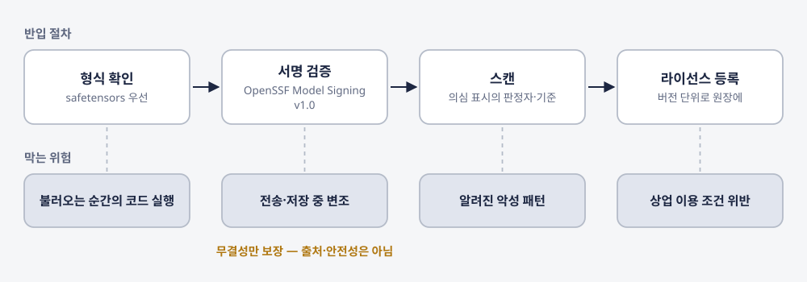
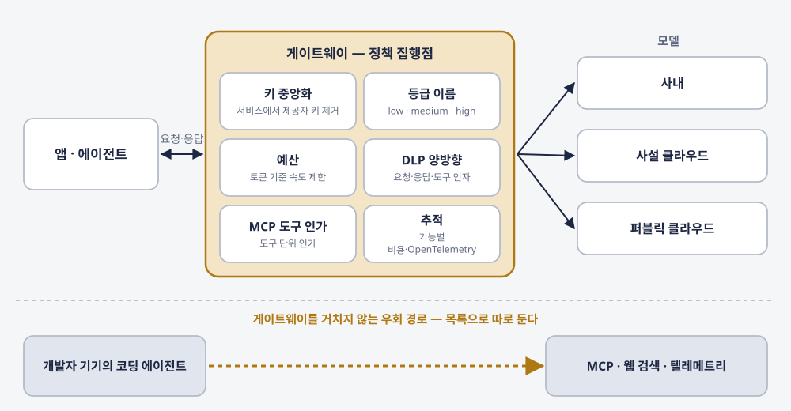
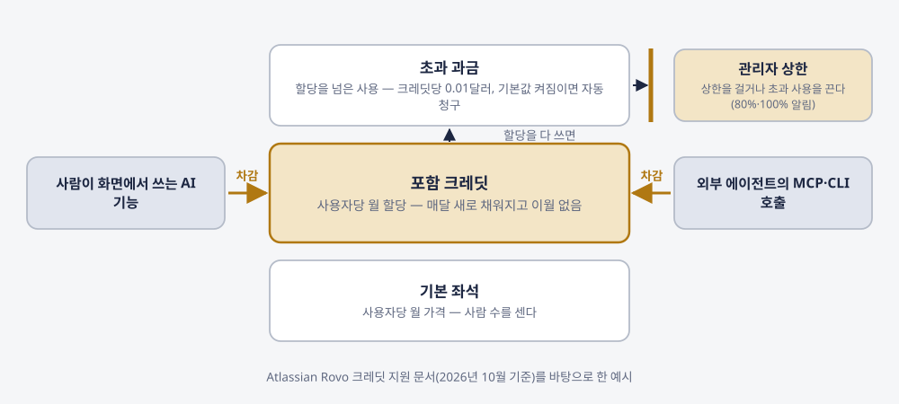
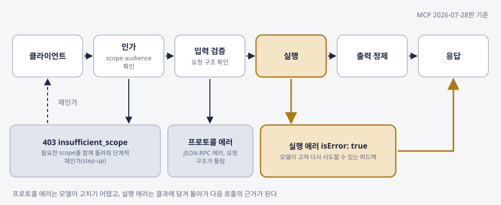
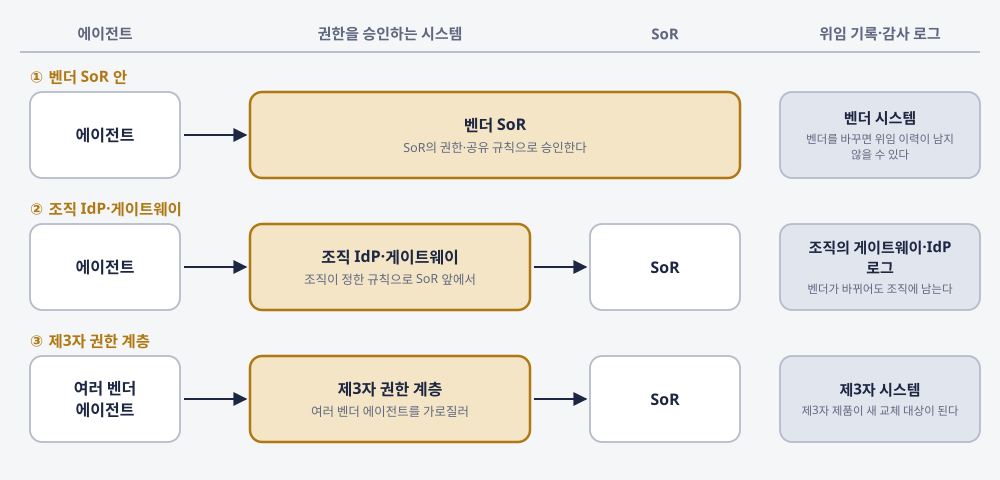
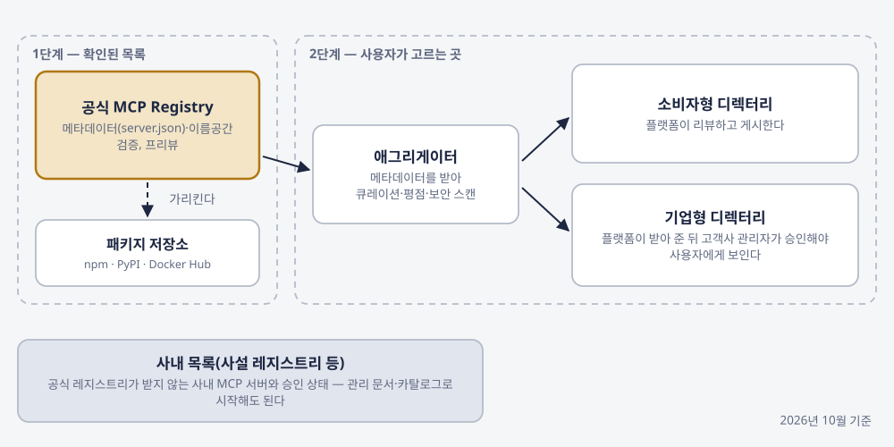

1부. 스택이 다시 짜인다
기록 시스템 벤더가 화면을 거치지 않는 호출 경로를 열고, 한 조직이 여러 모델을 여러 위치에서 돌리게 되면, 소프트웨어 쪽과 모델 쪽에서 각각 무엇이 바뀌고 무엇이 그대로 남는가?

김상기
판본: v1.1.0 · 2026-10-25
에이전트가 사는 곳 — 모델은 어디서 돌리고, SaaS는 어떻게 사며, 통제권은 어디에 남는가
판본: v1.1.0 발행일: 2026-10-25 저자: 김상기 식별자: urn:uuid:29df8fb3-2d7f-4bba-91b0-d02ed0b1ade6
이 판본은 초안 판본이다. 제작 방식과 저자가 정하고 확인한 범위는 서문의 「이 책은 어떻게 만들어졌나」와 부록 C에 적었다.
판 이력: v1.0.0(2026-10-24) 초판 초안 · v1.1.0(2026-10-25) 외부 편집 검수서를 저자 결정으로 전부 반영 — 사실 검증 에이전트가 검수서를 1차 원문에 다시 대조한 결과(V1~V20)를 따라 3~12장의 사실 문장을 고치고, 문장 수정안 35건과 구성 제안을 반영하고, 공개 출처 5건의 서지를 참고문헌에 복원하고, 가설 카드 S5-2의 근거 강도를 약으로 고치고, 표지를 교체하고 삽화 7점을 더함
표지와 삽화 7점은 외부 검수자가 이미지 생성 도구로 만든 시안을 저자가 채택한 그림이다. 그림 속 공간과 사람은 상상으로 그린 장면이며, 실제 조직·시설·제품 화면이나 시스템 구조를 그린 것이 아니다. 본문 그림 13점(그림 N-k)은 각 장 원고의 사실만으로 스크립트가 그린 도식이다.
이 책은 CC BY-NC-SA 4.0 라이선스로 배포된다 — Creative Commons 저작자표시-비영리-동일조건변경허락 4.0 국제.
이 책은 book-writer 하네스 v2.1.0로 자동 생성되었다.
“로컬 모델을 들일까.” “SaaS 재계약서에 무엇을 넣을까.” “외부 에이전트가 우리 SaaS를 부르면 그 비용은 어디서 빠지나.” 조직의 IT·보안·구매 쪽에는 이런 질문이 따로따로 들어온다. 앞의 것은 인프라 품의로, 뒤의 둘은 구매 검토로 올라가서 서로 다른 회의에서 다뤄진다.
2026년에는 두 방향에서 동시에 변화가 확인됐다. 소프트웨어 쪽에서는 기록 시스템(SoR)을 파는 벤더들이 화면을 거치지 않고 기능을 부르는 경로를 스스로 열었다. Salesforce는 4월에 Headless 360을, ServiceNow는 5월에 Action Fabric과 MCP Server를 발표했다. 모델 쪽에서는 대기업 100곳을 조사한 결과에서 세 개 이상의 모델 계열을 쓴다는 곳이 81%였고, 모델을 둘 수 있는 위치도 늘었다.
로컬 모델 도입과 SaaS 재계약은 별개로 보이지만, 둘 다 데이터의 처리 위치와 실행 권한을 정하는 일이다. 그래서 이 책은 질문 하나를 붙든다. 에이전트 시대에 조직의 통제권은 어디에 남는가. 이 책은 데이터의 처리 위치, 에이전트의 권한, 호출을 통제할 지점을 정하는 데 필요한 표를 제안하고, 12장에서 그 표들을 데이터·권한·경계 세 규칙으로 묶는다.
책 전체에서 가상의 요청서 하나를 따라간다. 내가 겪은 일이 아니라 설명을 위해 만든 사례다. 한 영업 지원 부서가 이미 쓰는 외부 AI 클라이언트의 에이전트를 고객 관리 SoR에 연결해, 상담 기록을 요약하고 다음 할 일을 고객 레코드에 적게 하고 싶다고 요청한다. 3장에서는 그 요약문이 몇 등급이고 누가 볼 수 있는지를, 4장에서는 요약을 직접 돌릴 때와 API로 살 때의 비용을, 6~9장에서는 MCP 조건·크레딧·계약 조항을, 10장에서는 그 SoR의 MCP 서버를 만드는 쪽의 설계를 이 요청서에 대 본다. 12장에서 요청서는 조건을 달고 돌아간다.
첫 번째 독자는 에이전트와 SaaS를 사는 쪽이다. 조직의 IT·보안·AX·구매 리더, 그리고 생성형 AI를 조직에 한 번 이상 들여 본 실무 리더를 생각하고 썼다. 이 책에서 AX는 AI 전환만 뜻한다. 두 번째 독자는 만드는 쪽이다. SaaS·플랫폼 제품을 맡은 사람과 DevRel에게는 4부(10·11장)를 따로 두었다. MCP·OAuth·라우터는 개념과 사양 문장까지 다루고, 사양을 인용할 때는 “MCP 2026-07-28판 기준”처럼 판본을 붙였다. 프로그램 코드는 넣지 않았다.
같은 소재를 「조직 에이전트 2027」(이 책의 전작)의 6장(로컬과 클라우드 사이)과 9장(SaaS는 사라지는가)이 다뤘다. 그 책은 2027년의 의제를 소개했고, 이 책은 그 의제를 회의에 들고 갈 표로 바꾼다. 각 장에서 필요한 전제는 짧게 다시 설명하고, 전작의 상세 논의는 참고 자료로 안내했다. 본문에서는 그 책을 “전작”이라고도 부른다.
책은 4부 11장과 맺는 장으로 되어 있다. 1부(1·2장)는 소프트웨어 쪽과 모델 쪽에서 바뀐 것을 확인한다. 2부(3~5장)는 하이브리드 배치의 경계를 데이터 등급, 비용, 집행 지점의 순서로 긋는다. 3부(6~9장)는 사는 쪽의 구매·계약 결정을 MCP 조건, 크레딧 과금, 사서 쓰기와 만들어 쓰기, 권한을 승인하는 시스템과 계약 조항의 순서로 짠다. 4부(10·11장)는 같은 규칙을 만드는 쪽에서 본다. 12장은 앞의 도구를 데이터·권한·경계 세 규칙으로 다시 묶는다.
순서대로 읽지 않아도 된다. GPU 서버 품의가 올라와 있다면 4장, SaaS 재계약을 앞두고 있다면 6·7·9장, 우리 제품에 MCP 서버를 붙이려 한다면 10장부터 읽어도 된다. 어디서부터 꺼낼지 모르겠다면 12장의 통합 규칙표(표 12-1)를 먼저 보고 필요한 장으로 돌아가는 방법도 있다.
장마다 같은 자리에 같은 장치를 두었다.
자료를 읽는 원칙은 여기서 한 번 밝혀 둔다. 벤더 공식 문서는 기능이나 정책이 있다는 사실을 입증할 뿐, 그 기능의 효과를 입증하지 않는다. 벤더가 스스로 잰 수치는 벤더의 측정으로 읽는다. 본문에서는 이 원칙을 문장마다 되풀이하지 않고, 수치마다 다른 한계가 있을 때만 따로 적었다. 제품의 상태·가격·크레딧은 모두 2026년 10월 기준이고 바뀔 수 있다. “이번 조사 범위에서 찾지 못했다”는 문장은 이 책의 리서치에서 찾지 못했다는 뜻이지, 그런 사례가 없다는 뜻이 아니다. 국내 기업은 본문에서 업종과 규모로 일반화해 적었고, 공개된 자료의 출처는 참고문헌에 밝혔다. 정부·공공기관과 해외 벤더·연구기관·법원은 본문에서도 실명으로 썼다.
5장에서 나는 모델 호출이 모이는 지점에 누가 어떤 정책을 거는지를 문서로 남기자고 쓰고, 10장에서는 에이전트에게 줄 권한을 처음부터 좁게 정하자고 쓴다. 같은 기준을 이 책을 만든 과정에 먼저 적용한다.
이 책의 리서치와 초안은 에이전트들이 썼다. 공개 저장소의 책 저술 하네스(book-writer v2.1.0)를 썼고, 그 안의 에이전트들은 Anthropic의 Claude 모델로 돌아간다. 리서치, 계획, 저술 전 사실 대조, 장별 저술과 사실 검증, 그림, 통합, 교정, 수락 검수를 단계별로 나눠 돌렸다. 단계마다 무엇을 했는지와 그 기록의 수치는 부록 C에 적었다.
내가 정하고 답한 것은 방향과 계획 승인, 인터뷰 답이다. 내 경험은 인터뷰 답과 전작을 쓸 때 한 답, 전작에 공개한 범위 안에서만 썼고, 경험이 없다고 답한 질문이 걸린 장은 공개 자료만으로 썼다. 에이전트들에게 건 규칙(실명과 비공개 수치를 쓰지 않고, 내 망설임이나 감정을 지어 넣지 않는다)도 부록 C에 적었다.
이해관계도 하나 밝혀 둔다. 이 책을 만든 하네스는 Anthropic의 Claude 모델로 돌아가고, 본문은 같은 회사의 자료를 여러 번 인용한다. 2장의 Claude for Government, 4장의 Claude 워크스페이스 지출 한도, 10장의 도구 설계 글과 코드 실행 글, 11장의 Claude 디렉터리 제출 문서다. 이 자료들에도 다른 회사의 자료와 같은 기준으로 출처 성격과 확인 상태를 붙였다.
v1.1.0에서는 외부 검수자가 낸 편집 검수서를 전부 반영하기로 내가 정했다. 검수서는 문체·구성·본문 내부 논리를 본 편집 검수이고, 인용된 외부 자료 전체를 재검증한 사실 검증 보고서가 아니라고 스스로 밝혔다. 그래서 사실 검증 에이전트가 검수서의 사실 주장과 문장 수정안을 1차 원문에 다시 대조했고, 편집은 그 대조 결과를 따랐다. 공개된 국내 기술블로그의 출처를 참고문헌에 복원한 것도 이때 내가 정했다. 표지와 삽화 일곱 점은 외부 검수자가 이미지 생성 도구로 만든 시안이고, 내가 채택했다. 무엇을 어떻게 고쳤는지는 부록 C에 적었다.
마지막으로 가장 중요한 고지다. 이 판본(v1.1.0)의 작업 기록에도 내가 원고 전문을 읽고 검토한 기록이 없다. 외부 편집 검수를 반영했지만, 그 검수가 저자의 전문 검토를 대신하지는 않는다. 이 책에서 ’나’로 말하는 문장도 초안은 에이전트가 썼고, 그 문장에 담긴 경험과 판단만 내 인터뷰 답과 요청에서 가져왔다. 틀린 곳을 찾아 고치면, 무엇을 고쳤는지 판 이력에 장과 문장 단위로 남긴다.
1부. 스택이 다시 짜인다
2부. 경계를 긋는다
3부. SaaS 다음
4부. 에이전트가 고객일 때
맺는 장
뒷부속
기록 시스템 벤더가 화면을 거치지 않는 호출 경로를 열고, 한 조직이 여러 모델을 여러 위치에서 돌리게 되면, 소프트웨어 쪽과 모델 쪽에서 각각 무엇이 바뀌고 무엇이 그대로 남는가?
“Why should you ever log into Salesforce again?” Salesforce 공동창업자 Parker Harris가 2026년 3월에 던진 질문이고, Salesforce는 2026-04-15 TrailblazerDX 2026에서 Headless 360을 발표하면서 공식 발표문에 이 질문을 다시 올렸다[공식]. 영업 담당자가 매일 아침 여는 그 화면에 다시 로그인할 이유가 무엇이냐는 질문을, 화면을 팔아 온 회사가 공식 발표문에 적었다. 발표 제목에는 “No Browser Required”라는 문구가 붙었다.
발표의 뜻은 SaaS를 없애는 데 있지 않고, 사람이 화면에서 하던 일을 에이전트도 호출할 수 있게 하는 데 있다. Salesforce가 없애겠다고 한 것은 화면을 거쳐야만 일을 할 수 있는 경로이고, 플랫폼의 기능은 그대로 남는다. 그러면 사는 쪽에는 다른 질문이 생긴다. 우리가 이미 돈을 내고 쓰는 SaaS가 에이전트의 호출을 받기 시작하면, 무엇이 호출로 바뀌고 무엇이 그대로 남는가. 그 구분을 할 줄 알아야 재계약 때 따질 항목이 보이고, 모델을 어디에 둘지 정할 때도 같은 구분이 다시 쓰인다.
먼저 용어 하나를 정해 두자. 이 책에서 헤드리스 접근은 SaaS의 기능·흐름·승인을 화면 없이 부르는 방식(API·MCP·CLI로 화면 없이 호출)을 가리킨다. 그리고 데이터가 처음 생기고 권한과 감사가 걸리는 원장 시스템을 기록 시스템(SoR, system of record)이라고 부른다. 고객 관리, 인사, IT 서비스 관리처럼 조직이 “정본”을 두는 시스템이다.
Salesforce Headless 360은 플랫폼 기능 전부를 API·MCP 도구·CLI 명령으로 노출하겠다는 발표였다[공식]. 공식 발표문은 “More than 60 new MCP tools”와 “30+ preconfigured coding skills”를 내세웠고, 헤드리스 경로가 기존의 승인 체계·비즈니스 규칙·권한·공유 규칙·컴플라이언스 통제를 그대로 상속한다고 주장했다. 실제 배포에서 권한이 빠짐없이 이어지는지는 사는 쪽이 시험 환경에서 확인할 일이다(표 1-2의 ③). 발표 기사에는 가격 언급이 없었다. 2026-08-19에는 Headless 360 MCP Server와 Data 360 MCP Server 등으로 범위를 넓혔다는 보도가 나왔다[매체, 공식 보도자료 미대조]. Salesforce는 FY27 2분기부터 Agentforce ARR(연간 반복 매출) 정의에 Headless 360을 넣었다(전작 「조직 에이전트 2027」 9장). 헤드리스 경로도 매출로 셈해지는 대상이 됐다는 뜻이다.
ServiceNow는 2026-05-05 Knowledge 2026에서 Action Fabric과 MCP Server GA를 발표했다[공식]. Claude·Copilot이나 고객이 직접 만든 에이전트가 ServiceNow의 흐름·플레이북·승인·서비스 카탈로그를 헤드리스로 실행하고, 그 행동은 AI Control Tower를 거쳐 신원 확인·권한 범위·감사를 받는다는 구조다. 발표문의 두 문장을 그대로 옮긴다. “The MCP Server is generally available today and included in every Now Assist and AI Native SKU.” 그리고 “Headless actions consume the same Assist currency customers already use for Now Assist and AI Agents, creating a unified consumption model.” 사람이 화면에서 AI 기능을 쓸 때 차감되던 Assist가 에이전트의 헤드리스 호출에서도 똑같이 차감된다는 말이다(7장 표 7-1).
Workday는 이보다 앞선 2025-06-03에 Agent Gateway를 발표했다[공식]. 외부 에이전트를 MCP 호환 API로 연결하는 방식이다. Workday는 에이전트도 사람 직원처럼 채용·온보딩·권한·성과관리 대상으로 다루는 Agent System of Record를 함께 내세웠고, 과금 쪽에는 구독에 포함돼 해마다 갱신되는 Flex Credits를 두었다(2025-09-16 발표).
세 벤더의 경로를 나란히 놓으면 표 1-1이 된다. Atlassian·Slack·HubSpot처럼 MCP를 열거나 좁힌 다른 벤더는 넣지 않았다(6장).
표 1-1. SoR 벤더의 헤드리스 경로 비교 (2026년 10월 기준, 바뀔 수 있다)
| 제품 | 발표일 | 경로 | 과금 단위 | 권한 상속 주장 | 확인 상태 |
|---|---|---|---|---|---|
| Salesforce Headless 360 | 2026-04-15 | API·MCP 도구(60개 이상)·CLI | 발표문에 가격 언급 없음. Agentforce ARR 정의에 포함(FY27 2분기부터) | 승인·비즈니스 규칙·권한·공유 규칙·컴플라이언스 통제 상속 | [공식] ✓. 2026-08-19 확장은 [매체] △ |
| ServiceNow Action Fabric + MCP Server | 2026-05-05(GA) | MCP 서버, 흐름·플레이북·승인·카탈로그 헤드리스 실행 | Assist(화면 사용과 같은 소비 화폐) | AI Control Tower 경유 신원·권한 범위·감사 | [공식] ✓ |
| Workday Agent Gateway | 2025-06-03 | MCP 호환 API | Flex Credits(구독 포함, 연 갱신, 단가 미공개) | 에이전트를 Agent System of Record에 등록해 권한 관리 | [공식] ✓. 단가는 △ |
표의 “권한 상속 주장” 열은 벤더가 발표문에서 한 말을 옮긴 것이다. 사는 쪽이 계약 전에 시연이나 시험 환경에서 확인할 항목으로 읽으면 된다.
화면을 팔던 회사가 스스로 화면을 우회하는 경로를 연 이유를 벤더 내부 사정으로 단정할 근거는 없다. 다만 세 발표에는 공통점이 하나 있다. 경로를 열면서 그 경로에 과금 단위와 통제 지점을 같이 붙였다는 점이다. Salesforce는 ARR 정의에 넣었고, ServiceNow는 기존 소비 화폐로 차감하며, Workday는 크레딧을 따로 두었다. 권한과 감사도 세 곳 모두 벤더 쪽 장치(공유 규칙, AI Control Tower, Agent System of Record)에 묶었다. 외부 에이전트가 우회로를 만들기 전에 공식 경로를 먼저 깔고, 그 경로 위에서 권한과 과금을 계속 쥐는 방식이다. 구매자는 공식 연결 경로를 얻는 대신, 그 경로의 권한·과금 조건을 확인해야 한다. 공식 경로가 있으니 비공식 스크래핑에 기댈 일은 줄지만, 그 경로의 조건은 벤더가 정한다.
ServiceNow 발표문은 이 조건이 어디에 모이는지를 가장 구체적으로 보여 준다. MCP Server Console에 “AICT governance, consumption metering, managed open authorization (OAuth), enterprise audit trails, session management, and role-based tool packages”를 넣었다고 적었다[공식]. AI Control Tower 거버넌스, 소비 계량, 인증, 감사 기록, 세션 관리, 역할별 도구 묶음이 한 관리 화면에 들어 있다는 뜻이다. 사용자 대신 에이전트가 호출하더라도, 관리자는 어떤 역할에 어떤 도구 묶음을 줄지, 소비 계량을 누가 볼지, 감사 기록을 얼마나 보관할지를 정해야 한다. Salesforce 쪽에서도 2026-08-19 확장 보도는 Agentforce뿐 아니라 Claude·ChatGPT·Cursor 같은 외부 도구의 에이전트가 Salesforce 기능을 찾아 부를 수 있게 된다고 전했다[매체]. 부르는 도구가 늘어나면 허용 클라이언트 목록을 관리하는 일도 그만큼 늘어난다.
애널리스트 쪽에서는 Gartner가 2026-07-01 보도자료로 규모를 제시했다[애널리스트]. 2030년까지 최대 2,340억 달러의 기업 애플리케이션 지출이 “agentic arbitrage”에 노출되고, 이는 2030년 기업 애플리케이션 SaaS 지출의 약 20%에 해당한다는 전망이다. 같은 보도자료는 “This breaks the link between user growth and revenue growth for many enterprise software vendors”라고 적었고, “the user interface is no longer a differentiation”이라고도 했다. 많은 기업용 소프트웨어 벤더에서 사용자 수가 늘어야 매출이 느는 좌석 모델의 연결 고리가 끊어지고, 화면이 경쟁력의 근거가 되지 못한다는 진단이다.
그런데 같은 보도자료에는 반대 방향의 문장도 들어 있다. “Better outcomes from AI require systems that can retain deep institutional memory and customer context over time.” 화면의 가치가 줄어도 조직의 기억과 고객 맥락을 오래 쥐고 있는 시스템은 여전히 필요하다는 말이다. 보도자료는 전체 흐름을 “less an apocalypse and more of a metamorphosis”로 정리했다. 이 두 문장을 한쪽만 떼어 인용하면 보도자료가 말한 것보다 훨씬 극단적인 주장이 된다. 덧붙여 둘 것이 하나 있다. 이 보도자료에는 계약 조항에 관한 권고가 없다. 이 책이 3부에서 만드는 계약 점검 도구는 내 설계이고, 이 보도자료의 권고가 아니다.
에이전트가 나오기 전의 API 경제에는 동료 심사를 거친 실증 연구가 있다. Benzell·Hersh·Van Alstyne의 연구(Management Science 70(10), 2024-10)는 공개 API를 채택한 상장사가 비슷한 비채택 기업보다 16년에 걸쳐 38.7% 더 성장했다고 보고했다[논문-심사]. 같은 연구는 단점으로 데이터 유출 위험 증가를 들었다. 상관 연구이고 에이전트 이전 시기의 데이터라, “API를 열면 성장한다”는 인과로 옮길 수는 없다. 다만 기능을 바깥에 연 기업들에서 성장과 유출 위험이 함께 관찰됐다는 점은 지금의 MCP 개방을 볼 때도 나란히 놓아 둘 만하다.
문서 쪽에서도 1차 독자가 바뀌는 징후가 있다. 한 문서 호스팅 벤더는 자사가 호스팅하는 문서 요청에서 AI 코딩 에이전트의 몫이 브라우저와 맞먹는다는 자사 데이터를 내놨다[조사-벤더]. 웹 전체가 아니라 그 벤더가 호스팅하는 문서만의 수치다(11장).
Headless 360과 Action Fabric이 실제로 바꾸는 것은 두 가지로 좁혀진다. 하나는 사용자 화면이다. 영업 담당자가 기회 단계를 바꾸려고 화면을 열고 드롭다운을 고르던 일이, 에이전트가 MCP 도구 하나를 부르는 일로 바뀐다. 사람이 화면을 보지 않으니, 화면에 들어 있던 안내·경고·확인 대화상자도 같이 사라진다. 화면에서 “정말 삭제하시겠습니까”를 띄우던 장치가 호출 경로에서는 어디로 가는지 따로 확인해야 한다.
다른 하나는 사용자 수와 매출의 연결이다. 좌석 과금은 화면을 쓰는 사람 수에 비례해 돈을 받는 모델이다. 에이전트 하나가 여러 사람의 일을 대신 호출하면 좌석 수는 실제 사용량을 나타내지 못한다. 그래서 벤더들은 호출에 따로 셈하는 단위를 붙이고 있다. ServiceNow의 Assist, Workday의 Flex Credits가 그 예다.
반대로 화면이 사라져도 남는 것이 있다. 첫째는 권한·승인·감사 규칙이다. 누가 어떤 레코드를 볼 수 있는지, 어떤 변경에 누구의 승인이 필요한지, 그 행동이 어디에 기록되는지는 화면이 있든 없든 정해야 한다. Salesforce는 헤드리스 경로의 권한 상속을, ServiceNow는 AI Control Tower 경유를 발표문에 명시했다. 두 벤더 모두 이 규칙이 호출 경로에서도 유지된다고 말한 셈이다. 다만 규칙이 남는다는 것과 규칙이 같은 곳에서 집행된다는 것은 다른 이야기다. 화면 경로에서는 사람이 로그인한 세션에 권한이 붙었지만, 호출 경로에서는 에이전트가 누구의 권한으로 부르는지, 그 위임이 어디에 기록되는지를 새로 정해야 한다.
승인도 같은 질문을 받는다. Action Fabric 발표문은 헤드리스로 실행할 수 있는 대상에 흐름·플레이북과 함께 승인을 넣었다. 승인 흐름을 에이전트가 부를 수 있다면, 설정에 따라서는 승인을 요청하는 쪽과 승인하는 쪽이 모두 에이전트인 배치도 생길 수 있다. 기존 화면에서 적용하던 승인자와 직무 분리 규칙이 에이전트 호출에도 유지되는지 확인해야 한다. 어떤 승인을 사람만 할 수 있게 남길지, 그 구분을 SaaS 설정에 둘지 조직 쪽 집행 지점에 둘지도 이때 정한다.
둘째는 과금 단위다. 화면이 없어져도 벤더는 돈을 받는다. 바뀌는 것은 무엇을 세느냐다. 좌석을 세던 계약서에 크레딧 차감이 얹히면, 사는 쪽은 외부 에이전트의 호출이 어느 단위에서 빠져나가는지를 계약 단계에서 확인해야 한다.

그림 1-1은 두 경로를 나란히 놓은 것이다. 위쪽 화면 경로와 아래쪽 호출 경로가 갈라졌다가 권한·승인·과금 세 지점에서 다시 만난다. 이 세 지점이 이 책 2부와 3부에서 쓰는 도구들의 열이 된다. 2부의 경계 규칙표는 “누구의 권한으로, 어떤 데이터가 어디로 가나”를 묻고, 3부의 구매 판단표와 계약 점검표는 “어떤 조건으로 호출을 열고, 어느 단위에서 차감되나”를 묻는다.
이 구분이 서면 사는 쪽이 할 일도 분명해진다. 조직이 쓰는 SaaS를 하나씩 놓고 헤드리스 경로가 있는지, 있다면 그 호출이 어떻게 과금되고 권한이 어떻게 이어지며 외부 에이전트를 어디까지 허용하는지를 묻는 것이다. 벤더 발표문은 대개 첫 질문에 답하고, 나머지는 일부만 건드린다. 나머지는 가격 문서, 관리자 문서, 계약서, 그리고 시험 환경에서 확인해야 한다.
ServiceNow에 네 질문을 대 보면 이 차이가 드러난다. 헤드리스 경로는 발표문으로 답이 나온다. MCP Server가 GA이고 모든 Now Assist·AI Native SKU에 들어 있다. 과금 단위도 화폐 이름까지는 나온다. 헤드리스 행동이 Assist를 차감한다. 그러나 행동 하나가 Assist를 얼마나 차감하는지는 이 책이 확인한 발표문 인용 범위에 없어서 가격 문서로 넘어간다. 권한은 AI Control Tower를 거쳐 신원·권한 범위·감사를 받는다는 구조까지 나오지만, 에이전트가 요청한 사용자의 권한을 그대로 물려받는지 별도 계정으로 움직이는지는 관리자 문서와 시험 환경에서 봐야 한다. 외부 에이전트의 허용 범위는 Claude·Copilot·자체 에이전트라는 예시만 있고, 허용 동작과 호출 상한은 발표문 인용에서 보이지 않는다. 발표문이 비교적 자세한 편인 벤더인데도 네 질문 가운데 온전히 답이 나오는 것은 하나다. 답이 흩어져 있으니, 누가 어느 문서를 보고 채웠는지를 같이 적어 둔다. 서문의 가상 요청서라면 고객 관리 SoR 하나를 놓고 이 네 질문부터 채우게 된다.
사내 SaaS를 쓰는 기능 단위로 세 묶음으로 나누면 적용 순서가 정해진다. 기록 시스템은 고객 원장처럼 정본 데이터와 권한·감사가 걸린 기능이다. 주변부 UI형은 워크플로 도구, 어드민 화면, BI 대시보드, 입력 폼처럼 기록 시스템의 데이터를 보여 주고 고치게 하는 기능이고, 범용 유틸은 문서·메신저·화상회의처럼 어느 조직에서나 같은 일을 하는 도구다. 한 제품이 여러 묶음에 걸칠 수 있다. 이 분류는 전작 9장의 표 9-2에서 가져왔고, 이 책도 같은 이름을 쓴다. 네 질문은 기록 시스템 묶음부터 적용한다. 권한과 감사가 걸린 원장이 그곳에 있기 때문이다.
표 1-2는 SaaS 하나를 놓고 헤드리스 전환의 영향을 묻는 점검표다. 쓰는 때는 세 경우다. SaaS 재계약이 석 달 안으로 다가왔을 때, 현업이 “외부 에이전트를 이 SaaS에 붙이고 싶다”고 요청했을 때, 벤더가 MCP 서버나 에이전트 게이트웨이 출시를 알려 왔을 때다. 이 점검표로 개방 여부를 결정하지는 않는다. 결정에 필요한 사실이 어디에 있고 무엇이 비어 있는지를 먼저 드러내는 용도다.
표 1-2. 가져갈 도구 — 화면→호출 점검표
| 질문 | 확인할 것 | 확인할 곳 | 답이 비면 | 근거 |
|---|---|---|---|---|
| ① 헤드리스 경로가 있나 | API·MCP 서버·CLI 중 무엇을 공식 제공하나, GA인가 프리뷰인가, 어느 SKU에 포함되나 | 벤더 발표문·제품 문서·SKU 표 | 비공식 우회(스크래핑·비공식 MCP)가 생길 수 있다. 사내 사용 현황부터 확인 | WS-1·WS-2·WS-10 |
| ② 헤드리스 호출의 과금 단위는 무엇인가 | 좌석 안 포함인가, 크레딧·소비 화폐 차감인가, 호출당 과금인가. 화면 사용과 같은 단위인가 | 가격 문서·계약서·주문서 | 벤더에 서면 질의. 답을 받기 전에는 외부 에이전트 연결을 시범 범위로 제한 | WS-2(같은 Assist 화폐) |
| ③ 권한은 어떻게 이어지나 | 에이전트가 사용자 권한을 상속하나, 별도 서비스 계정인가. 공유 규칙·승인 흐름이 호출 경로에도 적용되나. 위임 기록이 어디에 남나 | 관리자 문서·보안 백서·시험 환경 | 시험 환경에서 권한 밖 레코드 조회를 직접 시도해 반환 여부 확인 | WS-1(상속 주장)·WS-2(AI Control Tower) |
| ④ 외부 에이전트를 어디까지 허용하나 | 허용 클라이언트 목록, 허용 동작(읽기·생성·수정·삭제), 호출 상한, 관리자 승인 절차 | 관리자 콘솔·개발자 문서·이용 약관 | 6장 구매 판단표 “MCP 조건”으로 넘겨 세부 조건 확인 | WS-10(Agent Gateway) |
표의 “근거” 열은 질문을 만든 출처다. 각 SaaS의 실제 값은 2026년 10월 기준 공개 문서로 채우고, 바뀔 수 있으니 확인한 날짜를 함께 적는다.
채우는 순서는 다음과 같다.
표 1-3. 가설 카드 — 헤드리스 경로의 매출 공개
| ID | 가설 (2027년 말 판정) | 근거 (출처 성격 · 확인 상태 · 근거 강도) | 반증 조건 | 작은 실험 |
|---|---|---|---|---|
| S1-1 | SoR 벤더의 실적 공시에 헤드리스·에이전트 경유 매출이 별도 지표로 공개된다 (전작 H9-1과 연동) | ServiceNow 헤드리스 호출의 Assist 차감 [공식] ✓, Salesforce Agentforce ARR 정의에 Headless 360 포함 [공식] ✓, Gartner “breaks the link between user growth and revenue growth” [애널리스트] ✓ · 약~중 | 2027년 말까지 주요 SoR 벤더(Salesforce·ServiceNow·Workday)의 실적 자료가 헤드리스 호출을 기존 ARR·크레딧 지표 안에만 묶고 따로 공개하지 않음 | 조직이 계약한 SoR 벤더 세 곳의 분기 실적 자료에서 “헤드리스·MCP·에이전트 경유”라는 말이 들어간 지표를 분기마다 한 줄씩 기록 |
S1-1은 전작의 H9-1(SaaS의 매출 중심이 SoR·권한·의미 계층으로 옮겨 간다)을 실적 공시라는 관찰 가능한 사건으로 좁힌 카드다. 근거 강도를 약~중으로 둔 이유는 두 근거가 모두 “헤드리스 호출이 과금된다”까지만 입증하기 때문이다. 과금된다는 사실에서 그 매출을 투자자에게 따로 보여 준다는 결론까지는 한 단계가 더 있다. 이미 Salesforce처럼 헤드리스 경로를 기존 ARR 정의 안에 넣는 방식이 있어서, 별도 지표가 나오지 않을 가능성도 작지 않다. 판정할 때는 지표 정의가 바뀌었다는 각주부터 확인한다.
조직에서 가장 많이 쓰는 SaaS 다섯 개를 골라 표 1-2를 한 장씩 채워 보자. 다섯 장이 모이면 ②번 질문의 답이 비어 있는 SaaS가 몇 개인지 세고, 그 SaaS의 재계약일을 옆에 적는다. 재계약일이 가장 가까운 SaaS부터 벤더에 서면 질의를 보낸다.
81%. 벤처캐피털 a16z가 2026-01-30 공개한 엔터프라이즈 CIO 조사에서, 테스트나 운영 단계에서 세 개 이상의 모델 계열을 쓴다고 답한 기업의 비율이다[애널리스트]. 1년이 채 안 된 이전 조사에서는 68%였다. 응답 기업은 G2000에 드는 100곳이고, 그중 88%가 매출 10억 달러 이상이다. 표본이 100곳이니 업계 전체의 비율로 읽기는 어렵다. 그래도 대기업 안에서 한 모델만 쓰는 구성이 소수로 줄고 있다는 방향은 읽힌다. 이 장의 제목이 말하는 두 개의 두뇌는 조직 바깥 클라우드에서 도는 모델과 조직이 직접 들여와 돌리는 로컬 모델이다. 81%가 보여 주는 현실은 여러 클라우드 모델 위에 일부 로컬 모델이 섞이는 그림에 가깝다.
같은 조사에는 눈여겨볼 숫자가 하나 더 있다. 프런티어 모델을 만든 연구소에 모델 호스팅을 직접 맡기는 일을 편하게 여긴다는 기업이 2024-03 약 40%에서 약 80%로 늘었다. 클라우드에 대한 거부감이 줄었다고 해서 배치 고민이 사라진 것은 아니다. 오히려 고를 수 있는 위치가 늘어나면서, 위치마다 누가 무엇을 책임지는지를 정하는 일이 더 복잡해졌다. 모델을 둘 수 있는 곳마다 조직이 떠안는 통제 책임은 무엇이고, 그 위치를 믿을 근거는 어디서 오는가. 이 질문에 답하려면 위치를 먼저 다시 나눠야 한다.
전작 「조직 에이전트 2027」 6장의 표 6-1은 처리 위치를 온디바이스·사내·사설 클라우드·퍼블릭 클라우드의 네 갈래로 나눴다. 이 책은 그 네 갈래를 넓혀 아래 여섯 이름을 모든 장에서 쓴다. 여섯 이름은 서로 배타적인 칸이 아니라 자주 쓰이는 대표 구성이다.
여섯 이름은 서로 다른 축을 가리킨다. 온디바이스·사내·퍼블릭 클라우드는 모델이 도는 물리 위치와 운영 주체를, 계약형 사설 클라우드는 책임을 계약으로 나누는 방식을, 기밀 컴퓨팅형은 보호 방식을, 인가 경계 클라우드는 제3자 인증 조건을 가리킨다. 그래서 한 배치가 둘 이상에 해당할 수 있다. 인가 경계 안에서 기밀 VM을 쓰는 배치가 그런 예다. 표 2-1은 이름마다 가리키는 축을 열로 적었고, 겹치는 배치라면 해당하는 행을 모두 채우게 했다.
새로 생긴 두 행은 사설 클라우드를 둘로 나눈 것과, 퍼블릭 클라우드 앞에 인가 경계 클라우드를 따로 세운 것이다. 나눈 이유는 행마다 신뢰의 근거가 다르기 때문이다. 계약형 사설 클라우드에서는 사업자가 계약을 지킬 것이라고 믿는다. 기밀 컴퓨팅형에서는 그 믿음의 상당 부분을 하드웨어가 내놓는 증명으로 대신한다. 인가 경계 클라우드에서는 정부 같은 제3자의 인가 심사를 믿는다. 같은 “클라우드”라는 이름 아래 있어도, 보안 리더가 감사 때 내밀 수 있는 근거가 서로 다르다.
온디바이스 행에도 새 근거가 있다. Intel은 IEEE ICCE 2026 논문을 바탕으로 한 기사에서 추론을 AI PC로 끌어내리는 동인을 넷으로 들었다[공식·칩 판매사 주장]. 토큰 비용 증가, 지연, 데이터 상주, 거버넌스다. 기사는 AI PC 위에 암호화된 로컬 RAG 색인을 두면 많은 질문을 오프라인으로 처리할 수 있다고 했다.
이 기사에서 쓸 만한 것은 동인보다 측정 지표 쪽이다. 기사는 모델 정확도 대신 과업 성공률, 지연, 에너지, 질의당 비용을 재라고 권한다. 배치 위치를 비교할 때 바로 가져다 쓸 수 있는 네 지표다. 반대로 “클라우드 지출 절감이 AI PC 하드웨어와 에너지 비용을 합친 것보다 클 때가 많다”는 취지의 주장에는 수치나 데이터가 붙어 있지 않다. 기업이 AI PC나 에지 장비에 모델을 대규모로 배치한 공개 사례도 이번 조사 범위에서는 찾지 못했다. 로컬 런타임 쪽에서도 이번 조사 기간에 배치 판단을 바꿀 만한 새 발표는 확인하지 못했다.

그림 2-1은 여섯 구성을 신뢰 근거와 조직의 통제 책임이라는 두 축 위에 놓은 것이다. 오른쪽으로 갈수록 “누가 운영하느냐”보다 “무엇을 검증할 수 있느냐”가 신뢰의 근거가 되고, 위로 갈수록 인증·패치·감시를 조직이 직접 떠맡는다.
전작 6장은 Apple Private Cloud Compute가 Google Cloud로 넓어진 사례에서 신뢰의 기준이 “누가 운영하느냐”에서 “무엇을 검증할 수 있느냐”로 옮겨 가는 사례를 봤다. 같은 방향의 선택지는 기업이 직접 살 수 있는 상품으로도 이미 나와 있고, 2026년 하반기에는 그 성능을 따져 볼 자료가 더해졌다.
NVIDIA는 2026-09-22 개발자 블로그에서 기밀 컴퓨팅(CC)을 켠 상태의 추론 성능을 공개했다[공식·벤더 자체 측정]. 조건은 구체적이다. DGX B200(GPU 8개), DeepSeek-R1(입력 32K·출력 1K 토큰), TensorRT LLM, Intel TDX 환경에서, 동시 요청 1~16개 구간을 쟀다. 결과는 “CC on retained 96.1% to 98.2% of baseline throughput”, 토큰당 지연은 1.2~4.3% 늘었다. 이 숫자를 조직의 성능 가정으로 그대로 쓰기는 어렵다. 벤더가 자기 하드웨어로 잰 값이고, 그 수치를 내려고 암호화용 버퍼 처리와 GPU 간 통신 방식을 CC에 맞게 따로 손봐야 했다고 글 스스로 밝힌다. 처리량 손실은 작아졌지만, 그 결과를 재현하는 엔지니어링 작업은 조직이나 사업자 어딘가에 남는다. 2차 자료에 따르면 A100 이하 세대는 CC 모드를 지원하지 않고 H100 이후 세대부터 지원한다[2차]. 그 말대로라면 기존 장비가 A100 이하일 때는 기밀 컴퓨팅형으로 돌릴 수 없다.
클라우드 쪽에서는 이보다 앞서 Azure와 Google Cloud가 H100 GPU를 붙인 기밀 VM을 정식 상품으로 내놨다[공식]. Azure는 AMD SEV-SNP와 H100을 묶은 NCCadsH100v5를 2024-09에 GA로 냈고, Google Cloud는 Intel TDX와 H100을 묶은 a3-highgpu-1g 기밀 VM을 2025-07-31에 GA로 냈다. 둘 다 CPU와 GPU를 함께 원격 증명하는 구성이다. 제공 리전은 GA 이후에도 바뀌므로(Azure는 GA 당시 East US 2·West Europe 두 곳이었다), 도입을 검토할 때는 사업자 문서에서 현재 리전과 GPU 종류부터 확인한다.
여기서 “증명”이 무엇을 보장하는지 짚어 두자. 원격 증명은 지금 이 VM이 기대한 하드웨어와 소프트웨어 구성 위에서 돌고 있다는 사실을 암호학적으로 확인해 준다. 그 확인을 누가, 어떤 도구로, 언제 하는지는 조직이 정할 일이다. 기밀 컴퓨팅을 도입할 때는 누가 증명 결과를 검증하고, 검증에 실패하면 처리를 중단할지까지 정해야 한다.
인가 경계 클라우드는 공공 부문에서 먼저 모양을 갖췄다. 미국은 데이터 등급(FedRAMP Moderate·High, 국방부 IL4·IL5·IL6, Top Secret)마다 어느 인가 경계 안의 모델을 쓸 수 있는지가 정해진다. Microsoft는 Azure OpenAI가 FedRAMP High와 IL4·IL5(2024-09), IL6(2025-02), ICD 503 Top Secret까지 인가를 받았다고 밝혔다[공식]. Anthropic은 2026-09-30 Claude for Government를 GA로 냈다[공식·벤더 발표]. FedRAMP High 경계 안에서 통제 대상 비밀 아닌 정보(CUI)를 처리하고, “conversation history stays local on the agency-managed device”라고 했다. 하드 지출 한도, 사용량 과금, SCIM 사용자 관리, 감사 로그가 기본 기능으로 들어갔다는 점도 같이 발표됐다. 이 사례가 보여 주는 것은 데이터 등급이 높아질수록 답이 “모델을 사내로”만 있지 않다는 사실이다. 인가 등급과 데이터 등급을 짝지을 수 있다면, 인가된 경계 안의 클라우드도 선택지가 된다.
로컬 배치를 두고 커뮤니티에서 가장 자주 부딪히는 주제는 돈이다. 그런데 HN의 한 사용자(anonym29, 실명·소속 미확인)는 로컬의 진짜 이점이 돈이 아니라 정보보안의 세 요소에 있다고 정리했다[커뮤니티, 개인 발언·검증 필요]. 기밀성은 데이터가 내 하드웨어에서만 처리된다는 점, 가용성은 API나 인터넷 장애와 무관하다는 점이다. 무결성 쪽 설명은 이렇다. 로컬 모델은 “isn’t being secretly or silently quantized”, 곧 누군가 몰래 모델을 가볍게 바꿔 돌리지 않는다는 것이다. 다른 스레드에서는 클라우드 제공자가 고지 없이 양자화한 판을 돌릴 수 있다는 의심(vova_hn2)도 나왔다[커뮤니티]. 확인된 사실이 아니라 의심이지만, 클라우드 쪽에도 “지금 응답하는 모델이 계약한 그 모델인가”라는 무결성 질문이 있다는 점은 배치표에 적어 둘 만하다.
반대쪽 기록도 있다. GeekNews에 소개된 한 1인칭 글(2026-06 무렵, 원문 블로그의 번역 요약)은 약 1만 2천 달러짜리 GPU 한 장을 사서 클라우드에 올리기 어려운 고객 데이터와 텔레메트리를 분석한 경험을 적었다[커뮤니티]. 그 분석으로 고객의 라이선스 과소 신고를 찾아내 회수한 금액만으로 투자비를 충당했다고 한다. 그러나 장시간 무감독 작업에서는 반복 출력과 환각이 생겨, 결국 클라우드 구독을 대체하지는 못했다. 이 두 기록은 로컬 모델의 장점과 한계를 보여 주는 사례다. 밖으로 내보낼 수 없는 데이터를 다루는 좁은 과업에서는 값을 했고, 길고 열린 작업에서는 클라우드 모델을 대신하지 못했다. 조직의 일반적인 성과를 판단하려면 같은 과업에서 따로 비교해야 한다.
로컬을 고르면 클라우드 사업자가 대신 해 주던 일이 조직으로 넘어온다. 2026년 상반기에 공개된 취약점 하나는 넘어오는 일이 구체적으로 무엇인지를 보여 준다.
CVE-2026-7482는 오픈소스 모델 실행 도구 Ollama의 0.17.1 이전 버전에
있던 취약점이다[공공·CVE 레코드]. GGUF 모델 로더에서 힙 범위 밖 읽기가
일어난다. 공격자가 /api/create로 조작한 GGUF 파일을 올리면
양자화 과정에서 프로세스 메모리가 새고, /api/push로 그
내용을 공격자의 레지스트리에 빼낼 수 있다. 새는 내용에는 환경 변수, API
키, 시스템 프롬프트, 다른 사용자의 대화가 포함될 수 있다. 두
엔드포인트에는 인증이 없다. 심각도는 CVSS 3.1 기준 9.1이다. 취약점을
처음 보고한 데이터 보안 기업 Cyera는 2026-05-02 연구 글에서 2026-02-02에
제보했고 같은 달 25일 수정안을 공유받았다고 밝혔다[조사-벤더].
이 사례에서 사내 운영자가 가져갈 사실은 셋이다. 첫째, Ollama의 기본
바인딩은 127.0.0.1:11434다. 외부 노출은 문서화된
OLLAMA_HOST=0.0.0.0 설정을 널리 쓴 데서 생겼다. 기본값이
안전해도 배포하면서 바꾼 설정이 노출을 만든다. 둘째, 수정 버전 0.17.1은
2026-02-24에 나왔고 CVE는 2026-05-04에 공개됐다. 패치가 CVE보다 약 10주
먼저 나왔는데, 릴리스 노트에는 보안 수정이라는 표시가 없었다. 릴리스
노트에 보안 문구가 붙을 때만 업데이트하는 운영 방식이라면 이 10주를
놓친다. 셋째, 문제가 된 곳은 모델을 만들고 내보내는 관리 기능이었다.
모델 파일 자체가 공격 수단이 됐다는 점에서, 사내 서버 점검은 모델을
어디서 받아 어떻게 들이는지와 떼어 볼 수 없다.
모델 파일이 공격 수단이 될 수 있다면, 사내에 들이는 모델은 소프트웨어 패키지처럼 반입 절차를 거치게 하자. 공개 자료로 짤 수 있는 절차는 네 단계다.
첫 단계는 형식이다. JFrog의 2025-03-04 글은 파이썬 피클로 직렬화한 모델이 불러오는 순간 코드를 실행할 수 있다고 설명한다[조사-벤더]. 가능하면 가중치만 담는 safetensors 형식을 우선하고, 피클 계열은 예외 승인을 거치게 한다.
둘째는 서명 검증이다. OpenSSF는 2025-04-04 Model Signing v1.0을 냈다[표준]. 모델 디렉터리의 모든 파일 해시를 in-toto 매니페스트로 묶어 Sigstore 같은 수단으로 서명하는 방식이다. 서명이 있으면 검증하고, 없으면 받은 출처와 해시를 기록한다. 주의할 점이 있다. 서명은 파일이 바뀌지 않았다는 무결성을 보여 줄 뿐, 누가 어떤 데이터로 만들었는지나 그 모델이 안전한지까지 보여 주지는 않는다(2차 해설 요지). 이 자료들이 나온 지 1년 반이 지났으니 이후 판이 나왔는지도 함께 확인한다.
셋째는 스캔이다. 같은 JFrog 글은 자사 스캐너가 “a reduction of 96% in false positives when compared to existing scanners”, 곧 기존 스캐너보다 오탐을 96% 줄였다고 주장했다[조사-벤더]. 이 수치만으로 스캐너를 고르기는 어렵다. 실제 모델 파일로 성능을 비교하고, 의심 항목의 검토 담당자와 판정 기준도 정해야 한다.
넷째는 라이선스 등록이다. 모델마다 라이선스 이름과 상업 이용 조건, 받은 버전을 적는 라이선스 원장에 버전 단위로 올린다(전작 표 6-2의 한 행).

그림 2-2는 네 단계를 흐름으로 그린 것이다. 단계마다 막는 위험이 다르다는 점이 중요하다. 서명을 통과한 모델도 스캔에서 걸릴 수 있고, 스캔을 통과한 모델도 라이선스 조건 때문에 상업 업무에 못 쓸 수 있다. 한 단계를 통과했다고 다음 단계를 건너뛰지 않게 하는 것이 절차의 목적이다.
표 2-1은 새 업무를 어느 위치에서 돌릴지 정하거나, 이미 돌고 있는 업무의 위치를 재검토할 때 쓴다. 특히 “로컬이면 안전하다”거나 “클라우드라서 안 된다”는 말이 회의에 나왔을 때, 그 말을 위치별 통제 책임과 신뢰 근거로 바꿔 놓고 따져 보는 데 쓰면 좋다. 표의 값은 이 장의 공개 자료로 채운 예시다. 조직의 실제 계약·장비·인가 상황에 맞게 고쳐 쓴다.
표 2-1. 가져갈 도구 — 배치 구성 비교표 (대표 구성 여섯 가지, 겹칠 수 있다 · 2026년 10월 기준 공개 자료로 재구성한 예시)
| 구성 | 이름이 가리키는 축 | 통제 책임 | 신뢰 근거 | 비용 변수 | 대표 위험 | 측정 지표 | 근거 |
|---|---|---|---|---|---|---|---|
| 온디바이스 | 물리 위치(사용자 기기) | 기기 관리(조직) + 모델·OS(플랫폼) | 플랫폼 공급자의 문서와 기기 관리 정책 | 기기 교체 주기, 기기에 올릴 수 있는 모델 크기 | 기능 제한, 기기 분실 | 과업 성공률·지연·에너지·질의당 비용 | WH-9, 전작 표 6-1 |
| 사내 | 물리 위치·운영 주체(조직) | 조직 전부(인증·바인딩 설정·패치·모델 반입·라이선스) | 조직 자신의 운영 기록 | GPU 가동률, 운영 인력, CC 지원 장비 여부 | 바인딩 설정 변경에 따른 노출, 인증 없는 관리 기능, 패치 누락, 조작된 모델 파일 | 과업 성공률, 수정 버전 적용까지 걸린 날 수 | CVE-2026-7482(NVD), CP-A3 |
| 사설 클라우드(계약형) | 운영 주체(사업자 전용 자원)·책임 분담(계약) | 조직 + 사업자(계약으로 나눔) | 계약 조항과 사업자 운영 | 예약 용량, 피크와 중앙값의 비율 | 계약·설정 오류, 책임 범위 불명확 | 계약 조항 이행 확인 결과 | 전작 표 6-1 |
| 사설 클라우드(기밀 컴퓨팅형) | 보호 방식(하드웨어 격리·원격 증명) | 조직 + 사업자, 운영자 접근은 하드웨어 격리로 제한 | 하드웨어 원격 증명 | 지원 GPU 세대, CC 맞춤 최적화 작업, 처리량 감소분 | 증명을 아무도 검증하지 않음, 벤더 자체 측정값을 그대로 성능 가정으로 씀 | 기준 대비 처리량·토큰당 지연, 증명 검증 기록 | WH-7, WH-8(GA 일자 ✓) |
| 인가 경계 클라우드 | 인증 조건(제3자 인가) | 사업자(인가 범위 안 운영) + 조직(계정·사용 통제) | 정부 등 제3자의 인가 | 인가 경계 상품 가격, 사용량 과금 | 데이터 등급과 인가 등급의 불일치, 인가 범위 밖 기능 사용 | 데이터 등급별 허용 인가 수준, 지출 한도 도달 기록 | WH-19 |
| 퍼블릭 클라우드 | 운영 주체(사업자 공유 인프라) | 사업자 + 조직(계정·데이터 반출 통제) | 사업자 약관과 운영 | 토큰 단가, 호출량 증가 속도 | 비용 예측 어려움, 데이터 반출, 제공 모델이 고지 없이 바뀔 가능성 | 과업 성공률·지연·질의당 비용 | WH-16, CP-A2, 전작 표 6-1 |
채우는 순서는 다음과 같다.
표 2-2는 사내 위치를 골랐을 때 쓴다. 위의 네 행은 모델을 들일 때마다 거치는 반입 절차이고, 아래 세 행은 전작 표 6-2(로컬 LLM 운영 체크리스트)에 더하는 점검 행이다. 그 표에 이미 있는 인증 기본값·무인증 엔드포인트 스캔·구버전 패치·라이선스 원장 행은 다시 적지 않았다. 전작의 표가 없다면 이 네 가지를 표 아래에 직접 더해 쓴다.
표 2-2. 가져갈 도구 — 모델 반입 절차 + 로컬 서버 추가 점검 행
| 구분 | 단계·항목 | 확인할 것 | 막는 위험 | 근거 |
|---|---|---|---|---|
| 반입 ① | 형식 | safetensors 우선. 피클 계열은 예외 승인과 사유 기록 | 불러오는 순간의 코드 실행 | WH-18(JFrog) |
| 반입 ② | 서명 검증 | OpenSSF Model Signing v1.0 형식 서명 검증. 서명이 없으면 받은 출처·해시 기록 | 전송·저장 중 변조(출처·안전성은 보장하지 않음) | WH-18(OpenSSF) |
| 반입 ③ | 스캔 | 모델 스캐너 결과와 의심 표시의 판정자·판정 기준 | 알려진 악성 패턴 | WH-18(JFrog) |
| 반입 ④ | 라이선스 등록 | 버전 단위로 라이선스 원장에 등록 | 상업 이용 조건 위반 | 전작 표 6-2 |
| 추가 행 A | 바인딩 설정 원장 | 실행 도구의 기본 바인딩을 바꾼 배포가 있는지, 바꿨다면 그 설정을 배포 이미지와 원장에 기록했는지 | 설정 변경에 따른 외부 노출 | Ollama FAQ, NVD CVE-2026-7482 |
| 추가 행 B | 관리 기능 인증 | 모델 생성·내보내기 같은 관리 API가 인증 없이 열려 있지 않은지, 앞단에 인증 프록시를 두었는지 | 조작된 모델 파일을 이용한 메모리 유출 | NVD CVE-2026-7482 |
| 추가 행 C | 패치와 CVE 시차 추적 | 릴리스 노트에 보안 표시가 없어도 수정 버전을 따라가는지, 1차 발견자 보고를 추적하는지 | 공개 전에 나온 패치를 놓침 | Ollama 0.17.1 릴리스(2026-02-24), CVE.org(2026-05-04) |
표의 예시 항목은 2026년 10월 기준 공개 자료로 만들었다. 실행 도구와 사양은 빠르게 바뀔 수 있으니 도구별 공식 문서를 함께 확인한다.
채우는 순서는 다음과 같다.
표 2-3. 가설 카드 — 기밀 컴퓨팅형 사설 클라우드
| ID | 가설 (2027년 말 판정) | 근거 (출처 성격 · 확인 상태 · 근거 강도) | 반증 조건 | 작은 실험 |
|---|---|---|---|---|
| S2-1 | 기밀 GPU 추론이 규제 업종에서 “사내 대신 쓰는 사설 경계”로 채택된다 | NVIDIA CC 추론 처리량 96.1~98.2% [공식·벤더 자체 측정] ✓, 두 하이퍼스케일러의 H100 기밀 VM GA(Azure 2024-09, Google Cloud 2025-07-31) [공식] ✓ · 약 | 2027년 말까지 금융·의료·공공 등 규제 업종의 공개 사례가 사내 배치나 인가 경계 클라우드만 보고하고, 기밀 GPU 추론을 쓴다는 공개 사례가 나오지 않음 | 조직이 쓰는 클라우드 사업자에 기밀 GPU VM의 증명 결과를 조직이 직접 검증하는 방법(증명 보고서 형식, 검증 도구)을 서면으로 묻고 답을 기록 |
S2-1의 근거 강도를 약으로 둔 이유는 근거가 모두 공급자 쪽에서 나왔기 때문이다. NVIDIA의 수치는 벤더 자체 측정이고, 하이퍼스케일러 상품도 사업자 자신의 출시 공지로 확인한 것이다. 규제 업종이 실제로 이 구성을 택했다는 공개 사례는 이번 조사 범위에서 찾지 못했다. 증명 결과를 조직이 직접 검증할 방법이 없다는 답이 돌아온다면, 그 조직에서 기밀 컴퓨팅형 행은 계약형 행과 같은 신뢰 근거 위에 서 있는 셈이다.
표 2-1을 다 채웠다면 업무가 하나도 배정되지 않은 행을 찾아보자. 그 행이 비어 있는 이유는 규칙 때문인가, 아니면 아무도 그 위치를 검토하지 않았던 관성 때문인가?
모델을 둘 수 있는 위치가 늘었다면, 어떤 데이터를 어느 위치로 보낼지, 그 경계 안에서 무엇이 더 싼지, 그 규칙을 어느 지점에서 집행할지는 무엇을 근거로 정하는가?

민감도 레이블은 흔히 문서에 붙이는 분류 표시로 여긴다. “대외비”, “사내 한정” 같은 이름표를 달아 두면 사람이 보고 조심하게 만드는 장치라는 생각이다. Microsoft 365 Copilot에서는 이 레이블이 다르게 동작한다. Microsoft Purview의 Copilot용 DLP 문서(2026-10-05 갱신 기준)에 따르면, DLP 정책이 지정한 레이블이 붙은 파일과 메일은 Copilot이 응답을 만들 때 쓰지 않는다[공식]. 해당 항목은 인용 목록에 남을 수 있지만, 내용이 답의 재료가 되지는 않는다. 레이블이 사람에게 보내는 경고에서, AI가 그 문서를 응답에 써도 되는지 정하는 스위치로 바뀐 셈이다.
같은 문서는 스위치를 몇 개 더 적어 둔다. 프롬프트에 민감 정보 유형(SIT)이 들어 있으면 외부 웹 검색으로 답을 보강하지 않는다. SIT가 든 프롬프트에 응답 자체를 막는 기능도 있는데, 이 기능은 프리뷰다. 외부 도메인에서 온 메일을 답의 근거에서 빼는 기능도 프리뷰로 들어 있다. 조직의 데이터에서 의도대로 걸리는지는 따로 확인해야 한다.
이 스위치들이 판단하는 대상을 눈여겨보자. 어떤 문서를 응답에 섞을지, 어떤 프롬프트에 답할지를 정한다. 데이터를 어느 위치로 보낼지만 정하는 규칙으로는 이 판단을 적을 데가 없다.
전작 「조직 에이전트 2027」 6장은 데이터 등급마다 허용 처리 위치를 정하고, 비용과 지연은 그 범위 안에서 고르자는 결론으로 끝났다. 이 장은 그 결론을 전제로 받는다. 같은 책 7장에서 본 N2SF의 C/S/O 세 등급과 280여 통제 항목도 같은 방향의 공공 제도다.
실제 조직에서 이 전제가 어떤 모양인지 내 경우부터 적는다. 내가 일하는 조직에는 개인정보 보호를 맡는 조직이 따로 있고, 고객 정보를 다루는 데이터는 외부 모델에 쓰지 못하게 되어 있다. 이 문장에서 두 가지가 보인다. 하나는 개인정보 보호를 맡는 조직이 따로 있다는 점이다. 다른 하나는 기준이다. 판단 기준은 “고객 정보인가”이고, 이것은 모델에 들어가는 입력에 매기는 등급이다.
내가 「에이전트 편집국」에서 그은 선도 입력 쪽이었다. 그 책에서 다룬 글쓰기 시스템에서 나는 외부 판정 모델에는 공개되는 블로그 글만 보내고, 사내 문서는 밖으로 아무것도 보내지 않게 했다. 두 규칙 모두 무엇이 밖으로 나가는지를 입력 단위로 정한다.
입력 데이터의 등급을 정한 뒤에는 에이전트가 만드는 답·로그·메모리에도 같은 기준을 적용해야 한다. 에이전트는 입력을 받아 답을 만들고, 그 답과 요청을 로그에 남기고, 다음 작업을 위해 메모리에 요약을 쌓는다. 고객 정보가 든 상담 기록을 사내 모델로 요약했다고 해보자. 서문의 가상 요청서가 바로 이 경우다. 입력 규칙은 지켰다. 그렇다면 그 요약문은 몇 등급일까? 요약문은 사내 위키에 붙을 수도 있고, 다른 에이전트의 입력으로 넘어가 외부 모델에 들어갈 수도 있다. 입력에만 등급을 매긴 규칙표로는 이 요약문이 어디까지 갈 수 있는지 정할 수 없다.
이 책은 답이 입력 가운데 가장 높은 등급을 물려받는 규칙을 출력 등급 상속이라고 부른다. 고객 정보 한 줄이 섞인 요약문은 고객 정보 등급이 된다는 뜻이다.
공공 쪽에서는 이 발상에 가까운 설계가 보도됐다. KISA의 N2SF 실증 사례집을 다룬 기사(바이라인네트워크, 2026-04-13)에 따르면, 사례집은 공공 도입 모델 여섯 가지를 담았다[매체]. 그중 두 번째인 업무 환경에서 생성형 AI를 활용하는 모델에는 민감 정보가 넘어가지 않게 하는 통제와 함께 “정보등급변화정책”과 “정보등급변경 이력 관리”가 들어 있다. 다섯 번째인 공공 데이터와 외부 AI의 융합 모델은 프록시 서버를 반드시 거치게 하고 프롬프트와 응답을 걸러 낸다. 사례집 원문은 열람하지 못했고, 보도만으로는 등급 변화를 무엇으로 어떻게 추적하는지 알 수 없다. 기사는 취지를 이렇게 정리했다. “N2SF 적용의 핵심은 물리적 망분리를 한 번에 없애는 것이 아니라, 서비스별 위험을 먼저 따지고, 그에 맞춰 인증, 권한, 데이터 통제, 분리·격리, 감사 기능을 어디에 붙일지 설계하는 방식”이다.
민간에서 출력의 등급을 정책 문서로 명문화한 공개 사례는 이번 조사 범위에서 찾지 못했다. 제품 기능으로는 앞에서 본 Purview가 가장 가깝다. Purview는 레이블 붙은 재료를 응답에서 빼는 것 외에, Copilot 채팅 응답에 재료 가운데 가장 높은 레이블을 표시하고, Word·PowerPoint·Outlook의 Copilot이 레이블 붙은 파일로 새로 만든 문서에는 원본 레이블을 보호 설정과 함께 상속시킨다(문서 2026-06-25 갱신 기준)[공식]. 다만 표시는 채팅 응답에 등급을 저장하지 않고, 상속된 레이블은 사용자가 바꿀 수 있다. 채팅 응답을 팀 채널이나 위키로 옮길 때 레이블이 따라가는지는 문서에서 확인하지 못했다. 제품에 기능이 있어도, 조직의 정책 문서에 상속 규칙을 적는 일은 따로 남는다.
상속 규칙을 규칙표에 넣으려면 무엇에 등급을 붙일지부터 정해야 한다. 에이전트가 만드는 산출물은 적어도 셋이다. 사용자에게 돌아가는 답, 요청과 응답을 남긴 로그, 에이전트가 다음 작업을 위해 쌓는 메모리다. 로그는 입력 원문을 그대로 담기 쉬우니 입력과 같은 등급으로 보는 편이 안전하다. 메모리는 요약이라 등급이 낮아 보이지만, 요약이 원문의 고객 정보를 품고 있는지 기계적으로 가려내기 어렵다. 그래서 상속의 기본값은 가장 높은 입력 등급으로 두고, 등급을 낮추는 경우를 예외로 적는 편이 관리하기 쉽다. 예외에는 누가 낮췄는지, 무엇을 근거로 낮췄는지가 함께 남아야 한다.
이 규칙이 민간 대기업의 데이터 정책으로 번지는지는 전작의 가설 카드 H7-3(N2SF식 등급 → 배치 위치 매핑의 민간 확산)을 판정할 때 함께 볼 조건이다. 출력 등급까지 명문화한 민간 정책이 공개되면, 그 카드를 받아들이는 쪽의 근거가 하나 늘어난다.
위치와 등급을 다 맞춰도 남는 문제가 있다. 2026-10-13 HN에 올라온 Launch HN “Consus (YC F24) – LLM gateway for companies handling sensitive data”는 ITAR·CUI 데이터를 규정을 지키는 인프라로만 보내는 게이트웨이다. 이 글에 bitweis는 이렇게 댓글을 달았다. “Routing requests to compliant infrastructure covers where the model runs. With ITAR there is still the question of who inside the company gets to see the answer.”[커뮤니티, 개인 발언·검증 필요] 모델이 승인된 곳에서 돌았더라도, 답을 받는 사람에게 그 데이터를 볼 자격이 없으면 규칙은 깨진다. 게이트웨이가 요청한 사람의 속성(ITAR라면 미국인 여부 같은)을 넘겨받아 판단하느냐는 지적이다.
이 책은 이 축을 결과를 볼 수 있는 사람이라고 부른다. 출력 등급 상속이 답의 등급을 정한다면, 이 축은 그 등급의 답을 누가 받을 수 있는지를 정한다. 에이전트 환경에서 이 문제가 까다로운 이유는 요청한 사람과 답을 받는 사람이 다를 수 있어서다. 한 사람이 띄운 에이전트가 만든 요약이 팀 채널에 올라가면, 채널 구성원 전체가 결과를 볼 수 있는 사람이 된다. 요청자 권한으로 확인을 마친 답이 더 넓은 범위로 퍼지는 경로다.
오픈소스 라우터 쪽에는 이런 조건을 정책에 넣는 기능이 생겼다. vLLM
Semantic Router v0.3 Themis(2026-06-05)는 여러 판단 근거를 한 정책에
묶는다[공식]. pii는 “Sensitive entity policy, including
history-aware scanning”, 곧 이전 대화까지 보고 민감 개체를 찾는
정책이다. authz는 “Role and subject bindings from user or
group context”, 사용자나 그룹의 역할을 라우팅 조건으로 쓴다.
프라이버시·격리 라우팅을 위한 kb도 있다. 같은 릴리스는 세션
도중 모델을 바꿔도 되는지 따지는 SAAR(Session-Aware Agentic Routing)를
넣으며 그 물음을 “Is it safe to switch models inside this session right
now?”라고 적었다. 프로젝트가 든 문제는 에이전트 루프 도중 모델을 바꾸면
도구 상태가 깨질 수 있다는 운영 문제다. 경계 규칙으로 옮기면, 세션
중간에 입력 등급이 올라갔을 때 어느 방향으로 넘길지 정하는 폴백 방향
열이 여기서 필요해진다. 프로젝트의 논문판(arXiv 2603.04444)은 13종의
이질적인 판단 근거를 설정 가능한 불리언 결정 규칙으로 묶는다고
보고한다[논문-미심사, 프로젝트 자체 보고].
라우터에 판단 근거가 늘면 라우터 자체도 민감 데이터를 다루는 지점이 된다. 프라이버시 라우팅 논문 PPRoute(arXiv 2604.15728)는 문제를 “LLM routing adds an intermediate layer between users and LLMs, creating new privacy risks to user data.”라고 적었다[논문-미심사]. 라우터와 게이트웨이가 남기는 로그도 상속 규칙의 대상이라는 뜻이다.

그림 3-1은 한 요청이 지나는 순서를 그린 것이다. 전작 6장의 규칙은 왼쪽 두 단계, 입력 등급과 허용 위치를 다뤘다. 이 장이 더하는 것은 오른쪽의 출력 등급 상속·결과를 볼 수 있는 사람·기록과, 아래쪽 점선이다.
DLP를 게이트웨이나 SaaS에 걸면 규칙이 기계로 집행된다고 여기기 쉽다. 벤더 문서를 끝까지 읽으면 벤더 스스로 밝힌 한계가 나온다.
Purview의 Copilot용 DLP 문서에는 이런 문장이 있다[공식].
“DLP can’t scan the contents of files that you upload directly into prompts, so evaluation of the uploaded file for sensitive data doesn’t occur.”
“Updates to a DLP policy can take up to four hours to reflect in Microsoft 365 Copilot and Copilot Chat experience.”
“If a sensitivity label is applied mid-session, the policy will be enforced starting the next time the file is opened.”
사용자가 파일을 프롬프트에 직접 올리면 그 내용은 검사하지 않는다. 정책을 바꿔도 최대 4시간 동안은 반영되지 않을 수 있다. 세션 도중 레이블을 붙이면 그 파일을 다음에 열 때부터 적용된다. 셋 다 규칙표에는 적혀 있는데 집행은 비어 있는 시간과 경로다.
Cloudflare AI Gateway DLP(문서 2026-10-12 갱신 기준)는 검사 범위가
넓다[공식]. 사용자 프롬프트와 모델 응답, 도구 호출의 인자와 결과까지
검사한다. 결과는 Pass(통과), Flag(발견 내용을 cf-aig-dlp
응답 헤더에 붙이고 로그에 남긴 채 원래 응답을 돌려줌), Block(제공자
응답을 버리고 오류 반환) 세 가지다. 응답 검사는 민감 정보가 응답에 실려
나가는 것을 막는 데 보탬이 된다. Cloudflare는 응답에서 찾은 결과를
cf-aig-dlp 헤더와 로그에 붙이거나 응답을 차단할 뿐, 응답에
등급을 매기지는 않는다. 출력에 등급을 붙이고 저장·전달 단계까지 유지하는
기능은 제품마다 따로 확인해야 한다. 같은 문서가 적은 한계는 base64로
인코딩한 내용을 디코딩하지 않고 외부 URL을 따라가지 않는다는 것이다.
요청과 응답 본문의 원문 텍스트만 검사하고, 캐시에서 나간 응답은 DLP
검사를 건너뛴다. 민감 정보가 스크린숏 한 장이나 링크 하나에 담기면
검사를 비켜 간다.
두 제품을 단계로 나눠 보면 차이가 분명해진다. 민감 정보를 찾는 검출은 둘 다 한다. Purview는 프롬프트의 민감 정보 유형과 레이블 붙은 파일을, Cloudflare는 요청·응답·도구 인자를 본다. 등급을 정해 붙이는 단계는 Purview에만 있다(채팅 응답의 레이블 표시, 새 문서의 레이블 상속). 저장·전달 단계에서는 Purview가 상속한 레이블의 보호 설정을 새 문서에 따라 붙이고, Cloudflare는 차단 말고는 하류의 저장을 통제하지 않는다. 표 3-1의 출력 등급 상속 열을 제품 기능으로 채울 때는 검출·등급 결정·레이블 부착·저장과 전달 가운데 어디까지를 제품이 맡는지 적는다.
게이트웨이를 아예 거치지 않는 경로도 있다. 앞의 Consus 스레드에서 projectescape는 코딩 에이전트가 개발자 기기에서 MCP 서버·웹 검색·자체 텔레메트리를 따로 돌린다며, 그 부분은 게이트웨이 범위 밖이 아니냐고 물었다[커뮤니티, 개인 발언·검증 필요]. 모델 호출은 게이트웨이로 모았어도, 에이전트가 도구를 부르며 내보내는 데이터는 다른 길로 나갈 수 있다. 경계 규칙표에 우회 경로 열을 따로 두는 이유다. 집행 지점 바깥의 경로를 적어 두지 않으면, 규칙표는 모델 호출만 다스리게 된다.
국내 공공은 입력 등급을 가장 보수적으로 묶는 데서 출발했다. 정책브리핑(2025-11-24)은 범정부 AI 공통기반을 발표하면서 “지금까지 국내외 민간 인공지능 서비스는 내부 행정 데이터 유출 위험 등 보안 우려에 따라 인터넷망에서만 사용 가능”했다고 적었다[공공]. 공통기반은 공개된 행정 문서와 데이터를 AI와 연계해 내부망에서 쓰게 했다. 같은 발표에서 시범 서비스를 시작한 지능형 업무관리 플랫폼은 공통 데이터에 더해 개인·기관이 보유한 내부 행정 문서·데이터까지 쓴다고 적었다. 시범 운영은 2025년 11월 말부터 2026년 2월 말까지였고, 2026년 3월부터 전 중앙·지방정부로 단계적으로 넓힌다는 계획이었다. 처리 위치를 내부망으로 들이면서, 입력은 공개 데이터에서 출발해 내부 문서로 넓히는 설계다. 앞에서 본 N2SF 사례집의 업무 환경 안 생성형 AI 모델처럼 민감 정보를 다루며 등급 변화를 추적하는 설계는 여기서 한 걸음 더 나간 형태다.
금융에서는 한 시중은행 CISO의 인터뷰(한국금융신문, 2026-07-10)가 설계를 공개했다[매체]. 생성형 AI를 클라우드의 조직 전용 테넌트 위에 두고 다른 조직·개인 계정의 접근을 막았다. “입력값 검증 절차를 통해 개인정보 입력을 사전에 차단하고, 문서파일에는 전 구간 암호화를 적용”했다고 한다. 사용 이력을 관리하는 보안 모니터링을 운영하고, 생성형 AI 개발·활용 가이드라인에 처리 이력 기록과 감사 체계를 넣었다. 이상거래 탐지에 LLM을 쓰되, 거래 차단 같은 최종 판단은 사람이 한다. 경계 규칙표의 열 가운데 허용 위치(전용 테넌트), 입력 등급(입력값 검증), 기록 위치(처리 이력·감사)가 인터뷰 하나에 모두 나온다.
SaaS 벤더가 미리 만들어 둔 민감정보 설정도 있다. HubSpot은 2026-04-13 Remote MCP 서버를 GA로 내면서 “If your HubSpot account has sensitive data turned on, Activity objects … will be blocked from access through the MCP server.”라고 적었다[공식]. 민감 데이터 설정을 켠 계정에서는 활동 기록 객체가 MCP로 나가지 않는다. 이런 설정이 있으면 조직이 직접 만들 통제가 줄어든다. 대신 SaaS마다 그 설정이 어디에 어떤 이름으로 있는지 목록으로 적어 둬야 한다. 표 3-3이 그 민감정보 설정 목록의 양식이다.
언제 쓰나. 표 3-1은 에이전트 하나를 새로 들이거나, 이미 쓰는 에이전트의 데이터 규칙을 다시 볼 때 쓴다. 행 하나는 “고객 상담 요약”, “계약서 검토 보조”처럼 역할·과제 유형 하나다. 요청마다 행을 만들면 행이 끝없이 늘고, 같은 과제가 요청마다 다른 규칙을 받게 된다. 아래 표는 열마다 무엇을 적는지 정의한 것이고, 실제 규칙표는 이 열 이름을 가로로 놓고 행을 채운다.
표 3-1. 가져갈 도구 — 경계 규칙표 v2 (열 정의)
| 열 | 적는 것 | 비워 두면 생기는 일 | 근거 |
|---|---|---|---|
| 역할·과제 유형 | 행 이름. 에이전트 역할 또는 과제 유형 하나 | 요청마다 규칙이 달라진다 | CP-H1 |
| 입력 등급 | 들어가는 데이터 가운데 가장 높은 등급. 조직 등급표의 이름 그대로 | 위치를 정할 근거가 없다 | OA6, IQ1 |
| 출력 등급 상속 | 답·로그·메모리 각각의 등급. 기본값은 입력 최고 등급, 낮추는 예외와 그 승인자 | 요약문이 낮은 등급처럼 퍼진다 | WH-21(N2SF 사례집 모델 ②, 보도 △), WH-6(Purview 레이블 표시·상속) |
| 허용 위치 | 2장 대표 구성 여섯 가지 가운데 허용하는 구성 | — | 2장 표 2-1, OA6 |
| 결과를 볼 수 있는 사람(속성) | 답을 받을 수 있는 사람·그룹·채널의 조건 | 요청자 권한으로 만든 답이 더 넓은 범위에 열린다 | CP-A2(bitweis) |
| authz 조건 | 라우터·게이트웨이가 처리 전에 확인할 역할·그룹 조건 | 결과를 볼 수 있는 사람 열이 집행되지 않는다 | WH-2(vLLM Semantic Router authz) |
| 폴백 방향 | 허용 위치가 막히거나 세션 중 입력 등급이 올라갔을 때 넘길 방향(더 안쪽 위치 또는 처리 실패) | 장애 때 허용되지 않은 위치로 넘어갈 수 있다 | OA6(라우팅 기본값), WH-2(SAAR) |
| 우회 경로 | 게이트웨이를 거치지 않는 경로(업로드 파일, 개발자 기기의 MCP·웹 검색·텔레메트리) | 규칙표가 모델 호출만 다스린다 | CP-A2(projectescape), 표 3-2 |
| 기록 위치 | 요청·응답·판정을 남기는 곳과 그 기록의 등급 | 규칙을 지켰는지 사후에 확인할 수 없다 | WH-23(시중은행 CISO, 회사 발표), CP-R9(PPRoute) |
| 결정 주체 | 이 행의 규칙을 정하고 예외를 승인하는 조직 | 규칙이 바뀌어도 누가 바꿨는지 모른다 | IQ1 |
채우는 순서. 1. 지금 쓰거나 들일 에이전트를 역할·과제 유형으로 나눠 행 이름을 적는다. 2. 입력 등급과 허용 위치를 먼저 채운다. 조직에 이미 있는 등급표와 처리 위치 규칙을 그대로 옮기는 단계다. 3. 출력 등급 상속, 결과를 볼 수 있는 사람, authz 조건을 채운다. 답·로그·메모리를 따로 적는다. 4. 우회 경로는 표 3-2를 먼저 돌린 뒤 채운다. 5. 결정 주체는 마지막에 적는다. 우리 조직에서 이 행에 서명할 곳은 AI를 운영하는 팀인가, 개인정보·보안을 맡은 조직인가, 데이터를 가진 현업 부서인가? 입력 등급을 정한 곳과 결과를 볼 수 있는 사람을 정할 곳이 다르면 두 곳을 모두 적는다.
언제 쓰나. 표 3-2는 게이트웨이나 SaaS의 DLP를 경계 규칙의 집행 수단으로 쓰기로 했을 때, 그 DLP가 비켜 가는 경로를 확인하는 데 쓴다. 네 행은 이 장에서 본 두 벤더가 스스로 문서에 적은 한계에서 왔다. 다른 제품을 쓰더라도 같은 네 행을 그 제품 문서에 물어보면 된다.
표 3-2. 가져갈 도구 — DLP 빈틈 점검 4행
| 점검 행 | 벤더가 밝힌 한계(2026년 10월 기준) | 확인할 것 | 메우는 방법(예시) | 근거 |
|---|---|---|---|---|
| 업로드 파일 | Purview: 프롬프트에 직접 올린 파일 내용은 검사하지 않는다 | 어느 과제에서 파일 업로드를 허용하는가 | 업로드를 막거나, 업로드 경로에 별도 검사를 둔다 | WH-6 |
| 이미지·base64 | Cloudflare: base64 이미지는 디코딩하지 않는다 | 이미지 입력을 허용하는 과제가 있는가 | 이미지 입력을 받는 과제를 따로 행으로 떼고 허용 위치를 좁힌다 | WH-5 |
| 외부 URL | Cloudflare: 외부 URL은 따라가 열어 보지 않는다 | 프롬프트나 도구 인자에 URL이 들어가는 과제가 있는가 | URL 허용 목록, 도구 단위 인가(5장 표 5-2) | WH-5 |
| 정책 반영 지연·세션 중 레이블 | Purview: 정책 변경 반영 최대 4시간, 세션 중 붙인 레이블은 파일을 다음에 열 때부터 | 정책을 바꾼 뒤 실제 적용을 확인하는 절차가 있는가 | 정책 변경 공지에 반영 확인 시각을 적고, 긴 세션은 재시작을 안내한다 | WH-6 |
채우는 순서. 1. 쓰는 DLP 제품의 문서에서 네 행에 해당하는 한계를 찾아 둘째 열을 바꿔 적는다. 문서에 언급이 없으면 “문서에 없음”이라고 적는다. 2. 표 3-1의 각 행에 대해 셋째 열의 질문에 답한다. 3. “그렇다”가 나온 행은 넷째 열의 방법을 정하고, 남는 경로는 표 3-1의 우회 경로 열에 옮긴다.
언제 쓰나. 표 3-3은 쓰고 있는 SaaS에 에이전트를 붙이기 전에, 벤더가 이미 주는 민감정보 설정을 모아 두는 목록이다. 설정이 있으면 조직이 따로 만들 통제가 줄고, 없으면 표 3-1의 해당 행에서 허용 범위를 좁혀야 한다.
표 3-3. 벤더 민감정보 설정 목록 예시 (위 두 행은 2026년 10월 기준 공개 문서, 아래 행은 조직이 채우는 양식)
| SaaS | 설정 | 켜면 막히는 것 | 확인 시점·상태 | 출처 |
|---|---|---|---|---|
| HubSpot | 계정의 민감 데이터(sensitive data) 설정 | Activity 객체(통화·메일·회의·메모·작업)가 Remote MCP 서버로 접근되지 않는다 | 2026-04-13 GA 발표 기준 ✓ | WS-6 |
| Microsoft 365 Copilot | Purview DLP 정책 + 민감도 레이블 | 레이블 붙은 파일·메일을 응답 생성에 쓰지 않는다(인용 목록에는 남을 수 있음) | 문서 2026-10-05 기준 ✓ | WH-6 |
| (조직이 쓰는 SaaS) | (설정 이름) | (MCP·AI 기능에서 막히는 객체) | (확인한 날짜) | (문서 주소) |
예시로 “고객 상담 요약” 한 행을 끝까지 채워 두었다. 서문의 가상 요청서에서 요약을 맡는 과제이고, 가상의 조직을 기준으로 쓴 문안이니, 등급 이름과 위치를 자기 조직 것으로 바꿔 쓰면 된다.
이 문안을 쓸 때는 마지막 줄부터 고치는 편이 빠르다. 결정 주체에 실제 조직 이름을 적고 그 조직의 확인을 받으면, 나머지 아홉 줄을 누구와 맞춰야 하는지가 정해진다.
사내 GPU 서버를 사자는 품의가 올라왔다고 해보자. 가상의 품의다. 개발 조직이 코딩 에이전트와 문서 요약에 쓸 추론 서버를 들이자고 하면서, 근거로 서버 판매사의 백서를 붙였다. 백서에는 고가동 추론이라면 온프레미스가 하이퍼스케일 클라우드보다 “as little as 6 months” 만에 손익분기에 이른다고 적혀 있다. 같은 주에 다른 팀이 뉴스레터 글 하나를 돌린다. 같은 오픈 모델을 직접 돌리면 100만 토큰당 0.44달러가 들어, API로 사는 0.20달러의 2.2배라는 계산이다.
두 문서 모두 계산 과정을 보여 주는데, 결론은 정반대다. 결재하는 사람이 먼저 확인할 것은 숫자보다 가정이다. 가동률을 얼마로 잡았는지, 비교 대상 API가 무엇인지, 계산에서 무엇을 뺐는지. 이 세 가지를 열어 보면, 두 문서가 서로 다른 작업 부하를 놓고 계산했다는 것을 알 수 있다.
계산에 들어가기 전에 가격이 움직이는 방향부터 보자. 두 자료는 비용을 서로 다른 단위로 다룬다. 하나는 일정한 성능을 얻는 가격의 측정이고, 다른 하나는 에이전트 워크플로 한 건의 추론 비용 전망이다.
하나는 Epoch AI의 분석이다. Luke Emberson과 David Roodman은 2026-09-22 “The plunging price of thought”에서 “the cost of achieving a given level of AI performance has fallen about 47% per quarter since 2023, or 13× per year.”라고 썼다[독립 연구]. 영역마다 속도가 달라서 퍼즐은 분기 39~43%, 수학은 분기 50~52% 내려갔다. 막 최고 성능이 된 수준은 분기 약 66%(연 75배)로 빠르게 싸지다가, 2년 뒤에는 분기 약 32%로 둔화한다. 저자들은 단서를 여섯 개 붙였다. 평균을 내는 방식에 따라 분기 하락률이 42.9~58.0%로 달라지고, 실제 사용자는 모델을 자주 바꾸지 않으며, 데이터가 3년치뿐이라는 점 등이다. 전작 「조직 에이전트 2027」 6장이 인용한 Epoch의 2025-03 분석(연 9~900배, Cottier 외)과는 저자도 방법도 다른 별개의 분석이다.
다른 하나는 Gartner다. 2026-08-17 보도자료는 “AI inference costs per agentic workflow will increase more than fivefold through 2028.”이라고 전망했다[애널리스트]. 근거로 든 것은 과제를 에이전트형 추론 모델로 보내면 제공자의 추론 비용이 단순 챗봇 대비 “at least five times” 늘고, 과제가 복잡해질수록 더 늘어난다는 점이다.
두 자료가 함께 성립하는 이유는 에이전트가 일하는 방식에 있다. 에이전트는 도구를 부를 때마다 앞선 문맥을 다시 모델에 보내고, 추론 모델은 답 하나를 내기까지 토큰을 많이 쓴다. HN의 한 댓글은 에이전트 코딩이 턴마다 입력 토큰 전체를 다시 보낸다고 짚었다(Sinidir)[커뮤니티, 개인 발언·검증 필요]. 토큰 단가가 내려가는 동안 한 작업에 드는 토큰 수가 늘면 청구서는 커질 수 있다. 품의서의 계산이 “단가는 계속 내려간다”를 가정했는지, “작업당 토큰은 늘어난다”를 함께 넣었는지가 첫 확인 사항이다.
뉴스레터 쪽 계산부터 열어 보자. Rajesh Beri는 2026-10-23 The Daily Brief에서 손익분기 공식을 이렇게 적었다[2차].
손익분기 처리량(토큰/초) = GPU 시간당 비용 ÷ API 100만 토큰 단가 × 1,000,000 ÷ 3,600
GPU 한 시간 값으로 API에서 살 수 있는 토큰 수를 초 단위로 바꾼 식이다. 직접 돌리는 서버가 이 처리량보다 많이 처리하면 직접 돌리는 쪽이 싸고, 적게 처리하면 API가 싸다. Beri가 넣은 가정은 Lambda의 H100 시간당 4.29달러, 오픈 모델 gpt-oss-120b의 API 블렌드 단가(입력 8,000·출력 1,000토큰 패턴으로 섞은 값) 100만 토큰당 0.20달러다. 이 두 값을 공식에 넣으면 초당 약 5,958토큰이 나온다. 그 GPU가 쉬지 않고 이만큼을 처리해야 API와 같은 단가가 된다는 뜻이다.
Beri는 여기에 사용 패턴을 얹었다. 요청당 입력 8,000토큰·출력 1,000토큰, 업무 시간만 사용(하루 10시간 × 22일, 월 약 30% 가동), 인력은 엔지니어 0.25명의 임금만으로 월 약 2,830달러라고 따로 적었고, 24시간 온콜에는 한 사람의 일부가 아니라 여러 사람이 든다고 덧붙였다. 인건비를 넣기 전, GPU 임대료만으로 낸 결론이 “Cost: $0.44 per million total tokens, 2.2x the API’s $0.20”이다. 권고도 분명하다. “Self-host when a requirement forces it or a night shift of batch work fills the cards.” 비교 대상이 같은 오픈 모델을 파는 API라는 점이 이 결론의 핵심 가정이다. 공식에서 보듯 비교 API의 단가가 높으면 손익분기 처리량은 그 비율만큼 낮아진다(Beri 글은 프런티어 API를 비교하지 않았다. 이 문장은 공식에서 나온 산술이다). 다만 서로 다른 모델을 비교할 때는 같은 과업의 성공률과 재작업 비용을 맞춰 봐야 하고, Beri가 적었듯 H100 한 장의 실제 처리량도 응답 속도 목표에 따라 초당 약 2,500~9,000토큰으로 갈린다. 캐시는 Beri가 DeepSeek의 캐시 적중가만 들어, 고정 프리픽스가 긴 에이전트 트래픽이면 API 쪽이 더 싸진다고 적었다.
백서 쪽은 Lenovo Press LP2368(2026-07-24)이다[벤더 백서]. 고가동 추론에서 온프레미스가 “as little as 6 months”에 손익분기에 이르고, 100만 토큰당 비용이 클라우드 IaaS 대비 6배, 프런티어 모델 API(MaaS) 대비 최대 17배 유리하다고 주장한다. 가정은 연속 고가동, 5년 수명, 연 유지보수비 시스템 가격의 12%, 전력 kWh당 0.12달러, 냉각 kWh당 0.18달러(공랭)·0.09달러(수랭), 코로케이션 랙당 월 약 1,500달러다. 백서는 클라우드 쪽 계산에서 스토리지·데이터 이그레스·지원 비용을 의도적으로 뺐다고 스스로 밝힌다. 공개된 본문의 운영비 가정(유지보수·전력·냉각·코로케이션)에는 인건비 항목이 없다.
표 4-1. 손익분기 두 계산의 가정 비교 (2026년 10월 기준 공개 자료, 숫자 대신 가정을 비교한다)
| 가정 | 관점 A: Beri(뉴스레터) | 관점 B: Lenovo LP2368(판매사 백서) |
|---|---|---|
| 가동률 | 업무 시간만, 월 약 30% | 연속 고가동 |
| 수명 | 시간당 임대가(Lambda H100) 기준 | 5년 |
| 비교 대상 | 같은 오픈 모델의 API | 클라우드 IaaS, 프런티어 모델 API |
| 계산에서 뺀 것 | — | 클라우드 쪽 스토리지·이그레스·지원(백서가 밝힘) |
| 인력 | 엔지니어 0.25명 임금 월 약 2,830달러(0.44달러 계산과 별도), 24시간 온콜은 여러 명이 든다고 적음 | 공개 본문의 운영비 가정에 인건비 항목 없음 |
| 결론 방향 | API가 싸다 | 온프레미스가 싸다 |
| 출처 성격 | [2차] 개인 뉴스레터 | [벤더 백서] 서버 판매사 |
두 계산을 한 줄에 놓고 어느 쪽이 맞는지 고를 필요는 없다. 관점 A는 업무 시간에만 쓰는 대화형 부하를 같은 모델의 API와 비교했다. 관점 B는 밤낮없이 돌아가는 부하를 비싼 API와 비교했다. 오프닝의 품의서가 어느 쪽에 가까운지는 표 4-1 가정 열의 앞 다섯 줄을 품의서에 물어보면 나온다.
공식이 결론을 어떻게 바꾸는지 서문의 가상 요청서로 계산해 보자. 아래 값은 설명을 위해 정한 가상 값이고, 측정 결과가 아니다. 상담 기록 요약을 하루 2,000건, 한 달 22일 돌리고, 건마다 입력 8,000토큰·출력 1,000토큰을 쓴다고 하자. 한 달에 약 3억 9,600만 토큰이다. GPU는 Beri의 가정대로 H100 한 장을 시간당 4.29달러에 24시간 빌린다고 두면 한 달(720시간)에 약 3,090달러다.
이 물량에서는 어느 API와 비교해도 직접 돌리는 쪽이 비싸다. GPU는 한 달 내내 빌려져 있는데 요약은 업무 시간에만 돌기 때문이다. 결론이 바뀌는 물량을 거꾸로 구하면 이렇다. 프런티어 API(가상 단가 3달러)와 비교하면 GPU 임대료만 볼 때 한 달 약 10억 토큰, 인건비까지 넣으면 약 20억 토큰을 넘어야 직접 돌리는 쪽이 싸진다. 같은 오픈 모델 API(0.20달러)와 비교하면 한 달 약 154억 토큰, 곧 초당 5,958토큰을 24시간 내내 처리해야 한다. H100 한 장의 처리량이 응답 속도 목표에 따라 초당 약 2,500~9,000토큰으로 갈리니, 이 경우에는 지연 목표가 결론을 정한다.
조건이 하나 더 있다. 프런티어 API와 비교해 직접 돌리는 쪽이 싸게 나오더라도, 오픈 모델이 만든 요약을 상담원이 더 자주 고친다면 건당 비용은 달라진다. 요약 100건 가운데 몇 건을 다시 써야 했는지를 두 모델에서 같은 표본으로 재고, 쓸 만한 요약 한 건당 비용으로 비교한다. 표 4-2의 ③을 두 번 계산하게 한 이유가 여기 있다.
전작 6장은 늘 도는 기본 부하는 직접 갖추고 몰리는 피크는 빌려 쓰라는 “Own the base, rent the peak”로 판단의 방향을 잡았다. 여기서는 그 방향을 계산서 항목으로 늘린다. 커뮤니티의 비용 논쟁을 보면 로컬 비용 계산이 틀리게 시작하는 지점이 반복된다.
2026-05-17 HN에 올라온 “Apple Silicon costs more than OpenRouter”는 전기료와 장비값을 넣어 로컬이 더 비싸다고 결론 낸 글이다. 댓글에서 반론이 이어졌다[커뮤니티, 개인 발언·검증 필요]. maho는 “The author only compared output token costs – but for typical agentic workloads, input tokens dominate the costs by a large margin.”이라고 썼다. applfanboysbgon은 노트북값 전체를 토큰 비용에 넣었는데, 그 돈으로 노트북도 함께 얻었다고 지적했다. dijit은 “Frontier AI companies are selling at a loss … These models will become more expensive over time”이라며 지금 가격이 유지된다는 가정을 문제 삼았다. 다른 스레드에서 m-hodges는 “The days of subsidized access is rapidly coming to an end.”라고 썼다(2026-04-05). 반대 방향의 경고도 있다. antirez는 “If you buy 25k for a dual Mac Studio 512gb to abandon OpenAI and company you are going to be disappointed by both performance and cost.”라고 했다.
이 논쟁에서 계산서 항목 다섯 개가 나온다. 첫째, 입력 대 출력 토큰 비중이다. 에이전트 부하는 입력이 지배적이라 출력만 세면 API 쪽이 싸 보인다. 둘째, 캐시 적중률이다. 클라우드의 캐시 할인을 넣느냐에 따라 API 단가가 달라진다. 셋째, 장비 겸용 여부다. 업무용 노트북을 겸하는지 전용 서버인지에 따라 장비값을 얼마나 넣을지가 바뀐다. 넷째, 가동률이다. 24시간 내내 쓴다는 가정은 대부분의 업무 부하에 맞지 않는다. 다섯째, 가격 경로다. 지금 API 가격이 보조금이 들어간 가격이라면 그 보조금이 끝난 뒤의 가격도 한 줄 넣어야 한다. 여기에 덧붙일 항목으로, 장비에 따라 긴 입력의 처리 지연(프리필)이 크다는 보고와, 128GB급 기기도 CUDA 오버헤드를 빼면 모델에 쓸 메모리가 그보다 적다는 보고가 있다(jumploops, m_sharma)[커뮤니티, 개인 발언·검증 필요].
조직 단위로 보면 빠지는 항목이 더 있다. FinOps Foundation은 2026-10-06 글에서 토큰 단가 너머의 “Total Cost of AI”를 계획하라며 예산을 깨는 동인 일곱 가지를 들었다[표준]. 영업·제품 주기에 따른 수요 급증, 법인카드로 하는 그림자 구매, 사전 운영 인프라와 유휴 용량을 뺀 견적, 하이퍼스케일러의 VM 계열 퇴역에 따른 이전 비용, 평가·벤치마크·재학습 같은 모델 수명주기 작업, 고카디널리티 로그 같은 관측 비용, 인수합병으로 생기는 중복이다. 품의서가 서버 가격과 토큰 단가만 비교했다면, 이 일곱 가지는 어디에도 적혀 있지 않은 셈이다.
계산이 맞아도 실제 지출은 예상을 넘을 수 있다. 그래서 한도를 건다. 제공자 문서는 한도가 걸리는 방식을 꽤 솔직하게 적어 둔다[공식].
OpenAI는 조직과 프로젝트 단위로 월 한도를 걸 수 있고, 알림만 보내는
한도와 요청을 막는 하드 한도를 구분한다. 하드 한도에 걸리면 429 오류와
함께 organization_spend_limit_exceeded 또는
project_spend_limit_exceeded가 돌아온다. 같은 문서에 이런
문장이 있다. “Enforcement is not instantaneous, so recorded spend can
slightly exceed the configured amount.” Anthropic은 워크스페이스별 월
지출 한도와 알림을 두는데, “You cannot set spend limits on the Default
Workspace.”라고 적었다. 또 “Organization-wide limits always apply, even
if workspace limits add up to more.”라고 해서, 조직 한도가 마지막
상한으로 남는다. 사용자별 월 한도는 Claude Code 워크스페이스에서만
지원한다.
다른 제공자의 사례 하나를 따로 보자. 아래 Gemini 사고는 차단이 아니라 알림만 하는 예산의 사례다. Google Cloud 문서도 알림 전용 예산은 사용량이나 지출을 자동으로 막지 않는다고 적는다[공식]. 그래서 이 사고는 앞서 본 OpenAI 하드 한도의 초과 폭을 보여 주지 않는다. 2026-04-16 HN에 올라온 “€54k spike in 13h from unrestricted Firebase browser key accessing Gemini APIs”의 글쓴이는 제한 없는 Firebase 브라우저 키로 Gemini API가 호출되면서 13시간 만에 €54,000이 넘게 청구됐다고 썼다[커뮤니티, 개인 발언·검증 필요]. €80로 걸어 둔 예산 알림은 몇 시간 늦게 울렸고, 알아챘을 때는 이미 €28,000였다. 댓글에서 juancn은 청구가 이벤트 → 큐 → 집계 순으로 처리되기 때문에 하드 한도도 “the limits trigger on the last known good aggregate”, 곧 집계 지연 뒤에 걸린다고 설명했다. mcccsm은 키 제한(리퍼러와 API 지정)과 상한 동작 예산이 둘 다 기본값이 아니라며 “most teams find out at end-of-month reconciliation.”이라고 덧붙였다.
제공자의 하드 한도는 마지막 차단막이다. 집계가 늦는 만큼 한도를 넘은 뒤에 멈춘다. 이보다 먼저, 더 작은 단위에서 걸리는 한도가 필요하다.
더 작은 단위의 한도는 대개 사람에게 걸린다. 내 조직에는 개인별 사용 한도는 있지만, 조직 에이전트에는 그런 한도가 없다. 사람에게 붙인 한도는 사람 계정으로 돌지 않는 실행 주체에게는 걸리지 않는다. 특정 개인의 몫으로 잡히지 않고 팀이나 조직 전체를 위해 도는 에이전트라면, 그 에이전트의 호출은 개인 한도 체계 밖에 놓인다. 다른 계층의 한도가 없다면 남는 것은 제공자의 조직 한도뿐인데, 앞에서 봤듯 그 한도는 늦게 걸린다.
그래서 예산 계층에 에이전트를 사람과 별도의 주체로 넣자. 개인, 팀,
에이전트, 그리고 제공자 하드 한도다. 게이트웨이 쪽 도구에는 이미 이런
계층을 만들 기능이 있다. LiteLLM 프록시는 가상 키·팀·내부 사용자·최종
고객 단위로 max_budget과 budget_duration을 걸
수 있고, 분당 토큰·요청 수와 모델별 한도도 둘 수 있다[공식, 오픈소스
문서]. 주의할 문장이 하나 있다. “If not set, budget is never reset.”
리셋 주기를 적지 않으면 예산이 한 번 소진된 뒤 다시 채워지지 않는다.
에이전트에 전용 키를 주고 그 키에 예산과 리셋 주기를 걸면, 사람 한도와
별개로 에이전트의 지출에 상한이 생긴다.
AWS 코리아가 2026-07-16 공개한 참조 아키텍처는 이 계층을 한 번에 검사하는 방식을 보여 준다[공식·클라우드 판매사 참조 아키텍처]. 사내 OIDC 인증을 거치면 1시간 유효한 가상 키를 발급하고, 팀·사용자 예산에 HARD_BLOCK·SOFT_WARNING·THROTTLE 세 동작을 건다. 임계치에 이르면 자동으로 다운그레이드하고, 분당·시간당 한도를 USER·TEAM·GLOBAL 세 범위에서 동시에 검사한다. 스트리밍이 중간에 끊기면 누적된 텍스트로 출력 토큰을 역산해 비용 기록이 빠지지 않게 했다. 자동 다운그레이드는 지출을 지키는 대신 품질을 내주는 선택이다. 어느 작업에서 품질 저하를 받아들일지는 예산 계층표에 함께 적어야 한다.

그림 4-1은 이 계층을 위에서 아래로 그린 것이다. 위로 갈수록 한도가 크고 늦게 걸리며, 아래로 갈수록 작고 요청 시점에 걸린다. 에이전트 행이 사용자 행 옆에 따로 있는 이유는, 사용자 행의 한도가 에이전트에게는 적용되지 않기 때문이다. 이 계층을 실제로 집행하는 게이트웨이 쪽 점검 항목은 5장 표 5-2의 “예산 계층” 행에 있다.
언제 쓰나. 표 4-2는 GPU 서버 품의서나 자체 호스팅 제안서를 검토할 때 쓴다. 제안서에 적힌 손익분기 결론을 그대로 받지 말고, 이 양식의 항목에 제안서의 가정을 옮겨 적어 본다. 비어 있는 행이 곧 제안서가 답하지 않은 질문이다.
표 4-2. 가져갈 도구 — 손익분기 워크시트 (빈 양식)
| 구분 | 항목 | 적는 값 | 확인 질문 | 근거 |
|---|---|---|---|---|
| 손익분기 | ① GPU 시간당 비용 | 구매가를 시간당으로 나눴는가, 임대가인가 | WH-11 | |
| 손익분기 | ② 비교 대상 API 100만 토큰 단가 | 프런티어: / 오픈 모델 호스팅: | 두 값을 모두 적었는가 | WH-11 |
| 손익분기 | ③ 손익분기 처리량 = ① ÷ ② × 1,000,000 ÷ 3,600 | (②의 두 값으로 두 번) | 단위가 토큰/초인가 | WH-11 |
| 손익분기 | ④ 실제 처리량(측정값) | 벤더 수치인가, 우리 부하로 잰 값인가 | WH-11 | |
| 손익분기 | ⑤ 가동률 | 24시간 가정인가, 업무 시간 기준인가 | WH-11·12 | |
| 손익분기 | ⑥ 인력(FTE·온콜) | 운영 인력이 계산에 들어갔는가 | WH-11·12 | |
| 손익분기 | ⑦ 수명·유지보수·전력·냉각·랙 | 수명을 몇 년으로 잡았는가 | WH-12 | |
| 손익분기 | ⑧ 백서가 뺀 항목 | 스토리지·이그레스·지원을 어느 쪽에서 뺐는가 | WH-12 | |
| 로컬 비용 계산서 | ⑨ 입력 대 출력 토큰 비중 | 출력 토큰만 세지 않았는가 | CP-H3 | |
| 로컬 비용 계산서 | ⑩ 캐시 적중률 | 클라우드 캐시 할인을 API 단가에 반영했는가 | CP-H3 | |
| 로컬 비용 계산서 | ⑪ 장비 겸용 여부 | 장비값 전체를 추론 비용에 넣었는가 | CP-H3 | |
| 로컬 비용 계산서 | ⑫ 가동률 | (⑤와 같은 값) | ⑤와 같은 가정을 썼는가 | CP-H3 |
| 로컬 비용 계산서 | ⑬ 가격 경로 | API 가격이 오르는 경우를 한 줄 넣었는가 | CP-H3 | |
| 덧붙임 | ⑭ 프리필 지연·실사용 메모리 | 긴 입력에서 응답 지연을 쟀는가 | CP-A3 |
채우는 순서. 1. ②에 프런티어 모델 API와 같은 오픈 모델을 파는 API의 단가를 모두 적고, ③을 두 번 계산한다. 2. ④·⑤로 실제 부하가 ③을 넘는지 본다. 측정값이 없으면 ④를 비워 두고, 그 사실을 검토 의견에 적는다. 3. ⑥~⑧로 제안서가 뺀 비용을 채운다. 4. ⑨~⑬은 로컬 쪽 계산이 틀리게 시작하는 지점이다. 하나라도 비면 제안서에 되묻는다.
언제 쓰나. 표 4-3은 에이전트를 운영 환경에 올리기 전, 그 에이전트의 지출이 어느 계층에서 먼저 막히는지 확인할 때 쓴다. 이미 사람 사용자에게 한도를 걸어 둔 조직이라면 에이전트 행부터 채운다.
표 4-3. 가져갈 도구 — 예산 계층표 (2026년 10월 기준 공개 문서 기반, 리셋·지연 값은 조직이 확인해 채운다)
| 계층 | 한도 종류 | 리셋 주기 | 집행 지연 | 품질 교환(다운그레이드 시) | 근거 |
|---|---|---|---|---|---|
| 제공자 조직 | 하드 한도(429), 알림 | 월 | 즉시 아님(“not instantaneous”), 집계 지연 | 없음 — 차단되면 서비스가 멈춘다 | WH-13, CP-A6 |
| 워크스페이스·프로젝트 | 월 한도, 알림(Anthropic Default Workspace는 한도 불가) | 월 | 제공자 집계와 같음 | 없음 — 차단 | WH-13 |
| 팀 | 게이트웨이 예산: 하드·경고·스로틀 | budget_duration으로 지정(미설정 시 리셋 없음) |
게이트웨이 요청 시점 | 자동 다운그레이드를 쓰면 품질이 낮아진다 | WH-14·24 |
| 키 | 가상 키 예산, 분당 토큰·요청 한도 | 같음 | 게이트웨이 요청 시점 | 초과 시 요청 실패 | WH-14·24 |
| 기능(헤더) | 기능 단위 사용량 관측, 필요하면 한도 | 조직이 정한다 | 게이트웨이 요청 시점 | 조직이 정한다 | WH-24(5장 사례) |
| 사용자 | 개인별 한도 | 월 등 조직이 정한다 | 게이트웨이 요청 시점(제공자 기능이면 제공자 집계) | 조직이 정한다 | WH-13·14, IQ2 |
| 에이전트 | 에이전트 전용 키·팀 예산(사람 한도와 별도) | 에이전트 실행 주기에 맞춰 조직이 정한다 | 게이트웨이 요청 시점 | 실행 도중 막힐 때 작업 상태를 어떻게 남길지 정한다 | IQ2, WH-14 |
채우는 순서. 1. 맨 위 제공자 조직 행의 한도가 실제로 걸려 있는지부터 확인한다. 알림만 걸려 있는지, 하드 한도인지 구분한다. 2. 운영 중인 에이전트를 하나씩 적고, 각 에이전트가 어느 키·팀으로 호출하는지 찾는다. 사람의 키를 빌려 쓰는 에이전트가 있으면 표시한다. 3. 에이전트 행에 전용 예산과 리셋 주기를 정한다. 4. 다운그레이드를 쓰는 계층은 품질 저하를 받아들일 작업을 품질 교환 열에 적는다.
언제 쓰나. 표 4-4는 연간 AI 예산안이나 큰 품의서를 낼 때 마지막에 한 번 돌린다. 토큰 단가와 서버 가격 비교 바깥에서 예산을 넘기는 동인을 FinOps Foundation의 일곱 가지로 점검한다.
표 4-4. 가져갈 도구 — TCO 누락 점검표
| 동인(FinOps Foundation, 2026-10-06) | 확인 질문 | 예산안에 있나 |
|---|---|---|
| 수요 급증 | 영업·제품 주기의 피크 사용량을 넣었는가 | |
| 그림자 구매 | 법인카드로 산 AI 도구 지출을 모았는가 | |
| 사전 운영·유휴 용량 | 운영 전 준비 인프라와 유휴 GPU 시간을 넣었는가 | |
| VM 계열 퇴역 | 쓰는 인스턴스 계열이 퇴역할 때의 이전 비용을 넣었는가 | |
| 모델 수명주기 | 평가·벤치마크·재학습 작업량을 넣었는가 | |
| 관측 | 고카디널리티 로그와 추적 저장 비용을 넣었는가 | |
| 인수합병 중복 | 합쳐진 조직의 중복 계약을 정리했는가 |
채우는 순서. 1. 일곱 행 모두에 “예” 또는 “아니오”를 적는다. 해당 없음도 이유와 함께 적는다. 2. “아니오”인 행은 금액을 추정하지 못하더라도 예산안의 위험 항목에 이름을 올린다. 3. 관측·모델 수명주기 행은 표 4-2의 ⑥(인력)과 겹치지 않게 나눠 적는다.
표 4-5. 가설 카드 — 추론 비용과 계약 형태
| ID | 가설 (2027년 말 판정) | 근거 (출처 성격 · 확인 상태 · 근거 강도) | 반증 조건 | 작은 실험 |
|---|---|---|---|---|
| S4-1 | 워크플로당 추론 비용은 단가 하락에도 2027년에 오른다 | Gartner 2026-08-17 워크플로당 5배 이상 [애널리스트] ✓, 같은 성능 가격의 분기 하락(Epoch 2026-09-22, 반대 방향 근거) [독립 연구] ✓ · 중 | 2027년 말까지 공개된 조직 사례와 애널리스트 후속 조사에서 같은 워크플로의 처리 비용이 전년보다 내려갔다는 보고가 우세함 | 사내 에이전트 워크플로 하나를 골라 실행 1회당 토큰 수와 비용을 분기마다 기록 |
| S4-2 | 에이전트 비용 계약은 약정 지출형으로 수렴한다 | Bergemann·Bonatti·Smolin, arXiv 2502.07736 v2 “Menu Pricing of Large Language Models”(ACM EC ’25 판은 제목이 다름) [논문] △, 좌석 위에 얹히는 크레딧 번들(7장) [공식] · 약 | 2027년 말까지 주요 제공자·SaaS의 기업 계약이 종량제 중심으로 남고 약정 지출형 상품이 늘지 않음 | 현재 계약 하나를 약정 지출형으로 바꿀 때의 조건을 제공자에게 견적으로 받아 기록 |
S4-1을 “중”으로 둔 이유는 근거가 애널리스트 전망 하나와, 방향이 반대인 독립 연구 하나이기 때문이다. Gartner 전망은 추론 모델로 보내는 과제가 늘어난다는 가정에 기대고, Epoch의 하락률은 같은 성능을 얻는 가격이라 워크플로 비용을 직접 재지 않는다. 판정 때는 워크플로 단위로 비용을 공개한 조직 사례가 있는지를 먼저 본다.
S4-2는 이론 논문에 기댄 카드라 “약”이다. 이 논문은 제공자가 토큰 예산 메뉴를 팔 때 최적 메커니즘이 약정 지출 계약(예산을 먼저 사고 그 안에서 토큰을 배분)이라고 분석한다. 실제 시장이 그렇게 움직인다는 실증은 아니다. 인용할 때는 판본을 밝혀야 한다. arXiv v2의 제목은 “Menu Pricing of Large Language Models”이고, ACM EC ’25 판의 제목은 “The Economics of Large Language Models: Token Allocation, Fine-Tuning, and Optimal Pricing”이다. 받은 견적은 다음 계약 협상에도 쓴다.
이제 오프닝의 품의서를 표 4-2에 넣어 보자. ②에 프런티어 모델 API 단가와, 같은 오픈 모델을 파는 API 단가를 나란히 적는다. ③의 손익분기 처리량을 두 번 계산하고, 두 값을 ④의 측정 처리량과 ⑤의 가동률 옆에 놓는다. 두 계산의 결론이 같으면 품의서의 결론은 비교 대상 선택에 흔들리지 않는다. 결론이 갈리면 품의서에 “어느 API와 비교했는가”를 한 줄 더 적게 하고, 그 답을 받은 뒤에 결재한다.
2026년 6월, 한 팀이 자기들이 만든 라우터를 내린다. 그해 3월에 내놓은 기능이었다. 들어오는 요청을 simple·standard·complex·reasoning 네 단계 복잡도로 나누고, 단계마다 다른 제공자의 모델로 보냈다. 클라우드 사용자 약 7,000명이 넉 달 동안 썼다. 팀은 이 결정을 글로 남겼고, 제목은 이랬다. “Everyone is building LLM routers, we deprecated ours.” 글은 그 팀의 Manifest 블로그에 실렸고, 2026-07-31 HN에 올라가 132점과 댓글 86개를 받았다. 사용자 수와 기간, 폐기 이유는 모두 팀이 스스로 쓴 것이다[블로그 주장, 수치 미검증].
라우터를 만든 팀이 직접 라우터를 접었다는 점이 눈에 띈다. 같은 해 HN에는 라우터 출시 글이 줄줄이 올라왔고, 댓글은 거의 같은 반론을 되풀이했다. 전작 「조직 에이전트 2027」 6장에서는 요청을 어느 모델로 보낼지 정하는 기본값을 누가 쥘지 먼저 정해 두자고 했다. 그 뒤로 현장에서 쌓인 기록은 라우터를 어떻게 잘 만드느냐보다, 무엇을 라우터에 맡기면 안 되느냐 쪽에 가깝다.
Manifest 팀이 적은 폐기 이유는 네 가지다. 첫째, 프롬프트만 봐서는 과제가 얼마나 어려운지 알 수 없다. 에이전트 작업의 복잡도는 도구를 몇 번 부르고 어디서 막히는지를 거치며 드러난다. 첫 요청을 받는 순간에는 그 정보가 없다. 둘째, 프리픽스 캐시가 라우팅보다 싸다. 팀은 “Cache reads are between 75% and 90% cheaper than uncached inputs.”라고 썼다. 요청마다 다른 모델로 보내면 캐시가 계속 깨진다. 셋째, 모델을 바꾸면 행동 일관성이 무너진다. 같은 세션 안에서 모델이 바뀌면 출력 형식이나 도구를 부르는 습관이 달라진다. 넷째, 이런 예측 불가능성을 관리하려면 평가와 관측에 사람 손이 든다. 팀의 표현으로는 “The amount saved is paid somewhere else, and that cost is harder to estimate.”
댓글도 같은 방향이었다[커뮤니티, 개인 발언·검증 필요]. dweez는 지난해 라우팅을 오래 조사했는데 대체로 들인 노력만큼 얻지 못한다는 결론에 이르렀다며 “It’s too hard to understand the difficulty of a query a priori.”라고 썼다. atlex2는 라우터가 가장 똑똑한 모델을 뺀 나머지 모델만큼은 똑똑해야 한다고 지적했다.
다른 스레드에서도 같은 벽이 나온다. 2026-06-26 Show HN에 올라온 코딩 도구용 라우터 글에서 jakozaur는 코딩 에이전트의 세션이 프롬프트 캐시에 크게 기대는 긴 도구 호출 사슬이라며 “Changing mid-flight is costly.”라고 썼다. nikcub는 코딩 에이전트가 이미 탐색은 작은 모델, 계획은 큰 모델에 맡기는 식으로 모델을 의식하고 있어서, 중간에 프록시가 끼어들면 그 최적화와 부딪힌다고 지적했다. 같은 스레드에서 GodelNumbering은 “Caching and optimum routing of a single request are at odds with each other.”라고 정리했다. 이틀 뒤 로컬·호스팅 라우터 스레드에서 hmokiguess는 이렇게 라우팅하면 원래 모델이 앞에서 무엇을 했는지 맥락을 잃는다며, 그것을 숨은 세금이라고 불렀다.
라우터만 접힌 것이 아니다. 여러 제공자를 한 API로 묶어 주는 집계 게이트웨이를 쓰다가 단일 제공자로 돌아간 기록도 있다. 2026-09-09 HN의 OpenRouter 사용기 스레드에서 jmward01은 떠난 이유가 토큰 캐시였다고 썼다. 새 제공자가 돌아가며 끼어들 때마다 그 제공자로 가는 호출은 전부 캐시를 못 탄다는 것이다[커뮤니티, 개인 발언·검증 필요].
조직이 이 기능을 평가할 때 어려운 점은 효과와 비용이 보이는 시점이 다르다는 것이다. 라우터든 집계 게이트웨이든 “알아서 싼 곳으로 보내 준다”는 기능은 도입 첫 주에는 청구서로 효과가 보인다. 캐시 적중률이 떨어지고 출력 품질이 흔들리는 일은 몇 주 뒤에 다른 팀의 불만으로 돌아온다. 절감액은 청구서에서 바로 읽히지만, 늘어난 평가·재작업 시간은 따로 기록해 두지 않으면 비교할 숫자가 남지 않는다.
라우팅 연구는 낙관적인 숫자를 많이 냈다. 가장 자주 인용되는 RouteLLM(LMSYS·UC Berkeley, 2024-07 공개, ICLR 2025)은 강한 모델과 약한 모델 둘 중 하나로 보내는 라우터다. 프로젝트는 “85% costs reduction while maintaining 95% GPT-4 performance on widely-used benchmarks like MT Bench”라고 밝힌다. 이 85%는 MT Bench 기준이다. 같은 95% 품질에서 MMLU는 45%, GSM8K는 35% 절감이었다는 2차 정리가 있다. 비교한 모델 조합도 2024년 것이라, 이 숫자를 2026년 조직의 절감 예상으로 옮기면 안 된다.
2026년 연구는 커뮤니티가 부딪힌 벽을 다른 말로 짚는다. Dekoninck 외의 cascade routing 논문은 “we identify good quality estimators as the critical factor for the success of model selection paradigms.”라고 썼다[논문-미심사, 게재처 미확인]. 답의 품질을 미리 가늠할 수단이 없으면 라우팅도 성립하지 않는다는 뜻이다. 코딩 과제를 다룬 Agent-as-a-Router(arXiv 2606.22902, 2026-06-22 v1)는 기존 라우터를 정적인 일회성 분류로 보고, 병목을 정보가 모자란 데서 찾았다[논문-미심사, living technical report]. 과제 차원의 성능 통계만 붙여도 상대적으로 15.3% 나아졌고, 저자들은 배포 중에 실행 결과를 쌓아 가는 라우터를 제안했다. 라우터를 실행 기록을 모아 가는 운영 시스템으로 보는 쪽이다. 라우팅·캐스케이드 연구를 정리한 서베이(Moslem·Kelleher, TMLR 2026)도 “practical systems are often compositional”이라고 결론 내린다.
단발 질의 벤치마크의 절감률을 긴 에이전트 세션의 절감률로 적용할 수는 없다. 연구의 낙관은 대부분 단발 질의 벤치마크에서 나왔고, 커뮤니티의 회의는 몇 시간씩 이어지는 에이전트 세션과 캐시를 기준으로 한다. 둘은 서로 다른 조건에서 맞는 말이다.
그렇다고 라우팅이 통째로 틀렸다는 결론은 서두르는 것이다. Manifest 스레드에도 반론이 있었다[커뮤니티, 개인 발언·검증 필요]. 0xDEAFBEAD는 라우팅을 다듬는 개발 시간은 쿼리 수에 대해 로그로 늘지만 절감액은 선형으로 커진다며, 쿼리가 많은 조직일수록 해 볼 가치가 있다고 봤다. bluejay2387은 쓸모없는 것은 쿼리 맥락을 모르는 범용 라우터이고, 워크로드 맥락을 아는 라우터는 효과가 있었다고 썼다.
살아남는 형태를 가장 분명하게 말한 사람들은 라우팅을 다르게 정의했다. jeremyjh는 코딩 에이전트 작업에서 하위 에이전트 역할마다 모델을 고정하는 방식이 효과적이었다며, 오케스트레이터가 배정에 필요한 맥락을 다 만들고 있으니 멍청한 라우터가 아니라고 했다. try-working은 모델 풀을 작게, 서로 뚜렷이 다르게 유지하라고 권했다. 품질용 프런티어 모델 하나와 작고 빠르고 싼 모델 하나를 두고 쓰면 캐시 적중률이 99%를 넘는다는 것이다. 이 숫자는 한 사람의 경험이다. GodelNumbering도 계획하는 모델 하나와 실행하는 모델 하나면 충분하다는 쪽으로 정리했다.
다른 갈래는 정책이다. 로컬·호스팅 라우터 스레드에서 jarodrh는 규칙 기반 결정적 라우팅을 두고 “It can even double as a policy that you can audit.”라고 썼다. 어떤 호출을 밖으로 보내고 어떤 호출을 안에 둘지 정하는 설정이, 개인정보 정책을 집행하려는 회사에는 그대로 감사 가능한 정책이 된다는 뜻이다. 이 갈래는 비용보다 반출 통제가 먼저다. 3장에서 다룬 vLLM Semantic Router도 v0.1(2026-01-05)에서 v0.3(2026-06-05)으로 오면서 난도 하나 대신 권한·개인정보 같은 여러 신호를 정책에 묶는 쪽으로 넓어졌다[공식].
남은 질문은 요청 단위 자동 라우팅을 누가 하느냐다. 스스로 업계 안쪽 사람이라고 밝힌 scionaura는 라우팅이 적어도 모델 제공자 바깥에서는 오래가지 못할 것이라며, 연구소들이 이 문제를 직접 풀 유인이 있다고 썼다[커뮤니티, 자기 소개 미확인]. 제공자 쪽 기능은 이미 있다. 전작 6장에서 본 Microsoft Foundry Model Router의 Balanced 모드(최고 품질 모델 대비 예를 들어 1~2% 범위 안에서 고른다)가 그 예다. 요청마다 모델을 고르는 일은 제공자가 가져가고, 조직에는 무엇이 어디로 나가는지를 정하는 정책이 남는 흐름이 보인다. 다만 이것은 아직 관찰이 아니라 전망이라 가설 카드 S5-1로 남긴다.
여기서 두 기능을 나눠 두자. 라우팅 기능은 요청을 어느 모델·위치로 보낼지 고르는 일이다. 정책 집행 기능은 그 요청을 보내도 되는지, 누구의 키로 얼마까지 쓰는지, 무엇을 걸러 내고 기록하는지를 거는 일이다. 한 제품에 두 기능이 함께 들어 있는 경우가 많지만 평가는 따로 한다. 라우팅은 비용과 품질로, 정책 집행은 빠지는 요청이 없는지와 규칙을 감사할 수 있는지로 본다. 이 장 제목의 “라우터가 정책이 된다”는, 라우팅 규칙이 데이터 등급·권한 같은 조건으로 쓰이는 순간 정책 집행의 일부가 된다는 뜻이다.
Manifest 팀이 접은 것은 요청 단위 자동 라우터이고, HN 댓글의 회의도 그 대상을 향했다. 인증·예산·감사를 한 지점에서 집행하는 게이트웨이는 같은 시기에 기능이 늘었다.
오픈소스 쪽의 대표 사례가 Agent Router(구 Envoy AI Gateway)다.
v1.0.0은 2026-06-23 GA로 나왔고, 이때 이름은 아직 Envoy AI
Gateway였다[표준]. 릴리스 노트에 따르면 제공자 16곳을 OpenAI 호환 API
하나로 묶고, MCP 게이트웨이로 도구 단위 인가를 CEL 식으로 건다. 노트는
이 기능을 “Multiplex, route, and authorize Model Context Protocol
servers”라고 소개한다. 토큰 기준 속도 제한(QuotaPolicy), Gateway API
Inference Extension을 통한 자체 호스팅 모델 백엔드, 제공자 간 자동
페일오버, OpenTelemetry 추적도 들어 있다. v1beta1 API를 안정판으로
선언하면서 “within the 1.x series we will not make breaking changes to
it unless required by a critical security fix.”라고 약속했다. 이름은 그
뒤에 바뀌었다. 프로젝트는 2026-09-09 공지를 내고 2026-09-10 Agentic AI
Foundation에 합류하면서 Agent Router가 됐다.
코드·메인테이너·CRD·CLI(aigw)는 그대로다.
이 기능 목록에서 라우팅 기능은 제공자 묶기, 자체 호스팅 백엔드 연결, 페일오버 정도이고, 나머지 대부분은 정책 집행이다. 누가 어떤 키로 부르는지, 어떤 MCP 도구를 어떤 조건에서 부를 수 있는지, 얼마까지 쓸 수 있는지, 무엇을 기록하는지를 한 곳에서 정한다. 이 책이 게이트웨이를 정책 집행점이라고 부르는 이유다.

그림 5-1은 게이트웨이를 앱·에이전트와 모델 사이의 한 지점으로 그린 것이다. 가운데 상자에서 등급 이름 칸이 라우팅 기능이고, 나머지 다섯 칸이 정책 집행 기능이다. 아래 점선은 그 지점을 거치지 않는 우회 경로다.
국내 공개 사례로는 한 국내 교육 플랫폼 기업의 기술블로그 글(2026-09-08)이 있다[기업 기술블로그]. 이 회사는 30개가 넘는 서비스가 각자 제공자 키로 LLM을 불렀다. 2026년 6월 기준 LLM API 비용이 AWS 비용의 약 23%였다. 글쓴이는 제공자들이 “거의 매주 더 싸고 좋은 모델을 내놓고 있습니다”라고 상황을 설명한다. 회사는 Envoy AI Gateway(지금의 Agent Router)로 호출을 한곳에 모았다.
설계에서 눈여겨볼 점은 서비스가 모델 이름을 모른다는 것이다. 서비스는
low·medium·high 세 등급 이름만
지정하고, 실제 모델은 게이트웨이가 고른다. 여기서 등급은 3장의 데이터
등급이 아니라 모델의 성능·가격 등급이다. 등급 이름을 실제 모델로 바꾸는
일은 라우팅 기능이고, 그래서 모델을 바꾸는 일이 GitOps PR 한 건이 됐다.
서비스 쪽에서 제공자 키도 없어졌다. 요청에
X-Service-Feature 헤더를 붙여 기능 단위로 비용을 볼 수 있게
했다. 키를 한곳에 모으고 기능 단위로 비용을 보는 일은 정책 집행
쪽이다.
결과로 회사는 최고치였던 6월 대비 8월 전체 LLM 비용이 약 78% 줄었다고 밝혔다. 글은 원인을 두 가지로 든다. 등급 라우팅, 그리고 사용량을 보이게 만든 것이다. 캐시 히트율이 80%를 넘었다는 언급도 있다. medium 등급의 실제 blended 단가는 100만 토큰당 0.18달러였다고 한다. 이 숫자들은 한 회사의 자기 보고이고, 같은 기간의 모델 단가 하락과 효과를 나누지 않았다. 그래서 78%는 게이트웨이의 효과 크기로 쓸 수 없다. 이 사례가 보여 주는 것은 설계 방식이다. 모델 이름을 서비스에서 떼어 내고, 키를 한 곳으로 모으고, 기능 단위로 사용량을 보이게 했다는 것이다.
모든 모델 호출을 한 지점으로 모으면, 그 지점은 키·프롬프트·로그를 전부 쥔 가장 값나가는 표적이 된다. 비용 통제용 프록시가 팀 전체를 멈추는 단일 장애점이 된다는 경고는 커뮤니티에 전부터 있었다. 2026년에는 게이트웨이 소프트웨어 자체가 공급망 공격을 두 번 받았다.
첫 사고는 2026-03-24다. LiteLLM의 공식 보안 공지에 따르면 litellm 1.82.7과 1.82.8이 PyPI에 10:39 UTC부터 약 40분 동안 올라가 있다가 격리됐고, 자격 증명을 빼돌리는 코드가 들어 있었다[공식]. LiteLLM은 CI/CD 보안 스캔에 쓰던 Trivy 의존성에서 시작된 것으로 본다. 당시 HN에서 LiteLLM 메인테이너라고 밝힌 detente18은 “If you’re on the proxy docker, you were not impacted. We pin our versions”라고 썼다[커뮤니티, 자기 소개 미확인].
두 번째는 2026-10-21이다. 이번에는 1.107.0이 PyPI 휠 7개와 함께
Docker Hub·GHCR 이미지(latest 태그 포함)로도 나갔다.
PyPI에는 11:39:51부터 13:23 UTC까지 올라가 있었다. 공식 공지에 적힌
경로는 이렇다. 개발자의 GitHub CLI OAuth 토큰이 탈취됐고, 공격자가
브랜치 보호를 풀었으며, 비슷한 이름의 저장소에서 빌드가 돌았다[공식]. 첫
사고 때 안전했던 컨테이너 배포판이 두 번째 사고에서는 피해 경로에 들어
있었다.
커뮤니티가 내놓은 처방은 세 가지다[커뮤니티, 개인 발언·검증 필요].
버전을 고정한다. stbenjam은 패키지 관리자에 기본 24~48시간 쿨다운을 둬야
한다고 했고, postalcoder는 uv·npm·pnpm·bun에서 최소 릴리스 경과일을
7일로 거는 설정 예시를 공유했다. 그리고 게이트웨이를 거치지 않는 경로를
따로 목록으로 둔다. 개발자 기기의 코딩 에이전트가 MCP·웹
검색·텔레메트리를 따로 쓰는 경로가 대표적이다. 두 번째 사고를 보면
컨테이너로 받는 것만으로는 부족하다. 공식 공지에 따르면 오염된 이미지
태그에는 latest·main-stable 같은 움직이는
태그와 함께 새 버전 태그 v1.107.0도 있었고, 그 이전 버전은
모두 안전했다[공식]. 움직이는 태그 대신 이미 검증한 버전에 고정해 받고,
새 버전은 쿨다운을 둔 뒤 올린다.
게이트웨이를 누가 쥐느냐도 바뀌고 있다. Palo Alto Networks는 2026-05-29 AI 게이트웨이 회사 Portkey 인수를 마쳤다. SEC 10-K에 적힌 총 인수 대가는 1억 1,700만 달러이고 대부분 현금이며, 목적은 자사 AI 보안 제품군 Prisma AIRS 강화다[공식]. 개발자 편의 프록시로 시작한 게이트웨이가 보안 플랫폼의 한 부분으로 들어간 것이다. Stripe도 2026-08-19 집계 게이트웨이 OpenRouter를 인수하기로 했다고 발표했다. 2026년 10월 기준 합의 단계다[공식].
조직 안에서도 같은 질문이 생긴다. 내가 일하는 조직에서는 플랫폼 조직이 공통 에이전트 기반을 만들어 모든 에이전트가 그곳을 거치도록 안내하고 있다. 호출이 모이는 지점의 주인이 플랫폼 쪽에 있는 경우다. 플랫폼 쪽이 쥐면 모델 교체와 예산 배분을 한 팀이 결정할 수 있다. 보안 조직이 쥐면 DLP·인가·감사 로그가 한 규칙 아래 묶인다. 독자의 조직이라면 두 가지를 따로 물어보자. 보안 조직은 이 지점의 정책 변경에 어떤 권한으로 관여하는가. 이 지점이 멈췄을 때 요청을 막을지 통과시킬지, 그동안 팀이 어떻게 일할지는 누가 정했는가. 어느 쪽이 쥐든 한 지점에 모은 이상 그 지점이 멈추면 그 뒤의 일이 함께 멈춘다. 이 두 답을 문서로 적어 둔다. 게이트웨이의 소유가 보안 조직 쪽으로 옮겨 간다는 전망은 인수 사례 하나와 보안 제품의 기능 확장에 기대고 있어 근거가 약하다. 그래서 S5-2 카드로 둔다.
언제 쓰나. 표 5-1은 누군가 “요청마다 싼 모델로 보내면 비용이 준다”는 제안을 들고 왔을 때 쓴다. 제안된 라우팅이 세 유형 가운데 무엇인지 먼저 가르고, 이미 쓰고 있는 라우터라면 아래쪽 폐기 조건 세 줄에 지금 숫자를 넣어 본다.
표 5-1. 가져갈 도구 — 라우팅 세 유형 판단표 + 라우터 폐기 조건
| 항목 | 요청 단위 자동 라우팅 | 역할 단위 고정 배정 | 규칙 기반 정책 라우팅 |
|---|---|---|---|
| 결정 시점 | 요청이 들어올 때마다 | 에이전트·하위 역할을 설계할 때 | 정책을 정할 때(요청 속성으로 적용) |
| 쓰는 정보 | 프롬프트 내용으로 추정한 난도 | 역할(계획·실행·탐색)과 과제 유형 | 데이터 등급, 사용자 권한, 목적지 |
| 캐시 영향 | 모델이 자주 바뀌어 캐시 적중률이 떨어지기 쉽다 | 모델 풀이 작아 캐시 유지에 유리하다 | 규칙이 바뀌지 않는 한 같은 경로로 간다 |
| 감사 가능성 | 왜 그 모델로 갔는지 설명하기 어렵다 | 배정표가 곧 기록이다 | 규칙 자체가 감사 대상 정책이다 |
| 맞는 경우 | 단발 질의가 많고 품질 추정 수단이 있을 때 | 장시간 에이전트 세션, 코딩 에이전트 | 반출 통제·규제 준수가 먼저일 때 |
| 근거 | CP-A1(Manifest·HN), WH-1(RouteLLM, MT Bench 한정), CP-R2·R5 | CP-H1(jeremyjh·try-working·GodelNumbering) | CP-H2(jarodrh), WH-2(vLLM Semantic Router) |
| 폐기 조건 ① 캐시 적중률 | 라우터 도입 뒤 캐시 적중률이 도입 전보다 떨어졌는가 | — | — |
| 폐기 조건 ② 행동 일관성 | 모델 전환 뒤 출력 형식·도구 호출 회귀가 늘었는가 | — | — |
| 폐기 조건 ③ 평가에 드는 일 | 라우팅 품질을 지키는 평가·관측 인력 시간이 절감액보다 큰가 | — | — |
채우는 순서. 1. 지금 쓰거나 제안된 라우팅을 세 열 가운데 하나에 넣는다. 둘 이상이 섞여 있으면 요청 단위로 결정되는 부분만 따로 떼어 본다. 2. 요청 단위 자동 라우팅이라면 폐기 조건 세 줄에 도입 전후 숫자를 넣는다. 평가 인력 시간은 대략이라도 적는다. 3. 세 줄 가운데 하나라도 “그렇다”면, 역할 단위 고정 배정으로 바꿨을 때의 모델 풀(2~3개)을 그려 본다. 4. 반출 통제가 목적인 규칙은 정책 라우팅 열로 옮기고, 3장 경계 규칙표의 행과 맞춘다.
언제 쓰나. 표 5-2는 게이트웨이를 새로 들이거나, 이미 있는 프록시를 정책 집행점으로 키울 때 쓴다. 제품을 비교할 때도, 운영 중인 게이트웨이를 점검할 때도 같은 행을 쓴다.
표 5-2. 가져갈 도구 — 게이트웨이 정책 집행점 체크리스트
| 구분 | 점검 항목 | 확인할 것 | 근거 |
|---|---|---|---|
| 정책 | 키 중앙화 | 서비스·개발자 쪽에 제공자 키가 남아 있지 않은가 | WH-24 |
| 정책 | 등급 이름으로 모델 숨기기 | 서비스가 모델 이름 대신 성능·가격 등급 이름만 쓰는가, 모델 교체가 설정 변경 한 건으로 끝나는가 | WH-24 |
| 정책 | 예산 계층 | 키·팀·기능 단위 한도가 4장 예산 계층표와 맞는가, 사람 사용자뿐 아니라 조직 에이전트에도 한도가 걸리는가 | 4장, WH-13·14 |
| 정책 | DLP 양방향 | 요청과 응답, 도구 호출 인자를 모두 검사하는가. 빈틈은 3장 DLP 빈틈 점검표로 | 3장, WH-5 |
| 정책 | MCP 도구 단위 인가 | MCP 서버별이 아니라 도구별로 허용 조건을 거는가 | WH-3 |
| 정책 | 추적 | 요청마다 어떤 모델·위치로 갔는지 기록이 남는가(OpenTelemetry 등) | WH-3 |
| 정책 | 세션 중 모델 전환 조건 | 에이전트 세션 도중 모델을 바꿔도 되는 조건을 정했는가 | WH-2 |
| 공급망 | 버전 고정 | 게이트웨이·SDK를 고정 버전으로 배포하는가, 움직이는
태그(latest)를 쓰지 않는가 |
Z6, CP-H4 |
| 공급망 | 릴리스 쿨다운 | 새 릴리스를 일정 기간(예: 24~48시간, 7일) 지난 뒤에 받는가 | CP-H4 |
| 공급망 | 보안 공지 구독 | 게이트웨이 프로젝트의 보안 공지를 누가 받고 누가 판단하는가 | Z6 |
| 공급망 | 우회 경로 목록 | 게이트웨이를 거치지 않는 호출(개발자 기기 MCP·웹 검색·텔레메트리)을 목록으로 두었는가 | CP-A2 |
| 소유 | 소유 주체 | 플랫폼팀과 보안 조직 가운데 누가 운영하고, 정책 변경은 누가 승인하는가 | WH-4, Z8 |
| 소유 | 장애 시 동작 | 게이트웨이가 멈추면 요청을 막는가 통과시키는가, 그 결정을 누가 했는가 | 커뮤니티 경고(단일 장애점) |
채우는 순서. 1. 정책 일곱 행부터 “있음·없음·부분”으로 채운다. 부분이면 빠진 범위를 적는다. 2. 공급망 네 행은 지난 분기 실제 배포 기록과 맞춰 본다. 문서와 실제 배포가 다르면 실제 쪽을 적는다. 3. 소유 두 행은 사람 이름 대신 역할로 적는다. 비어 있으면 그것이 첫 과제다. 4. 표 5-1에서 정책 라우팅 열로 옮긴 규칙이 정책 행의 어디서 집행되는지 연결한다.
표 5-3. 가설 카드 — 라우팅과 게이트웨이
| ID | 가설 (2027년 말 판정) | 근거 (출처 성격 · 확인 상태 · 근거 강도) | 반증 조건 | 작은 실험 |
|---|---|---|---|---|
| S5-1 | 요청 단위 자동 라우팅은 모델 제공자 쪽 기능으로 흡수되고, 조직 쪽에는 정책 라우팅만 남는다 | Manifest 폐기·HN 논쟁 [블로그 주장·커뮤니티] △, Foundry Model Router(전작 6장) [공식] ✓, Agent-as-a-Router [논문-미심사] ✓ · 중 | 조직이 외부 자동 라우터를 1년 이상 운영하며 캐시·품질 지표를 공개한 1차 사례가 여럿 나옴 | 사내 라우터 하나의 캐시 적중률과 모델 전환 횟수를 한 달간 기록 |
| S5-2 | AI 게이트웨이의 소유가 플랫폼팀에서 보안 조직으로 옮겨 간다 | Palo Alto Networks–Portkey 인수 완료 [공식] ✓, 보안 제품의 AI 트래픽 DLP 기능(3장) [공식] ✓ · 약 | 독립 게이트웨이 제품의 채택이 늘고, 보안 플랫폼의 게이트웨이 흡수 사례가 더 나오지 않음 | 사내 게이트웨이(또는 프록시)의 정책 변경 승인자를 지난 6개월 기록에서 세기 |
S5-1은 두 갈래의 근거를 묶었다. 하나는 현장에서 라우터를 접은 기록이고, 다른 하나는 제공자 쪽에 이미 라우팅 기능이 있다는 사실이다. 앞쪽은 블로그와 댓글이라 확인 상태가 낮다. 판정 때는 조직이 외부 자동 라우터를 오래 운영한 공개 사례가 나왔는지를 먼저 본다. 이번 조사에서는 장기 운영 사례를 찾지 못했다.
S5-2의 근거 강도는 약이다. 두 근거 모두 벤더의 제품 전략이고, 카드가 말하는 구매 조직 안의 소유 이동(플랫폼 조직에서 보안 조직으로)을 직접 보여 주는 조사나 공개 사례는 찾지 못했다. Portkey 인수는 공식 공시로 확인되지만, 보안 벤더가 게이트웨이 회사를 샀다는 사실과 고객 조직 안에서 게이트웨이의 주인이 바뀐다는 전망 사이에는 단계가 둘 있다. 반증 조건을 독립 게이트웨이 쪽 움직임으로 잡은 이유다. 사내 실험은 정책 변경을 실제로 누가 승인했는지 세는 일이라, 조직도에 적힌 소유와 실제 소유가 다른지도 함께 드러난다.
지금 쓰거나 검토 중인 라우터가 있다면 다음 세 질문을 숫자로 채운다. 라우터를 켠 뒤 캐시 적중률은 켜기 전보다 올랐는가, 내려갔는가? 모델이 바뀐 세션에서 출력 형식 오류나 도구 호출 실패가 늘었는가? 라우팅 품질을 지키느라 쓴 평가·관측 인력 시간을 돈으로 환산하면, 라우터가 아낀 금액보다 작은가?
에이전트가 SaaS를 화면 대신 호출로 쓰기 시작하면, 사는 쪽은 MCP가 있다는 말 뒤의 조건, 호출이 차감되는 단위, 사서 쓸지 만들어 쓸지, 계약서에 남길 조항을 무엇으로 확인하는가?
분당 1회, 요청당 15건. Slack이 2025-05-29 개발자 체인지로그에서 마켓플레이스에 등재하지 않고 상업적으로 배포하는 앱에 건 제한이다[공식]. 대상은 채널 대화 기록과 스레드 답글을 읽는 두 API(conversations.history·conversations.replies)다. 제시된 한도로 단순 계산하면, 앱 하나가 워크스페이스 하나에서 conversations.history로 한 시간에 읽을 수 있는 메시지는 최대 900건이다. Slack 한도는 앱·워크스페이스·메서드마다 따로 걸리고, 스레드 답글은 conversations.replies를 따로 불러 같은 한도를 받는다. 한도를 넘으면 429와 재시도 대기 시간이 돌아온다. 대화가 하루 수만 건 쌓이는 조직에서 사내 검색이나 요약 서비스를 외부 상용 앱으로 돌리고 있었다면, 그 앱이 과거 대화를 모아 색인하는 속도는 대화가 쌓이는 속도를 따라가지 못한다.
같은 체인지로그에는 예외가 하나 적혀 있다. “Internal customer-built applications are not impacted by these changes.” 고객이 사내에서 직접 만든 앱은 요청당 1,000건, 분당 50회 이상이라는 기존 한도를 그대로 쓴다. 그리고 9개월쯤 뒤인 2026-02-17, Slack은 MCP 서버와 Real-Time Search API를 GA로 내놨다. 외부 에이전트에 Slack 데이터를 다시 내준 것인데, 이번에는 필요할 때 질의해 가져가는 조회형 방식이다.
MCP로 호출 경로를 넓히는 움직임과 대량 추출을 좁히는 움직임이 같은 시기에, 때로는 같은 벤더 안에서 함께 일어났다. 두 움직임을 겹쳐 놓으면 구매 기준이 바뀐다. “MCP를 지원하나”는 1장과 여기서 보는 벤더들이 모두 “예”라고 답할 수 있는 질문이 됐다. 사는 쪽이 계약 전에 받아 내야 할 것은 그 MCP가 어떤 조건으로 열려 있는지다. 서문의 가상 요청서에서 부서장이 적은 “벤더가 공식으로 열어 둔 기능”도 이 조건을 확인하기 전에는 승인 근거가 되지 못한다.
Atlassian은 2026-02-04 Rovo MCP Server를 GA로 발표했다[공식]. Jira·Confluence·Bitbucket Cloud·Compass·Jira Service Management를 원격 MCP 엔드포인트 하나로 묶어 AWS·ChatGPT·Claude·Cursor·Devin·GitHub·Google·VS Code 같은 외부 AI 클라이언트에 내놓았다. 발표문은 이를 “a single, secure way to let a broad set of AI clients” Jira와 Confluence에 연결하는 방법이라고 소개했다. 함께 적힌 조건은 세 가지다. 관리자가 승인해야 연결되고, 사용이 기록되며, 접근은 기존 권한 체계를 따른다. 이 호출이 무엇을 차감하는지는 Atlassian 지원 문서에 따로 있다(7장).
HubSpot은 2026-04-13 원격 MCP 서버의 베타를 끝내고 모든 계정에 GA로 열었다[공식]. 이때 연락처·딜·티켓 같은 주요 객체에 쓰기 권한이 추가됐고, 인증은 OAuth 2.1과 PKCE다. 변경 공지의 문장은 권한을 이렇게 정리한다. “All actions respect your existing HubSpot user permissions — users can only access or modify records they already have permission to view or edit.” 에이전트가 할 수 있는 일의 상한을 그 에이전트를 연결한 사람의 권한으로 묶은 것이다. 민감 데이터 설정을 켠 계정에서는 일부 객체가 MCP로 아예 나가지 않는 스위치도 있다(3장 표 3-3).
Notion은 호출을 여는 방식 자체를 바꿨다. 2025-04에 사용자가 내려받아 돌리는 오픈소스 MCP 서버를 내놨다가, 2025-07-15 Notion이 운영하는 호스티드 서버로 옮겼다[공식, 엔지니어링 블로그]. 엔지니어 Kenneth Sinder는 첫 번째 이유로 “the technical barrier was too high for widespread adoption”을 들었다. 두 번째 이유는 도구 설계다. REST API를 도구 하나하나로 1:1 감싸면 Notion의 계층형 JSON 때문에 토큰을 많이 먹어 에이전트가 쓰기에 비효율적이었다는 것이 글의 요지다. Notion은 에이전트용 도구와 Notion 확장 마크다운을 새로 설계하고, 빈 곳만 기존 API 래핑으로 메웠다. 권한은 OAuth로 연결한 사용자와 같다. 사는 쪽이 이 글에서 가져올 질문은 검토 중인 SaaS의 MCP가 API를 그대로 감쌌는지, 에이전트가 쓰도록 다시 설계했는지다. API를 그대로 감싼 도구는 호출 횟수와 응답량이 늘 수 있고, 그 토큰은 우리 쪽 모델 청구서에 찍힌다. 같은 작업을 시켜 토큰 사용량과 성공률을 비교해 보자.
Figma는 조건이 가장 촘촘한 예다. 공식 개발자 문서에 따르면 2026년 10월 기준 원격 MCP 서버의 호출 한도는 좌석과 요금제로 갈린다[공식]. View·Collab 좌석과 Starter 요금제는 한 달에 20회다. Full·Dev 좌석은 Professional 요금제에서 하루 200회·분당 10회, Organization에서 하루 200회·분당 15회, Enterprise에서 하루 600회·분당 20회다. 사용자들에 따르면 원격 MCP는 허용 목록에 오른 클라이언트만 쓸 수 있고, 추가 벤더 승인은 멈춰 있으며, 공식 MCP로는 생성과 읽기는 되지만 수정과 삭제는 안 된다[커뮤니티, 개인 발언·검증 필요]. 이 세 가지는 공식 한도 문서에서 확인하지 못했다.
네 벤더를 나란히 놓으면 “MCP가 있다”는 말 뒤에 붙는 조건이 보인다. 누가 연결을 승인하나, 어떤 클라이언트가 붙을 수 있나, 어떤 동작까지 허용하나, 하루 몇 번까지인가, 권한은 누구의 것을 따르나, 무엇이 차감되나. 벤더마다 답이 다르고, 답이 적힌 문서도 발표문·변경 공지·가격 문서·한도 문서로 흩어져 있다.
Slack 체인지로그의 이력을 따라가면 이 제한이 어떻게 굳어졌는지가 보인다. 2025-05-29 체인지로그는 처음에 기존에 설치된 비마켓플레이스 앱에도 2025-09-02부터 새 제한을 적용한다고 했다. 이후 그 날짜를 2026-03-03으로 미뤘고, 2026년 2~3월 사이에 문구를 고쳐 기존 설치에는 적용하지 않기로 했다[공식, 체인지로그 아카이브 이력]. 현행 문구는 “will not be applied to existing installations”다. 새 앱과 새 설치는 2025-05-29부터 바로 제한을 받았다. API 약관 쪽에서는 마켓플레이스를 “the only appropriate channel for commercially distributing apps”로 못 박고, 제3자 앱이 Slack API로 받은 데이터를 저장·사용·공유하는 방식에 대한 안전장치를 강화한다고 적었다.
2차 글 가운데는 “기존 설치도 2026-03-03부터 제한된다”고 쓴 것이 있는데, 한때 원문에 있다가 철회된 일정이다. 체인지로그는 고쳐 쓰인다. 벤더의 정책 날짜를 계약 근거로 쓸 때는 현행 문구와 확인한 날짜를 같이 적는다.
2026-02-17에 나온 Real-Time Search API와 MCP 서버의 발표문은 새 방식을 이렇게 설명한다. “secure, query-based access to Slack data, so they can retrieve only the information they need, without storing customer data on external servers”[공식]. 외부 에이전트는 필요할 때 필요한 만큼 질의해 가져가고, 가져간 데이터를 외부 서버에 쌓아 두지 않는다. 2025년의 제한이 막은 것은 대량 수집과 장기 저장이었고, 2026년에 다시 열린 것은 조회형 접근이다. 사는 쪽에서 보면 사내에서 직접 만든 앱은 여전히 많이 읽을 수 있고, 외부 상용 앱은 조회형 경로로 옮겨 가야 한다. 같은 데이터인데 누가 만든 앱이냐에 따라 접근 조건이 갈린다.
SoR 쪽에서는 SAP가 비슷한 방향으로 움직였다. SAP Note 3255746은 ODP 데이터 복제 API의 RFC 모듈을 고객이나 제3자 애플리케이션이 쓰는 것을 2024-02 개정(v4)에서 “unsupported”에서 “unpermitted”로 바꿨다고 데이터 통합 벤더들의 기술 노트가 전한다[2차-벤더 문서]. 노트 원문은 SAP 로그인이 필요해 직접 대조하지 못했다. 같은 2차 문서에 따르면 SAP는 대안으로 OData API를 권하고, 기술적 차단과 감사 권리를 유보했다.
이 경로를 두고 소송도 있었다. 보도에 따르면 Celonis는 2025-03 SAP를 제소했고, 2025-06에는 소송이 이어지는 동안 SAP가 Celonis의 RFC 추출기 사용을 막거나 추가 수수료를 물리지 않기로 잠정 합의했다[매체]. 2026-08에는 독일 연방카르텔청장 Andreas Mundt가 “there are currently sufficient data extraction options available”라며 남용 절차를 열지 않았다고 CIO가 보도했다. 시장 감시는 계속한다고 했다. 같은 기사에 인용된 전문가는 기술적으로 가능한 추출에도 “expensive replication architectures, API rate and volume restrictions, additional platform costs, performance lags”가 따른다고 짚었다.
규제 당국이 “추출할 방법이 충분하다”고 본 것과 사는 쪽이 그 방법으로 원하는 속도와 비용에 데이터를 꺼낼 수 있는 것은 별개의 판단이다. 법적으로 가능한 추출과 운영에 쓸 만한 추출을 구분해 두면 계약서에 적을 항목이 달라진다. 추출 경로가 있다는 확인만으로는 부족하고, 그 경로의 건수 제한과 지연, 추가 요금까지 적어야 한다.

그림 6-1은 두 움직임을 위아래 두 줄로 놓은 연표다. 위 줄의 개방은 대부분 벤더 공식 발표로 확인되고, 아래 줄의 제한은 Slack을 빼면 보도와 2차 문서에 기대고 있다. 두 줄의 확인 상태가 다르다.
벤더가 왜 대량 추출을 좁히는지에 대해서는 해석이 둘로 갈린다. 한쪽은 보안과 남용 방지다. Slack 약관은 제3자 앱의 데이터 저장·공유 안전장치를 이유로 들었고, Figma의 허용 목록을 두고는 OAuth 리다이렉트를 악용한 피싱을 막는 수단이라는 설명이 커뮤니티에서 나왔다[커뮤니티]. 다른 쪽은 해자다. 오픈소스 코딩 에이전트 OpenCode 측이 Figma와 “an email thread going on for 8 months”를 이어 왔고 Figma가 “very concerned with the labs competing with them”으로 보였다는 발언이 HN에 인용됐다(JimDabell 인용)[커뮤니티, 개인 발언·검증 필요]. 공식 MCP가 생성·읽기만 허용하는 것을 두고 radley는 “It demonstrates the future of closed, walled garden MCPs.”라고 썼다.
Slack 제한 직후 업계 매체 Reworked는 엔터프라이즈 검색 서비스들이 Slack 데이터를 색인·장기 저장할 수 없게 됐다고 전했고, 한 보안 회사 CEO의 “This ‘balkanization’ of key applications and systems of record will not end well for those companies”라는 말을 실었다[매체]. 이 기사에는 Slack이나 검색 서비스 회사의 직접 발언이 없다. “경쟁사를 막으려 했다”는 동기는 보도의 해석이고, 확인된 사실은 무엇이 막혔는지까지다.
어느 해석이 맞는지는 벤더 내부 사정이라 사는 쪽이 가리기 어렵다. 제한이 낳는 실무 결과는 관찰할 수 있다. Figma 스레드에서 WhitneyLand는 “having Codex do computer use seems just as good as their mcp”라고 썼다[커뮤니티, 개인 발언·검증 필요]. MCP 호출이 막히면 에이전트가 화면을 직접 조작하는 컴퓨터 사용으로 같은 일을 한다는 뜻이다. allan_s는 프로토콜을 역공학해 비공식 MCP를 만들었다면서, 그 이유를 “customers who didnt want to pay for a full seat for my account”라고 밝혔다. 좌석 하나를 통째로 사기 싫은 고객이 비공식 경로를 찾는다는 증언이다.
두 우회로는 조직에 각각 다른 일을 남긴다. 컴퓨터 사용으로 돌아가면 벤더가 MCP 경로에 붙인 승인·계량·허용 목록은 거치지 않는다. 로그인한 사용자의 권한과 감사 기록은 그대로 남지만, 기록에는 에이전트가 아니라 그 사람이 한 일로 찍힌다. 두 경로의 통제 범위를 따로 확인해야 한다. 비공식 MCP는 벤더 약관과 부딪칠 수 있고, 그 서버를 누가 유지하는지도 불분명하다. 동기는 판정하지 않아도 된다. 벤더가 공식 경로의 조건을 빡빡하게 걸수록, 조직 안에서 그 조건을 피해 가는 경로가 생길 수 있다는 점만 구매 판단에 넣으면 된다.
HN의 “Who is using MCP in production?” 스레드(2026-09-03)에서 Eldodi는 자기 조직의 구매 기준을 이렇게 소개했다. “We’re using MCP for virtually all our SaaS and infra providers (CRM, ATS, banking and accounting, Notion, Linear, all dev tools and hosting platforms) it’s become a hard requirement in our buy bechmark. No MCP = NOGO”[커뮤니티, 개인 발언·검증 필요]. 같은 스레드에는 반대 의견도 있다. 5ersi는 에이전트가 API와 CLI를 다루는 솜씨가 늘면서 MCP의 가치가 조금씩 줄고 있다고 봤고, 다만 레거시 시스템 다섯 개를 가로지르는 사내 MCP는 가치가 크다고 덧붙였다.
MCP를 구매 기준에 넣어야 하는 이유는 「조직 에이전트 2027」을 쓸 때 한 내 답과 이어진다. 조직 에이전트에서 처음 막힌 벽을 묻는 질문에 나는 권한이라고 답하며 이렇게 덧붙였다. “사내 시스템은 MCP로 만든게 적고, 그러다보니 권한을 연결할 수 없었어.” 에이전트가 사람의 권한을 이어받아 시스템을 부르려면 그 시스템 쪽에 권한을 실어 나를 경로가 있어야 한다. 사서 쓰는 SaaS에서는 권한을 실어 나를 경로를 벤더의 API와 인증 기능이 허용하는 만큼만 만들 수 있다. 그래서 공식 MCP의 조건과 자체 연동이 받는 한도를 사기 전에 확인한다. 나도 아직 이 기준으로 SaaS를 골라 본 적은 없다.
그렇다고 Eldodi처럼 “있으면 통과, 없으면 탈락”으로 끝내면 앞에서 본 조건들이 빠진다. Figma처럼 MCP가 있어도 좌석에 따라 한 달 20회로 묶일 수 있고, HubSpot처럼 민감 데이터 설정에 따라 특정 객체가 나가지 않을 수 있다. Slack처럼 사내 앱과 상용 앱의 조건이 다를 수도 있다. 판단표의 질문을 “있나”에서 “어떤 조건으로 있나”로 바꿔야 하는 이유다.
1장에서 본 SaaS 세 묶음 분류(전작 표 9-2)는 기록 시스템 행의 “재계약 때 확인할 것” 칸에 “에이전트 접근 API·권한 모델, 과금이 좌석인지 호출량인지, 데이터 반출 조건”을 적었다. 아래 두 도구는 그 한 칸을 계약 전에 확인할 수 있는 항목으로 풀어 쓴 것이다. 표 6-1은 호출 쪽 조건을, 표 6-2는 추출 쪽 조건을 맡는다.
표 6-1은 SaaS 하나의 MCP를 놓고 구매·재계약 전에 조건을 확인하는 판단표다. 1장 표 1-2의 ④번 질문에서 “MCP 서버가 있다”는 답이 나오면 이어서 쓴다. 벤더 RFP의 질문 목록으로 그대로 보내도 된다. 항목마다 “통과 기준”은 내가 제안하는 출발값이고, 조직의 경계 규칙(3장 표 3-1)에 맞게 고쳐 쓴다.
표 6-1. 가져갈 도구 — 구매 판단표 “MCP 조건”
| 조건 | 확인할 것 | 통과 기준(출발값) | 근거 |
|---|---|---|---|
| 허용 클라이언트 목록 | 연결 가능한 AI 클라이언트가 정해져 있나, 우리 조직이 쓰는 클라이언트가 들어 있나, 추가 요청 절차가 있나 | 조직 표준 클라이언트가 목록에 있거나, 관리자가 클라이언트를 직접 등록할 수 있다 | Rovo GA 공지, Figma(사용자 발언 △) |
| 허용 작업 | 읽기·생성·수정·삭제 중 무엇을 MCP로 허용하나, 객체마다 다른가 | 업무에 필요한 작업이 문서로 명시돼 있다. 삭제는 따로 끌 수 있다 | HubSpot 쓰기 권한 추가, Figma(사용자 발언 △) |
| 일일 호출 상한 | 좌석·요금제별 호출 한도(일·분·월), 한도에 닿으면 어떻게 되나 | 예상 업무량의 2배 이상이고, 한도 도달 시 오류로 알린다 | Figma 공식 한도 문서 |
| 차감 단위 | MCP 호출이 좌석 안에 포함되나, 크레딧·소비 화폐를 차감하나 | 호출당 차감량이 문서로 공개돼 있다 | Rovo 지원 문서, ServiceNow Assist(1장) |
| 초과 기본값·상한 | 한도·크레딧을 넘으면 차단되나 자동 과금되나, 기본값은 무엇이고 관리자가 상한을 걸 수 있나 | 관리자가 상한을 걸 수 있고, 기본값을 계약 전에 확인했다 | Rovo 지원 문서(초과 기본값 켜짐, 7장) |
| 권한 상속 | MCP 호출이 연결한 사용자의 권한·공유 규칙을 그대로 따르나, 별도 서비스 계정인가 | 사용자 권한 밖 레코드는 서버가 반환하지 않는다. 시험 환경에서 확인했다 | HubSpot 변경 공지, Rovo GA 공지 |
| 민감정보 설정 | 민감 데이터 설정을 켜면 MCP에서 막히는 객체가 있나 | 막히는 객체 목록을 벤더 문서로 받았다 | HubSpot(3장 표 3-3) |
| 외부 저장 허용 | MCP·API로 가져간 데이터를 외부 서버에 저장해도 되나, 약관이 무엇을 금지하나 | 우리가 쓰려는 방식(조회형·색인형)이 약관과 맞는다 | Slack RTS 발표문·API 약관 |
| 조직 IdP 연동 | 조직 IdP로 연결을 승인·회수할 수 있나, 관리자 승인 절차가 있나 | 관리자 승인 없이 개인이 연결할 수 없게 설정할 수 있다 | Rovo GA 공지(관리자 승인), 10장 |
| 성과 과금 판정 주체 | 성과·결과 단위로 과금한다면 성과를 누가 판정하나, 이의 제기 절차가 있나 | 판정 기준과 이의 절차가 계약서에 있다 | 7장 |
확인한 값은 2026년 10월 기준 벤더 공개 문서로 채우고, 문서 이름과 확인 날짜를 같이 적는다. 가격·한도 문서는 자주 바뀐다.
채우는 순서는 다음과 같다.
표 6-2는 SoR별로 데이터를 대량으로 꺼내는 경로를 정리하는 지도다. 표 6-1이 그때그때의 호출을 본다면, 이 표는 데이터를 다른 시스템으로 옮길 때를 본다. 사내 검색·분석 서비스를 붙일 때, SoR을 바꿀 가능성을 검토할 때, 그리고 벤더의 API 약관 변경 공지를 받았을 때 꺼내 쓴다. 앞의 두 행은 공개 자료로 채운 예시다.
표 6-2. 가져갈 도구 — 데이터 출구 지도 (예시, 2026년 10월 기준 공개 자료)
| SoR | 공식 추출 경로 | 속도·건수 제한 | 사내 앱 vs 상용 앱 차등 | 외부 저장 허용 | 최근 약관 변경일 | 대체 경로 |
|---|---|---|---|---|---|---|
| Slack | conversations.history·replies API, Real-Time Search API, MCP 서버 | 비마켓플레이스 상용 앱 분당 1회·요청당 15건 | 있음. 사내 앱은 요청당 1,000건·분당 50회 이상 유지 | RTS·MCP는 조회형, 외부 서버에 저장하지 않는 방식 | 2025-05-29(제한), 2026년 2~3월(기존 설치 적용 철회) | 마켓플레이스 등재, 사내 앱으로 직접 구축 |
| SAP(ECC·S/4HANA) | OData API(SAP 권장) | 2차 문서·보도 기준 API 속도·건수 제한과 추가 플랫폼 요금이 거론됨 △ | ODP RFC 모듈은 SAP 내부 앱 전용, 고객·제3자 사용은 “unpermitted” △ | 확인 못 함 | 2024-02(SAP Note 3255746 v4) △ | 제3자 추출기(소송·합의 대상), 복제 아키텍처 |
| (조직의 SoR) |
△는 1차 문서를 직접 대조하지 못하고 2차 문서·보도로 확인한 항목이다.
채우는 순서는 다음과 같다.
표 6-3. 가설 카드 — SoR의 데이터 접근 방식
| ID | 가설 (2027년 말 판정) | 근거 (출처 성격 · 확인 상태 · 근거 강도) | 반증 조건 | 작은 실험 |
|---|---|---|---|---|
| S6-1 | SoR 벤더의 데이터 접근은 “대량 추출 금지 + 조회형 MCP 허용”으로 수렴한다 | Slack 2025-05-29 제한과 2026-02-17 RTS·MCP [공식] ✓, SAP Note 3255746 [2차-벤더 문서] △, Celonis·카르텔청 [매체] △ · 중 | 주요 SoR 벤더 가운데 상용 앱의 대량 추출 한도를 넓히거나, 조회형 경로 없이 MCP를 닫는 사례가 2027년 말까지 나옴 | 조직이 쓰는 SoR 세 곳의 API 체인지로그를 분기마다 확인해 표 6-2의 “속도·건수 제한”과 “최근 약관 변경일” 열을 갱신 |
S6-1을 중으로 둔 것은 1차로 확인된 근거가 Slack 하나뿐이기 때문이다. SAP 쪽은 노트 원문과 기술적 차단 시점을 1차로 확인하지 못했고, Celonis 건은 규제 당국이 오히려 “추출 방법이 충분하다”고 본 사례다. 반증 조건은 두 방향으로 잡았다. 대량 추출이 다시 넓어지는 쪽과, 조회형 경로마저 닫히는 쪽이다.
허용 목록을 둔 벤더를 해자 쌓기로만 읽는 데 반대하는 목소리도 마지막에 적어 둔다. 자신을 보안 리뷰 담당이라고 소개한 SkyPuncher는 Figma 스레드에서 자기 회사도 MCP 서버를 내면서 같은 고민을 했다며 이렇게 썼다. “We basically needed to do the same thing with our MCP server … For us, we decided to do an allowlist pattern because it was a reasonable tradeoff.”[커뮤니티, 개인 발언·검증 필요] MCP를 만드는 쪽에서도 허용 목록은 보안상 합리적인 절충으로 고른 설계일 수 있다는 증언이다. 목록을 둔 의도는 사는 쪽이 알기 어렵다. 판단에 쓸 수 있는 것은 그 목록에 우리 조직이 쓰는 클라이언트가 들어 있는지, 들어 있지 않다면 추가 요청 절차가 있는지다. 표 6-1의 첫 행에 그 두 가지를 적는 것부터 시작하자.
Salesforce는 2026-09-03 에디션 체계를 새로 짜면서 최상위 Max의 가격을 사용자당 월 550달러로 두고, 그 안에 Flex Credits 275만을 넣었다[공식]. Max가 대체한 이전 Agentforce 1 에디션의 가격도 550달러였다[공식]. CIO 보도에 따르면 그 에디션에 들어 있던 크레딧은 100만이었다[매체]. 같은 값에 크레딧이 세 배 가까이 늘었다면, 이 조직의 Salesforce 계약은 싸진 것인가?
Salesforce 발표문은 Max가 “delivers 60% more value than the Agentforce 1 Edition, at no additional cost”라고 적었다. 같은 개편에서 Core는 사용자당 월 195달러, Advanced는 395달러가 됐다. CIO 보도 기준으로 이전에는 각각 175달러와 350달러였다. 기존 에디션을 쓰는 고객의 가격은 바뀌지 않는다고 했다. 좌석 가격은 남았고, 일부 등급은 올랐으며, 그 위에 크레딧이 얹혔다.
전작 「조직 에이전트 2027」 9장은 Bain 조사(5곳 중 약 4곳이 쓸 수 있는 양을 미리 사는 용량 모델)와 Intercom Fin의 해결당 0.99달러를 보고, 2027년에도 성과 기반보다 용량·크레딧이 주류일 것이라는 카드(H9-3)를 남겼다. 2026년 하반기의 가격 문서들은 그 용량 모델이 계약서에서 어떤 모양이 되는지를 보여 준다. 좌석은 사라지지 않았다. 사람이 화면에서 쓰는 몫은 좌석으로, 에이전트가 부르는 몫은 크레딧으로 따로 셈하는 이중 구조로 바뀌고 있다. 서문의 가상 요청서도 여기서 걸린다. 외부 에이전트가 요약을 적을 때마다 SoR의 크레딧이 빠진다면, 그 차감은 사람이 화면에서 쓰던 몫과 같은 주머니에서 나간다.
가장 자세한 공개 문서는 Atlassian의 Rovo 크레딧 지원 문서다[공식]. 6장에서 본 Rovo MCP Server로 외부 AI 클라이언트가 Jira·Confluence를 부르면, 그 호출이 Rovo 크레딧을 차감한다. 문서는 이렇게 적었다. “This includes calls made via the Teamwork Graph command-line interface (CLI) and the Atlassian Rovo Model Context Protocol (MCP) server.” Atlassian의 화면 안에서 Rovo를 쓰든, 외부 에이전트가 MCP로 부르든 같은 크레딧에서 빠져나간다는 뜻이다.
2026년 10월 기준으로 크레딧은 사용자당 월 단위로 주어진다. Jira·Confluence·Loom은 Standard 25, Premium 70, Enterprise 150이고, Service Collection·Teamwork Collection은 250, 700, 1,500이다. 크레딧은 매달 새로 채워지고 남은 크레딧은 다음 달로 넘어가지 않는다. 다 쓰면 크레딧 하나에 0.01달러, 1,000크레딧에 10달러로 초과 사용이 과금된다. 새 가격은 2026-08-31부터 적용됐고, 초과 사용 과금은 2026-12-03부터 시작될 예정이다. 초과 사용은 기본값이 켜져 있다. 80%와 100%에 이르면 알림이 가고, 관리자가 상한을 걸거나 초과 사용을 끌 수 있다. Cloud 연간 정가 변경 일정(2026-10-13, 보도)은 크레딧 일정과 다른 날짜라 섞지 않는다. 가격 문서는 자주 바뀌니 계약 직전에 다시 확인해야 한다.
이 구조에서 기본값 하나가 결과를 바꾼다. 초과 사용이 켜진 채로 외부 에이전트를 연결하면, 에이전트가 한 달 할당을 다 쓴 뒤에도 호출은 멈추지 않고 초과분이 청구서에 쌓인다. 한도를 넘으면 멈추는 쪽이 아니라 계속 과금되는 쪽이 기본이라는 점을 연결 전에 알고 있어야 한다. 관리자가 상한을 거는 기능이 있다는 것과, 우리 조직의 누군가가 실제로 그 상한을 걸어 두었는지는 다른 이야기다.
다른 벤더도 이름만 다를 뿐 비슷한 구조를 쓴다. ServiceNow는 헤드리스 행동이 화면 쪽 AI 기능과 같은 Assist를 차감한다고 발표했다(1장)[공식]. Microsoft는 Copilot Studio의 자율 에이전트 소비에 Copilot Credit을 쓰고, “Copilot Credit capacity packs of 25,000 Copilot Credits each, priced at $200.00/pack/month”로 팩 단위 가격을 공개했다[공식]. Workday는 2025-09-16 Flex Credits를 발표하며 “Customers receive an initial allotment of Flex Credits as part of their Workday subscription, renewed annually”와 “Flex Credits are fully fungible”을 내세웠다[공식]. 크레딧을 Workday의 여러 에이전트와 기능에 자유롭게 돌려 쓸 수 있다는 뜻이다. 다만 크레딧 하나의 단가는 공식 문서에서 확인하지 못했다.
표 7-1. 벤더 과금 구조 비교 (2026년 10월 기준, 바뀔 수 있다)
| 벤더 | 크레딧 이름 | 포함량 | 초과 단가 | 초과 기본값 | 외부 호출 차감 여부 | 확인 상태 |
|---|---|---|---|---|---|---|
| Atlassian | Rovo 크레딧 | 사용자당 월 25·70·150(Jira·Confluence·Loom), 250·700·1,500(Collection). 매달 리셋, 이월 없음 | 크레딧당 0.01달러(2026-12-03 과금 시작 예정) | 켜짐(관리자가 상한·끄기 가능) | 차감(MCP·CLI 호출 포함 명시) | [공식] ✓ |
| ServiceNow | Assist | MCP Server는 Now Assist·AI Native SKU에 포함, Assist 포함량은 확인 못 함 | 이 책 조사 범위에서 확인 못 함 | 확인 못 함 | 차감(헤드리스 행동이 같은 Assist 차감) | [공식] ✓ |
| Microsoft | Copilot Credit | 25,000크레딧 팩 | 팩당 월 200달러 | 확인 못 함 | 확인 못 함 | [공식] ✓ |
| Workday | Flex Credits | 구독에 초기 할당, 연 갱신, 완전 대체 가능 | 단가 미공개 | 확인 못 함 | 확인 못 함 | [공식] ✓, 단가 △ |
| Salesforce | Flex Credits | 에디션별 50만·100만·275만(Core·Advanced·Max) | 이 책 조사 범위에서 확인 못 함 | 확인 못 함 | 확인 못 함 | [공식] ✓, 이전 가격 [매체] △ |
표에서 “확인 못 함”이 가장 많이 몰린 열이 초과 기본값과 외부 호출 차감 여부다. 공개 문서가 포함량은 알려 주지만, 넘었을 때 어떻게 되는지와 외부 에이전트의 호출이 어디서 빠지는지는 Atlassian을 빼면 이번 조사에서 찾지 못했다. 이 두 열이 표 7-2에서 계약서에 남길 항목이 된다.

그림 7-1은 이 구조를 쌓아 올린 것이다. 아래가 좌석, 그 위가 포함 크레딧, 맨 위가 초과 과금이다. 사람이 화면에서 쓰는 AI 기능과 외부 에이전트의 호출이 같은 포함 크레딧으로 들어간다. 사람 사용자 수를 세어 산 좌석과, 에이전트가 얼마나 부르는지에 따라 줄어드는 크레딧이 한 계약 안에 섞여 있는 셈이다.
Salesforce의 새 에디션은 Agentforce·Slack·임베디드 분석·보안·Premier Success를 모든 등급에 묶었다[공식]. 기능이 늘었으니 좋아 보이지만, 계약서를 읽는 쪽에서는 다른 문제가 생긴다. CIO 기사에 따르면 Nord-IQ Research의 Manoj Chandra Jha는 더 많은 기능을 한 구독에 묶을수록 CIO들이 기대 오던 항목별(라인아이템) 가시성이 줄어든다고 짚었다[매체]. 기능마다 따로 붙던 가격이 한 줄로 합쳐지면, 무엇에 얼마를 내는지 구매 담당이 가려내기 어려워진다.
같은 기사에서 Pareekh Jain은 발표문의 “60% more value”를 정면으로 받았다. “A package may offer 60% more theoretical value, but that benefit can disappear if much of the bundled functionality or Flex Credits goes unused.”[매체] 60%는 묶인 기능과 크레딧을 다 쓴다는 전제에서 나온 이론값이고, 쓰지 않으면 그만큼 사라진다는 말이다. 포함량이 늘어도 쓰지 않으면 혜택은 제한적이다. 많이 쓴다고 이익이 커지는 것도 아니어서, 크레딧을 다 쓰고도 끝낸 업무가 없을 수 있고, 적게 쓰고 큰 비용을 줄일 수도 있다. 그래서 이 장은 두 값을 나눠 본다. 소진률은 계약을 얼마나 활용했는지 보는 지표이고, 효익은 완료한 업무, 절약한 시간, 줄어든 재작업과 위험으로 따로 잰다.
소진률부터 조직이 직접 보기 어렵다. 크레딧이 어떤 행동에 얼마나 빠져나갔는지는 벤더의 관리 화면이나 보고서로만 볼 수 있다. Workday처럼 크레딧 단가를 공개하지 않는 경우에는 소진량을 알아도 그것을 돈으로 바꿔 볼 기준이 없다. 계약 단계에서 소진률을 어떤 주기로, 어떤 단위로 보고받을지를 정해 두지 않으면, 재계약 때 “작년에 크레딧을 얼마나 썼고 그것이 얼마어치였나”라는 질문에 답할 자료가 벤더 쪽에만 남는다.
크레딧과 다른 갈래가 성과 과금이다. Zendesk는 2026-05-19 Relate 2026에서 성과 기반 과금을 넓히면서 “해결”을 두 겹으로 확인하겠다고 발표했다[공식]. AI 에이전트가 문의를 끝까지 처리해야 하고, 별도의 AI 평가 모델이 그 해결을 독립적으로 확인해야 한다. 스팸과 일상적인 주고받기는 셈에서 뺀다. 발표문은 “Customers pay only for outcomes that are genuinely, confirmably resolved.”라고 적었다.
구매자 쪽에서 이 문장을 다시 읽으면 확인하는 주체가 눈에 들어온다. 해결을 판정하는 AI 평가 모델은 벤더의 것이다. 과금 대상이 되는 성과를 과금하는 쪽이 판정한다. 이 구조가 잘못이라는 뜻은 아니다. 다만 계약서에 성과의 정의, 판정 기준을 바꿀 때의 고지, 판정에 이의를 제기하는 절차가 없으면, 판정 결과를 구매자가 검증할 길이 없다. Bain은 고객지원 밖에서 성과 기반 과금이 퍼지지 못한 이유로 결과를 관찰·귀속·계약하기 어렵다는 점을 들었다. Zendesk의 이중 검증은 그 어려움을 벤더 쪽 판정으로 푼 방식이다. 판정 주체와 이의 절차는 9장 계약 조항 체크리스트의 4번 항목(성과 정의·판정)이다.
성과 과금 벤더의 지형도 바뀌었다. Salesforce는 2026-06-15 Fin(구 Intercom)을 약 36억 달러 현금에 인수하기로 합의했다고 10-Q에 적었고, 2026-09-10 인수를 마쳤다고 발표했다[공식]. Fin은 해결당 과금의 대표 사례로 거론되던 회사다. 성과 과금을 내세우던 독립 벤더가 대형 SoR 벤더 안으로 들어간 것이다. 인수 한 건으로 시장 구조를 말할 수는 없다. 그래도 성과 과금 제품을 쓰는 조직이라면, 그 벤더가 다른 벤더에 인수됐을 때 가격과 판정 기준이 어떻게 바뀌는지를 계약서가 다루고 있는지 확인해 둘 만하다.
크레딧 단가가 어느 쪽으로 움직일지를 직접 보여 주는 자료는 없다. 원가 쪽에서는 4장의 Gartner 전망(2026-08-17, 에이전트 워크플로당 추론 비용이 2028년까지 5배 넘게 오른다)[애널리스트]과 Epoch 분석(같은 성능을 얻는 가격이 분기 약 47% 하락)[독립 연구]이 반대 방향을 가리키고, 아래의 SaaS 물가 지표는 가격 전반이 오른다고 말한다. 벤더가 이 가운데 무엇을 크레딧 환산율에 반영할지는 계약서가 정한다.
SaaS 가격 전반의 지표로는 구매 최적화 회사 Vertice의 SaaS Inflation Index가 자주 인용된다[조사-벤더, 방법론 미기재]. 페이지는 “SaaS inflation is now nearly 5x higher than the standard market inflation rate of G7 countries.”라고 적었고, 2026년 10월에 열람한 페이지의 지수는 13.2%였다. 직원당 SaaS 지출은 2023년 7,900달러, 2024년 8,700달러, 2025년 말 약 9,100달러로 제시됐다. 이 회사 고객 데이터를 바탕으로 한 수치이고 방법론이 페이지에 없다. 2차 글에 도는 다른 시점의 지수(2026-06 기준 16.4%)와는 섞지 않는다. AI 기능에 붙는 프리미엄이라며 돌아다니는 큰 숫자들은 원문에서 확인하지 못해 쓰지 않는다.
어느 자료도 개별 제품의 크레딧 단가가 오를지 내릴지 말해 주지 않는다. 방향을 모르니 계약서에 크레딧 환산율 변경 고지 기간과 상한을 둔다. 좌석 가격은 재계약 때 협상하지만, 크레딧 환산율을 계약 기간 중에도 벤더가 바꿀 수 있는 구조라면 변경은 재계약 전에 일어난다.
표 7-2는 크레딧이 들어간 SaaS 계약을 검토할 때 쓰는 점검표다. 새로 계약할 때, 재계약 석 달 전, 벤더가 가격 체계 개편을 알려 왔을 때, 그리고 외부 에이전트를 처음 연결하기 전에 꺼내 쓴다. 6장 표 6-1의 “차감 단위”와 “초과 기본값·상한” 항목에서 확인한 값을 이 표로 가져와 계약 문구로 바꾸는 순서다. 문구 열은 내가 제안하는 예시이고, 벤더 표준 계약서의 표현에 맞춰 고쳐 쓰는 편이 낫다.
표 7-2. 가져갈 도구 — 크레딧 계약 점검표
| 항목 | 확인할 것 | 계약서에 남길 문구(예시) | 근거 |
|---|---|---|---|
| 단가·환산율 공개 | 크레딧 하나가 얼마인지, 행동·기능마다 몇 크레딧을 차감하는지 공개돼 있나 | “행동 유형별 크레딧 차감량 표를 계약 부속서로 둔다” | WS-10(Workday 단가 미공개)·WS-21 |
| 변경 고지·상한 | 환산율·차감량을 계약 기간 중 바꿀 수 있나, 고지 기간과 인상 상한이 있나 | “차감량 변경은 ○일 전 서면 고지, 계약 기간 중 인상은 ○% 이내” | WS-24(Gartner 5배)·WS-22(Vertice) |
| 소진률 보고 주기 | 포함 크레딧 가운데 실제 소진량을 어떤 주기·단위(기능·사용자·에이전트)로 보고받나 | “월별 소진 보고서를 기능·연결 클라이언트 단위로 제공한다” | WS-21(애널리스트 반응) |
| 미사용 이월·소멸 | 남은 크레딧이 다음 기간으로 넘어가나, 소멸하나 | “미사용 크레딧의 이월 한도와 소멸 시점을 명시한다” | WS-3(Rovo 이월 없음) |
| 초과 기본값 | 할당을 넘으면 차단되나 자동 과금되나, 기본값을 계약 전에 바꿀 수 있나 | “초과 사용은 관리자가 켜기 전까지 차단한다” | WS-3(Rovo 기본값 켜짐) |
| 외부 에이전트 호출 차감 | 외부 에이전트의 MCP·API 호출이 어느 크레딧에서 빠지나, 사람의 사용과 구분해 보고되나 | “외부 클라이언트 호출의 차감 내역을 클라이언트별로 분리 보고한다” | WS-2·WS-3 |
| 번들 라인아이템 분해 | 번들 가격 안의 기능·크레딧이 각각 얼마로 잡혀 있나 | “번들 구성 요소별 가격 내역을 주문서에 기재한다” | WS-21(라인아이템 가시성) |
문구의 ○는 조직이 정할 값이다. 벤더의 실제 값은 2026년 10월 기준 공개 문서로 채우고 확인 날짜를 함께 적는다.
채우는 순서는 다음과 같다.
같은 조직이 과금 방식별로 얼마를 내게 되는지는 아래 세 식으로 비교한다. 단가 대신 같은 조직이 내는 총액을 비교한다(전작의 H9-4 판정 방식과 같다).
좌석+크레딧 식에서는 포함 크레딧 가운데 실제로 쓴 비율, 곧 소진률을 함께 적어 둔다. 크레딧을 팩으로 따로 사는 계약이라면 팩 구매액을 더한다. 총액이 같아도 소진률이 낮으면 쓰지 않은 크레딧에 돈을 낸 것이다. 성과제 식의 “판정한 성과 건수”는 벤더 보고에 기대는 숫자라, 표 6-1의 성과 과금 판정 주체 항목과 같이 본다.
아래는 설명을 위해 정한 가상 계약이다. 실제 벤더의 값이 아니고 측정 결과도 아니다. 좌석 200석을 석당 월 100달러에 쓰고, 포함 크레딧은 월 2만, 초과 단가는 크레딧당 0.02달러다. 서문의 가상 요청서처럼 외부 에이전트가 상담 요약을 쓸 때마다 크레딧이 빠진다.
크레딧만 보면 경우 B가 계약을 잘 활용한 쪽이다. 효익은 따로 센다. 경우 B의 에이전트가 요약 3,000건을 만들었는데 그중 1,200건을 상담원이 다시 썼다면, 쓸 만한 요약은 1,800건이고 초과 비용 600달러는 쓸 만한 요약 한 건에 약 0.33달러꼴이다. 다시 쓴 요약에 든 상담원 시간까지 더해야 이 에이전트를 계속 쓸지 정할 수 있다. 결정이 바뀌는 조건은 둘이다. 다시 쓰는 비율이 줄면 같은 600달러로 얻는 요약이 늘어난다. 초과 기본값을 꺼 두었다면 경우 B는 2만 크레딧에서 멈추고, 요약은 그만큼만 만들어진다.
표 7-3. 가설 카드 — 크레딧과 성과 과금
| ID | 가설 (2027년 말 판정) | 근거 (출처 성격 · 확인 상태 · 근거 강도) | 반증 조건 | 작은 실험 |
|---|---|---|---|---|
| S7-1 | 2027년 SoR 재계약의 주 쟁점은 좌석 수가 아니라 크레딧 환산율·소진률이 된다 (전작 H9-3과 연동) | Salesforce 새 에디션 [공식] ✓·애널리스트 반응 [매체] △, Rovo 크레딧 [공식] ✓, Gartner 워크플로당 5배 [애널리스트] ✓ · 중 | 2027년 공개된 SoR 재계약 사례·조사에서 협상 항목이 여전히 좌석 수·좌석 단가 중심이고 크레딧 조항이 언급되지 않음 | 조직의 다음 재계약 하나에서 협상 항목을 좌석·크레딧·기타로 나눠 기록하고, 크레딧 항목에 쓴 회의 시간을 함께 적기 |
| S7-2 | 성과 과금 벤더의 인수 집중으로 구매자의 교체 선택지가 줄어든다 | Salesforce의 Fin 인수 합의(2026-06-15)·완료(2026-09-10) [공식] ✓ · 약 | 2027년 말까지 성과 과금 독립 벤더가 새로 늘거나, 인수된 벤더가 다른 플랫폼 고객 지원을 그대로 유지 | 조직이 쓰거나 검토하는 성과 과금 제품의 운영 주체를 분기마다 기록하고, 인수 뒤 가격·지원 범위 변경 공지를 모으기 |
S7-1을 중으로 둔 것은 크레딧 구조 자체는 공식 문서로 확인되지만, 그것이 재계약의 주 쟁점이 된다는 부분은 애널리스트의 반응과 원가 전망에서 추론한 것이기 때문이다. 판정할 때는 공개된 재계약 사례가 드물다는 점이 걸린다. 조직 내부의 협상 기록이 오히려 더 쓸모 있는 자료가 될 수 있어서 작은 실험을 그쪽으로 잡았다.
S7-2는 인수 한 건에 기대고 있어 약이다. 인수가 교체 선택지를 줄였는지는 인수된 제품의 가격과 지원 범위가 실제로 바뀌는지를 봐야 알 수 있다. 반증 조건에 “다른 플랫폼 고객 지원 유지”를 넣은 이유다.
같은 550달러에 크레딧이 100만(이전 Agentforce 1 에디션)에서 275만으로 늘어난 Max 계약이 싸진 것인지를 판단할 첫 자료는 표 7-2의 “소진률 보고 주기” 행이다. 크레딧 한 단위가 같은 일을 한다고 가정하면, 소진률이 약 36%(100만 ÷ 275만)에 못 미치는 조직은 이전 Agentforce 1 에디션에 들어 있던 양보다 더 쓴 크레딧이 없다. 그런 조직에게 늘어난 크레딧은 쓰지 않은 할당이고, 함께 묶인 기능들도 쓰지 않으면 마찬가지다. 다만 공식 발표문에 크레딧 단가와 기능별 소모량이 없고, 묶인 기능도 바뀌어 이 가정은 계약서로 확인해야 한다. 가정이 맞더라도 36%는 활용의 문턱일 뿐이고, 그 크레딧으로 무엇을 끝냈는지는 앞의 가상 계산처럼 따로 센다. 소진률을 확인하려면 월별 소진 보고서가 있어야 한다. 지금 쓰고 있는 크레딧 계약 하나를 골라 지난 석 달의 소진량을 벤더 관리 화면에서 내려받고, 포함량으로 나눈 값을 표 7-2의 소진률 행에 적는다.
“Will all companies do what Klarna does? I doubt it.”
2025년 3월, Klarna의 CEO가 한 말이다(X 게시물, TechCrunch 2025-03-04 재인용)[매체]. Klarna는 그 몇 달 전부터 탈SaaS의 상징처럼 인용되던 회사다. AI로 SaaS를 걷어 낸 회사라는 이야기가 돌았고, 그 회사의 CEO가 다른 회사들이 같은 길을 갈지는 의문이라고 했다. 정작 그가 설명한 Klarna의 일도, 돌던 이야기와 모양이 달랐다.
사내 SaaS를 1장의 세 묶음(기록 시스템·주변부 UI형·범용 유틸)으로 나눠 둔 조직이라면, 다음 질문은 각 SaaS를 계속 살지, 벤더에게 만들어 달라고 할지, 직접 만들지다. 세 갈래를 가를 기준은 공개 사례와 그 반대 근거에서 찾을 수 있다. 서문의 가상 요청서처럼 기록 시스템은 그대로 두고 에이전트만 붙이는 경우라면 이 장은 건너뛰어도 되고, SaaS 자체를 바꿀지 따질 때 꺼내 쓴다.
Klarna 이야기는 출처를 따라가면 세 단계로 나뉜다. 모두 언론 보도와 발언 재인용을 거친 것이라 확인 수준은 2차다[매체].
첫째는 대변인의 문장이다. 2024-12-11 CX Today에 대변인은 이렇게 말했다. “We have a number of large internal initiatives that combine AI, standardization, and simplification to enable us to shut down several software-as-a-service providers.” 같은 자리에서 사례별로 어떻게 풀었는지는 공개적으로 말하지 않겠다고 덧붙였다. 문장 자체는 AI만이 아니라 표준화와 단순화를 함께 들고 있다.
둘째는 CEO의 정정이다. 2025년 3월 보도에서 CEO는 “We developed an internal tech stack, using Neo4j and other things, to start bringing data=knowledge together.”라고 설명했고, ITPro 인터뷰에서는 “So, we decided to start consolidating; to put things together, connect our knowledge, and remove the silos.”라고 했다. 흩어진 데이터를 한곳으로 모은 일이 중심이다.
셋째는 결과다. CX Today 기사 제목은 Klarna가 Salesforce를 대체 SaaS 앱들로 바꿨다고 요약한다. 보도를 종합하면 Workday는 다른 SaaS(Deel)로 바꿨고, Salesforce CRM은 대체 SaaS와 사내 개발을 섞어 바꿨는데 세부는 공개되지 않았다. Slack은 계속 쓴다. AI로 직접 만든 소프트웨어가 SaaS를 대신했다기보다, 상당 부분은 다른 SaaS로 갈아타고 데이터를 통합한 것이다. 자주 인용되는 “SaaS 1,200개”라는 숫자는 CEO가 밝힌 사내 추정이라 검증할 길이 없다.
2026-02-16 20VC 에피소드의 제목은 “SaaS is Dead: Why Systems of Record Will Die in an Agentic World”였다. 에피소드 요약에 따르면 논지는 기능보다 전환에 드는 수고가 줄어드는 것이 SoR을 무너뜨린다는 쪽이다. 트랜스크립트를 확보하지 못해 직접 인용은 하지 않는다. 고객센터 AI 재조정은 SaaS 대체와 다른 사안이라 여기서는 다루지 않는다.
이 보도들만으로 Klarna가 AI로 SaaS를 전면 대체했다고 설명하기는 어렵다. 상징으로 쓰이던 사례를 출처까지 따라가면, 남는 교훈은 AI로 만들어 쓰기보다 데이터를 한곳에 모으고 SaaS를 정리하라는 쪽에 가깝다.
만들어 쓰기 쪽의 생생한 사례는 작은 회사에서 나왔다. 2026-05-26 한 회사가 자사 블로그에 Zendesk를 걷어 낸 과정을 썼고, 2026-05-28 HN에 올라가 120점을 받았다. 아래 내용은 모두 당사자 주장이고 수치는 검증되지 않았다[당사자 블로그, 수치 미검증].
글에 따르면 일은 좌석을 추가하다 생긴 버그에서 시작했다. 벤더는 회사가 쓰던 레거시 SKU를 없앴고, 좌석당 약 4배 가격과 연간 약정을 요구했다. 그 사이 고객 포털이 내려가 고객 상호작용 이력 약 20만 건에 접근할 수 없게 됐다. 팀은 48시간 만에 이미 쓰고 있던 사내 CRM 위에 지원 포털을 붙였고, 7일 동안 두 시스템을 함께 돌렸다.
댓글에는 반론과 보충이 같이 나왔다[커뮤니티, 개인 발언·검증 필요]. firefoxd는 “the part we won’t see is what happens at 72 hours”라고 썼다. 통합을 생각해 봤느냐며, 그것이 Zendesk의 해자라고 했다. scsh는 이미 사내 CRM과 Zendesk 연동을 유지하고 있었다면 대체 작업의 절반은 끝난 셈이라고 짚었다. 지원 데이터가 사용자 데이터 옆에 있는 이점도 크다는 것이다. spiderfarmer는 비슷한 일을 하며 “I only built the 20% they actually needed”라고 썼다.
이 사례를 7장에서 본 Zendesk 공식 발표와 나란히 놓으면 대비가 생긴다. Zendesk는 2026-05-19 별도 AI 평가 모델이 확인한 해결에 과금하는 방식을 발표했다[공식]. 한쪽에서는 벤더가 과금 구조를 바꾸고, 다른 쪽에서는 고객 한 곳이 가격 변경을 계기로 떠났다. 두 사건 사이에 인과를 붙일 근거는 없다. 같은 시기에 같은 벤더를 두고 벌어진 일이라는 점만 확인된다.
48시간이라는 숫자는 눈길을 끈다. 그런데 판단에 쓸 정보는 firefoxd가 말한 72시간 이후에 있다. 연동하던 시스템이 몇 개였는지, 포털을 누가 계속 고칠지, 보안 검토는 언제 했는지는 글에 나오지 않는다. 이 사례에서 가져갈 것은 대체에 걸린 시간보다, 대체가 쉬웠던 조건이다. 사내 CRM에 데이터가 이미 있었고, 쓰는 기능이 좁았다.
HN 스레드의 진단을 모으면, 대체가 실행된 경험담에는 두 조건이 겹쳐 있었다[커뮤니티, 개인 발언·검증 필요]. 하나는 공급 쪽 변화다. AI 도구로 작은 소프트웨어를 만드는 데 드는 시간이 줄었다. 다른 하나는 벤더의 행태다. 가격 인상, 약정 강요, 인수 뒤 바뀐 계약 조건 같은 것이다. 다른 헬프데스크 사례에서 ocdtrekkie는 벤더가 해마다 10%씩 올렸으면 아무도 신경 쓰지 않았을 텐데 두 배로 올리자 교체했다며 “you double and you are fired as a vendor”라고 썼다.
대상도 좁다. HN에 올라온 대체 경험담 몇 건에서는 실제로 쓰는 기능이 일부뿐이었고(한 사람은 20%라고 썼다), 데이터 사본이나 연동이 이미 있었다. 전체 대체 사례에서 그 조건이 얼마나 흔한지는 알 수 없다. 국내 커뮤니티 GeekNews에도 LLM으로 20분 만에 연간 120달러짜리 마이크로 SaaS를 대체했다는 글이 올라왔고, 반응은 작은 단일 기능 SaaS부터라는 쪽이었다[커뮤니티].
데이터 접근의 비대칭도 조건이 된다. 6장에서 본 Slack의 2025-05-29 API 제한은 외부 상용 앱을 좁히면서 고객이 사내에서 직접 만든 앱은 제한에서 뺐다[공식]. 같은 데이터를 두고 사내 앱이 외부 상용 앱보다 더 많이 읽을 수 있는 드문 경우다. 벤더가 이런 차등을 두면 만들어 쓰기가 데이터 접근 면에서 유리해진다.
유지보수 문제도 같은 스레드에 있다. alanwreath는 LLM으로 자기 사업용 일회성 앱 묶음을 만드는 지인을 두고 “he has no concept of software maintenance or security”라고 썼다. 만드는 사람이 개발자 밖으로 넓어지면 이 문제도 같이 넓어진다. 만드는 주체가 개발자에서 개발자가 아닌 소비자로 넓어지는 흐름은 내가 기획하고 있는 책 「코드 너머의 시대」의 주제이기도 하다.
대체를 검토하는 조직이 이 조건을 거꾸로 쓰면 점검 질문이 된다. 우리가 실제로 쓰는 기능은 몇 퍼센트인가. 그 데이터의 사본이 이미 사내에 있는가. 벤더가 최근 1년 사이 가격이나 약정 조건을 바꿨는가. 셋 다 해당하지 않는데 대체를 논의하고 있다면, 동기가 만들 수 있다는 사실 하나뿐인지 확인한다.
이번 조사에서 찾지 못한 것도 적어 둔다. 사내에서 만들어 쓰다가 SaaS로 되돌아간 기업의 1차 공개 사례는 이번 조사 범위에서 찾지 못했다. 국내 조직의 1인칭 SaaS 대체 후기도 찾지 못했다. 대체 사례는 공개되고 되돌아간 사례는 잘 공개되지 않는 쪽으로 기록이 기울어 있을 수 있다. 그래서 성공담만으로는 대체의 결과를 판단하기 어렵다.
사서 쓰기 쪽 근거는 애널리스트 예측과 판매사 조사에서 나온다. Forrester는 Predictions 2025(2024-10-22)에서 “Three out of four firms that build aspirational agentic architectures on their own will fail.”이라고 예측했다[애널리스트]. 2025년을 대상으로 한 예측이고, 결과를 측정한 수치가 아니다. Forrester에 귀속돼 돌아다니는 “구축은 구매의 2~3배” 같은 2차 숫자는 원문에서 확인되지 않아 쓰지 않는다.
보안 쪽 근거는 Veracode의 2025-07-30 보고다[조사-벤더]. 100개가 넘는 LLM이 만든 코드에서 “45% of code samples failed security tests and introduced OWASP Top 10 security vulnerabilities into the code.” 언어별로는 Java 72%, C# 45%, JavaScript 43%, Python 38%였다. 보고서는 “Security performance remained flat, regardless of model size or training sophistication.”이라고 덧붙였다. 보안 검사 도구를 파는 회사의 조사다. 그래도 만들어 쓰는 쪽이 보안 검토를 건너뛸 수 없다는 근거로는 충분하다.
사서 쓰기와 만들어 쓰기 사이에는 세 번째 갈래가 있다. 벤더 엔지니어가 고객사에 붙어 에이전트를 만들어 주는 방식이다. 이 책은 이를 벤더 상주 구축(FDE, forward-deployed engineering)이라고 부른다.
Gartner는 2026-09-29 보도자료에서 이 갈래에 경고를 냈다[애널리스트]. “By 2028, 70% of enterprises will abandon agentic AI built by vendor forward-deployed engineering (FDE), trapped by soaring costs and unable to evolve it on their own.” 같은 자료는 “through 2028, less than 20% of FDE engagements will turn recurring customer needs into capabilities in the vendor’s core product”라고 봤다. 고객사에서 만든 것이 벤더 제품으로 거의 흡수되지 않는다는 뜻이고, Gartner는 이를 “FDE washing” 위험이라고 불렀다.
이 보도자료에는 계약 요건이 원문으로 들어 있다. 산출물, 지식 이전, 지적재산권, 전환·출구 책임을 구매 부서 범위를 넘어 계약 요건으로 정하라는 것이다. 또 “Execute the exit plan established at the start rather than extending the engagement because internal teams are not ready.”라고 권한다. 내부 팀이 준비되지 않았다는 이유로 계약을 늘리는 일이 반복되면, 벤더가 만들어 준 것은 조직이 직접 고칠 수 없는 시스템으로 남는다. 이 요건은 9장 계약 조항 체크리스트의 일곱 번째 항목 근거가 된다.
학술 쪽에는 이 선택을 거래비용의 언어로 다시 쓴 틀이 있다. Shahidi 외의 NBER 워킹페이퍼(WP 34468, 2025-11, 2026-09 NBER 책 장 수록)는 에이전트가 탐색·소통·계약에 드는 수고를 줄여 시장 구조를 바꾼다고 본다[논문-미심사]. 결과는 에이전트가 한 플랫폼 안에서 움직이는지, 여러 플랫폼을 가로지르는지에 달려 있다. 효율이 오르는 대신 혼잡, 가격 난독화 같은 새 마찰이 생긴다는 점도 짚는다.
다만 이 틀의 두 축을 세 갈래에 그대로 대응시키기는 어렵다. 사서 쓰든 만들어 쓰든 여러 플랫폼을 연결할 수 있고, 특정 벤더에 의존할 수도 있다. 갈래마다 다른 것은 비교할 비용이다. 사서 쓰기에서는 계약 조건과 연동 제약을, 만들어 쓰기에서는 개발·운영·유지보수 비용을 비교해야 한다. 벤더가 만들어 주기에서는 계약에서 출구를 정하지 않으면 벤더가 만든 시스템을 조직이 고칠 수 없게 된다. 전작 9장에서 본 Klotz도 자체 구축은 범용 유틸리티와 차별화가 필요한 맞춤 영역에서만 설득력이 있다고 봤다.

그림 8-1은 세 갈래를 한 축에 놓고 갈래마다 대표 위험 근거를 붙인 것이다. 근거 아래의 출처 성격 라벨부터 보면, 근거 대부분이 애널리스트 예측이나 판매사 조사라는 점이 드러난다.
두 쪽 근거를 한 표에 놓으면 무게가 다르다는 점이 보인다. 만들어 쓰기 쪽은 당사자 블로그와 커뮤니티, 벤더 공식 정책 하나다. 사서 쓰기 쪽은 애널리스트 예측과 판매사 조사다. 어느 쪽도 실제 조직의 결과를 측정한 독립 연구는 아니다.
표 8-1. 만들어 쓰기 유리 근거 vs 사서 쓰기 유리 근거 (2026년 10월 기준)
| 관점 | 근거 | 출처 성격 | 확인 상태 | 강도 |
|---|---|---|---|---|
| A 만들어 쓰기 유리 | Slack이 사내 앱은 API 제한에서 뺌(2025-05-29) | [공식] | ✓ | 강 |
| A 만들어 쓰기 유리 | 사내 CRM 위 48시간 대체, 7일 병행 | [당사자 블로그] | △ | 약 |
| A 만들어 쓰기 유리 | 쓰는 기능이 일부뿐이다(경험담, 한 사람은 20%), 가격 두 배면 교체 | [커뮤니티] | △ | 약 |
| A 만들어 쓰기 유리 | 전환 수고 하락이 SoR을 무너뜨린다는 주장(20VC 제목·요약) | [매체] | △ | 약 |
| B 사서 쓰기 유리 | 자체 구축 4곳 중 3곳 실패 예측(2025년 대상) | [애널리스트] | ✓ | 중 |
| B 사서 쓰기 유리 | LLM 생성 코드 45% 보안 테스트 실패 | [조사-벤더] | ✓ | 중 |
| B 사서 쓰기 유리 | 2028년까지 FDE 산출물 70% 포기 예측 | [애널리스트] | ✓ | 중 |
| B 사서 쓰기 유리 | 대표 탈SaaS 사례가 다른 SaaS 교체 + 데이터 통합 | [매체] | △ | 중 |
| B 사서 쓰기 유리 | 72시간 이후의 통합·유지보수 반론 | [커뮤니티] | △ | 약 |
언제 쓰나. 표 8-2는 재계약을 앞둔 SaaS 하나, 또는 “우리가 만들면 되지 않나”라는 제안이 나온 SaaS 하나를 놓고 쓴다. 위쪽 판단표는 세 갈래 가운데 어디로 기우는지를 보고, 아래쪽 72시간 이후 점검은 만들어 쓰기로 기울었을 때 결정 전에 채운다.
표 8-2. 가져갈 도구 — 세 갈래 판단표 + 72시간 이후 점검
(가) 세 갈래 판단표
| 판단 항목 | 사서 쓰기로 기우는 신호 | 벤더가 만들어 주기로 기우는 신호 | 만들어 쓰기로 기우는 신호 | 근거 |
|---|---|---|---|---|
| 쓰는 기능 비중 | 기능 대부분을 실제로 쓴다 | 표준 기능 위에 조직 맞춤이 필요하다 | 쓰는 기능이 일부뿐이다(커뮤니티 경험담) | CP-A4 |
| 데이터 사본·연동 보유 | 데이터가 벤더 쪽에만 있다 | 벤더가 데이터 이전을 맡는다 | 사내 시스템에 사본·연동이 이미 있다 | CP-A4 |
| 벤더 최근 행태 | 가격·약정 조건이 안정적이다 | 벤더가 구축 인력을 제안한다 | 가격 급등·SKU 폐지·약정 강요가 있었다 | CP-A4 |
| 데이터 접근 비대칭 | 상용 앱과 사내 앱의 접근 조건이 같다 | 벤더 쪽 구축이 더 많은 데이터에 접근한다 | 사내 앱이 더 많이 읽을 수 있다 | WS-4(6장) |
| 유지보수 주인·버스 팩터 | 사내에 맡을 사람이 없다 | 지식 이전 계획이 계약에 있다 | 맡을 팀과 대체 인력이 정해져 있다 | CP-A4, WS-27 |
| 보안 검토 비용 | 검토 인력·일정을 낼 수 없다 | 벤더가 검토 결과를 산출물로 낸다 | 생성 코드 검토 일정이 잡혀 있다 | WS-28 |
| 출구 조항 | 데이터 반출 조건이 계약에 있다 | 지식 이전·IP·출구 책임이 계약에 있다 | 대체 실패 시 되돌아갈 SaaS 조건을 알고 있다 | WS-27, 9장 |
| 규제·미션 크리티컬 | 규제 대응이 벤더 인증에 기댄다 | 규제 요건을 벤더가 계약으로 진다 | 범용 유틸이거나 차별화가 필요한 맞춤 영역이다 | 전작 9장 Klotz |
(나) 72시간 이후 점검
| 점검 | 채울 내용 |
|---|---|
| 통합 목록 | 지금 이 SaaS와 연결된 시스템·자동화·웹훅 전부 |
| 유지보수 주인 | 대체물을 고칠 팀, 그 팀의 대체 인력 |
| 보안 검토 일정 | 첫 검토 날짜, 이후 검토 주기, 생성 코드 검토 방식 |
| 데이터 이전 | 이력 데이터 반출 형식·기한, 반출 중 고객 응대 방법 |
| 병행 운영 | 두 시스템을 함께 돌릴 기간과 중단 기준 |
| 되돌아가기 조건 | 어떤 지표가 나오면 대체를 멈추고 SaaS로 돌아갈지 |
채우는 순서. 1. (가)의 여덟 행마다 세 열 가운데 해당하는 신호에 표시한다. 어느 열에도 맞지 않으면 빈칸으로 둔다. 2. 표시가 한 열에 몰리지 않으면, 출구 조항과 유지보수 주인 두 행을 먼저 본다. 이 두 행이 비어 있으면 어느 갈래도 결정하기 이르다. 3. 만들어 쓰기로 기울었다면 (나)의 여섯 행을 결정 전에 채운다. 채우지 못한 행은 결정 문서에 미결 항목으로 그대로 적는다. 4. 벤더가 만들어 주기로 기울었다면 출구 조항 행의 내용을 9장 계약 조항 체크리스트 7번과 맞춘다.
표 8-3. 가설 카드 — 사서 쓰기와 만들어 쓰기
| ID | 가설 (2027년 말 판정) | 근거 (출처 성격 · 확인 상태 · 근거 강도) | 반증 조건 | 작은 실험 |
|---|---|---|---|---|
| S8-1 | 2027년에 공개되는 ‘탈SaaS’ 사례 다수는 AI 자체 구축이 아니라 ’다른 SaaS로 교체 + 데이터 통합’이다 | Klarna 실체 [매체] △, 사내 구축 후 복귀 사례 미발견(이번 조사 범위) · 중 | 실명 기업이 SoR을 사내 구축으로 대체했다는 1차 공개 사례가 여럿 나옴 | 지난 1년 사내에서 해지한 SaaS마다 대체물이 다른 SaaS인지 사내 구축인지 적기 |
S8-1은 Klarna 한 회사의 실체에 많이 기대고 있다. 복수 언론이 같은 방향으로 보도했지만 모두 발언 재인용이라 확인 상태는 △다. 그래도 근거 강도를 중으로 둔 것은, 대표 사례로 인용되던 회사의 CEO가 직접 정정했기 때문이다. 판정 때는 공개 사례에서 대체물의 종류를 센다. 대체물이 공개되지 않은 사례는 따로 분류한다.
대체 후보 SaaS 하나를 골라 보자. 표 8-2 (나)의 여섯 행을 이번 주 안에 채워 보고, 채우지 못한 행이 몇 개인지 센다. 그 수와 행 이름을 대체 제안서 첫 쪽에 그대로 적는다.
락인은 흔히 데이터를 쥔 쪽이 만든다고 여긴다. 고객 원장과 거래 이력이 한 벤더의 시스템에 쌓이면, 그 시스템을 들어내는 일이 너무 고통스러워 아무도 떠나지 못한다는 설명이다. Altimeter의 파트너 Jamin Ball은 2026-06-12 뉴스레터 Clouded Judgement에서 그 설명이 SaaS 시대에는 맞았다고 인정한다. “Ripping out a system of record was so painful that customers would really avoid it at all costs.” 그러고는 에이전트 시대의 잠금이 다른 곳에 생긴다고 본다. 여러 벤더의 에이전트가 섞여 일할 때 누가 묻고 답하느냐다. “which agent is cleared to act? On what data? With what limits?” 투자자가 쓴 에세이이고, 투자 대상과 이해관계가 얽혀 있을 수 있다[투자자 에세이].
Ball은 이 역할을 청산소(clearinghouse)라고 불렀다. 이 책은 같은 대상을 권한을 승인하는 시스템이라고 부른다. 어떤 에이전트가 어떤 데이터에 어떤 한도로 행동해도 되는지를 승인하고 기록하는 시스템이다. 전작 「조직 에이전트 2027」 9장은 SaaS가 사라지는가를 두고 엇갈리는 주장을 네 관점으로 나눠 정리했다. 사는 쪽이 실제로 정할 수 있는 것은 그보다 좁다. 그 시스템을 누가 운영하느냐, 그리고 계약서에 무엇을 남기느냐다.
Ball의 진단을 조금 더 따라가 보자. 그는 “Every model is good (or good enough).”라고 썼다. 모델 성능이 평준화되면 고객이 벤더를 바꾸지 못하게 하는 힘은 모델이 아니라 그 위의 기억·맥락·실행 권한에서 나온다는 논리다. 구매 현장의 변화도 같은 방향으로 묘사한다. “Governance used to be more of a compliance checkbox…Now it’s what CIOs will focus on at the forefront of a deal.” 투자자의 관찰이라 구매 협상의 실제 순위를 잰 자료는 아니다. 이 전망은 가설 카드 S9-1로 둔다.
벤더 쪽도 같은 지점을 붙잡으려 한다. 세 벤더는 권한·감사·업무 규칙을 기록 시스템(SoR) 가까이에서 실행해야 한다고 강조한다. 1장에서 본 Salesforce Headless 360은 API·MCP·CLI로 부르는 기능에도 기존 권한과 공유 규칙이 그대로 상속된다고 주장한다[공식]. ServiceNow는 2026-05-05 Action Fabric을 발표하면서, 외부 에이전트의 모든 행동이 AI Control Tower를 거쳐 신원 확인·권한 범위·감사가 가능한 상태로 실행된다고 밝혔다[공식]. Workday CTO는 인터뷰에서 에이전트가 사용자가 누구인지, 어떤 권한이 있는지, 어떤 업무 절차가 적용되는지, 어떤 데이터를 볼 수 있는지, 행동을 어떻게 기록할지를 알아야 하고, 그래서 인사·급여·재무의 실행은 Workday 안에 둬야 한다고 말했다[매체, 인터뷰 보도 경유].
6장에서 본 MCP 개방들도 같은 구조다. 벤더는 호출 경로를 열면서 기존 권한 체계를 그대로 강제한다. 접근 경로가 늘어나도 권한의 원장은 SoR에 남는다. 1장에서 본 Gartner 보도자료(2026-07-01)가 한쪽으로는 화면이 더는 차별점이 아니라고 하고, 같은 자료 안에서 제도적 기억을 오래 보유하는 시스템이 필요하다고 한 것도 이 흐름과 맞닿는다[애널리스트].
벤더가 권한 승인을 SoR 안에 두면 조직이 얻는 것이 있다. 권한 규칙을 한 번 더 만들 필요가 없고, 감사 로그도 데이터 옆에 쌓인다. 다만 그 승인 기록이 벤더 시스템 안에만 있으면, 나중에 벤더를 바꿀 때 데이터는 반출 조항으로 가져올 수 있어도 “어떤 에이전트에게 무엇을 허락했는지”의 이력은 남지 않을 수 있다. 데이터를 지키는 조항과 위임 기록을 지키는 조항은 따로 챙겨야 한다. 서문의 가상 요청서라면 에이전트에게 고객 레코드 쓰기를 누가 허락했는지가 그 위임 기록이다.
이 책에서 새로 생긴 근거를 버티는 쪽과 무너지는 쪽으로 나눠 행으로 매핑한다. 같은 근거가 한쪽에만 쓰이지 않는다는 점이 표에서 보인다. 벤더가 추출 경로를 좁히는 움직임은 SoR이 버티는 근거로도, 규제와 부딪혀 무너지는 근거로도 읽힌다.
표 9-1. SoR이 버티는 근거와 무너지는 근거 — 이 책의 새 근거 (2026년 10월 기준)
| 구분 | 근거 | ID | 출처 성격 |
|---|---|---|---|
| 버팀 | 권한·감사·규칙을 SoR 가까이에서 실행한다는 벤더 논리(Headless 360 권한 상속, AI Control Tower, Workday CTO) | WS-1·2·10 | [공식]·[매체] |
| 버팀 | MCP를 열면서 기존 권한 체계를 강제 — 권한 원장은 SoR에 남음 | WS-3·6·7 | [공식] |
| 버팀 | 제도적 기억·고객 맥락을 오래 보유하는 시스템이 필요 | WS-23 | [애널리스트] |
| 버팀 | 자체 구축 실패 예측·생성 코드 보안 결함·FDE 포기 예측(8장) | WS-26·27·28 | [애널리스트]·[조사-벤더] |
| 버팀 | 대표 탈SaaS 사례가 다른 SaaS 교체 + 데이터 통합(8장) | WS-25 | [매체] |
| 무너짐 | 화면이 차별점이 아니게 되고 사용자 수와 매출의 연결이 끊김 | WS-23 | [애널리스트] |
| 무너짐 | 전환 수고 하락이 SoR을 무너뜨린다는 주장(20VC 제목·요약) | WS-25 | [매체] |
| 무너짐 | 잠금이 데이터 소유에서 권한 승인으로 이동 | WS-29 | [투자자 에세이] |
| 무너짐(역방향) | 벤더가 추출 경로를 좁혀 잠금을 유지 — EU Data Act 전환 조항과 충돌 | WS-4·13·14·19 | [공식]·[공공] |
| 중간 | 헤드리스 호출도 크레딧·소비 화폐로 과금 — 화면 판매에서 호출 판매로 | WS-2·3·21 | [공식] |
새 관측값이 하나 더 있다. 전작 9장에는 작은 SaaS가 사라지고 거대 SoR로 업무가 몰리며 좌석당 가격은 오히려 오를 것이라는 반대 가설이 있었다. 7장에서 본 Salesforce 새 에디션의 좌석 가격 인상은 이 반대 가설 쪽에 놓이는 관측값 하나다.

그림 9-1은 권한을 승인하는 시스템의 세 안을 한 줄씩 그린 것이다. 강조한 상자가 승인이 일어나는 곳이고, 오른쪽 끝 칸이 위임 기록과 감사 로그가 남는 곳이다. 세 안의 비교는 이 장 끝의 표 9-2로 이어진다.
권한을 승인하는 시스템을 정하면 바로 따라오는 질문이 있다. 에이전트가 SoR을 대신 부를 때 그것은 누구의 사용인가. 이 질문은 새것이 아니다. 영국 고등법원은 2017-02-16 SAP v Diageo 사건에서, Diageo가 Salesforce 위에 만든 앱을 통해 고객·영업 인력이 SAP를 간접으로 쓴 것도 라이선스 대상이라고 판단했다. SAP의 청구액은 약 5,500만 파운드였다. SAP는 그 뒤 2018년, 아홉 가지 문서 유형이 생성될 때 과금하는 Digital Access 모델을 내놓았다[법률 해설·매체, 고전 레퍼런스]. 에이전트가 SoR을 부르는 구조는 이 간접 접근 질문을 그대로 되살린다. 계약에서 정해 두지 않으면 그 답은 나중에 벤더의 라이선스 감사에서 정해질 수 있다.
Microsoft Product Terms에는 멀티플렉싱 조항이 있다. “Any method (for example, hardware, software, or automation) that a Customer uses to pool connections or reduce the number of OSE’s, devices, or users a Product directly manages” — 이런 방법은 필요한 라이선스 수를 줄이지 않는다는 것이 조항의 요지다[공식]. 이 페이지에 에이전트 전용 조항은 없다. 에이전트가 여러 사용자의 요청을 모아 하나의 계정으로 부르는 구조에 이 조항이 적용될 수 있다는 것은 내 해석이다.
약관 쪽 흐름도 있다. 한 법률사무소 블로그(Wilson Legal Group, 2026-03-23)는 최근 소프트웨어 약관에서 따왔다는 표본 조항을 소개했다. “utilize robotic process automation, artificial intelligence, bots, scripts… to access, interface with, control, or use the Services”를 금지하고, 사용자가 아닌 누구도 서비스에 접근하게 하지 말라는 조항이다[법률사무소]. 벤더 이름은 밝히지 않았다. 이런 금지 조항을 둔 약관이 있다는 정도로 읽는 편이 맞다. 구매 쪽에서 할 일은 약관의 “사용자” 정의에 에이전트가 들어가는지부터 확인하는 것이다.
소비자 쇼핑 사례지만 짚어 둘 판결이 있다. 제9연방항소법원은 2026-08-04 Amazon v. Perplexity(No. 26-1444) 사건에서 공개 판결을 내고, 2026년 3월의 1심 가처분을 취소·환송했다[공공]. 판결문은 “It is the user who ‘accesses’ Amazon’s computers”라고 했고, Perplexity의 쇼핑 Assistant를 “a tool, not a person”이라고 봤다. 그러면서 “We do not address whether in other contexts, including tort claims, Perplexity can avoid liability”라고 판단 범위를 그었다. 판결문이 명시한 것은 불법행위 청구다. 계약·약관 청구의 여지까지 열어 둔 판결로 읽는 것은 로펌 Cooley의 해석이다(2026-08-06)[법률사무소]. 해킹법으로 막기 어려워진 다툼은 다른 법리, 특히 약관과 계약 쪽으로 옮겨 갈 수 있다. 기업 간 SaaS 계약이라면 더욱 계약 문구가 결정 변수가 된다.
권한을 승인하는 시스템을 조직이 운영하더라도, 벤더를 바꿀 때 데이터를 가져오지 못하면 소용이 없다. 반출 조항의 법적 기본값을 두 법역에서 확인해 두자.
EU Data Act(Regulation (EU) 2023/2854)는 2025-09-12부터 적용됐다(제50조)[공공]. 제29조에 따르면 2024-01-11부터 2027-01-12까지는 전환에 직접 든 비용을 한도로 한 축소된 수수료만 받을 수 있고, 2027-01-12부터는 전환 수수료를 부과할 수 없다. 법률사무소 해설에 따르면 고객의 전환 통지 기간은 최대 2개월, 그 뒤 전환 기간은 최대 30일이며 IaaS·PaaS·SaaS가 모두 적용 대상이다[법률사무소]. 디지털 옴니버스의 Data Act 개정안이 맞춤형 서비스와 중소 제공자의 기존 계약에 예외를 두는 방향으로 2026년 10월 기준 협상 중이니, EU 사업이 있는 조직은 시행 전에 최종 문구를 다시 확인한다[법률사무소].
한국에는 클라우드컴퓨팅법 제27조가 있다(현행 시행 2025-10-01, 법률 제21066호)[공공]. 법은 계약이 끝나면 정보를 돌려주고 지우라는 기본값을 두고(제3항, 사업 종료 때는 제4항), 시행령(현행 시행 2026-01-02) 제19조가 그 방법을 정한다. 계약 종료 30일 전 통지(제1항)와 사업 종료 30일 전 통지(제2항), “정보의 활용이 가능한 상태로” 하는 반환(제4항), 복원할 수 없는 방법의 영구 삭제(제5항)다. 그러나 법 제27조 제5항은 계약으로 특별히 다르게 정하면 그 계약을 따르게 한다. 실제 반환 범위와 형식은 계약서 조항으로 확인해야 한다. EU처럼 전환 수수료를 금지하는 조항은 이번 조사에서 찾지 못했다.
두 법을 나란히 놓으면 사는 쪽이 할 일이 정리된다. EU 사업이 있다면 Data Act 기준을 계약서에 그대로 끌어오고, 국내 계약이라면 반환 형식·기한·비용을 계약에 명시해 제5항이 불리하게 작동하지 않게 한다. 반출 대상에 데이터만이 아니라 에이전트 권한 위임과 감사 로그를 넣을지도 이때 정한다.
언제 쓰나. 표 9-2는 외부 에이전트를 SoR에 붙이거나, 벤더가 자체 에이전트 관리 기능을 제안할 때 쓴다. 권한 승인을 어디에 둘지 세 안을 같은 열로 비교한다. 칸의 내용은 이 책의 설계 판단이고, 근거 열에 출처를 달았다.
표 9-2. 가져갈 도구 — 권한을 승인하는 시스템 결정표
| 승인하는 시스템 | 위임 사슬 기록 | 교체 시 이전 가능성 | 감사 로그 위치 | 벤더 종속도 | 근거 |
|---|---|---|---|---|---|
| 벤더 SoR 안 | SoR의 권한·공유 규칙에 묶여 기록된다 | 벤더를 바꾸면 위임 이력이 남지 않을 수 있다. 반출 조항에 포함 여부를 확인 | 벤더 시스템 | 높다 | WS-1·2·10 |
| 조직 IdP·게이트웨이 | 조직이 정한 규칙으로 SoR 앞에서 기록된다 | 벤더가 바뀌어도 규칙·이력이 조직에 남는다 | 조직의 게이트웨이·IdP 로그 | 낮다. 대신 운영 책임이 조직에 생긴다 | 5장, 10장, CP-H6 |
| 제3자 권한 계층 | 제3자 제품이 여러 벤더 에이전트를 가로질러 기록한다 | 제3자 제품 자체가 새 교체 대상이 된다 | 제3자 시스템 | 벤더 대신 제3자에 종속된다 | WS-29 |
채우는 순서. 1. 붙이려는 에이전트와 SoR 조합 하나를 고른다. 2. 지금 실제로 권한 판정이 일어나는 곳을 세 행 가운데 하나로 표시한다. 두 곳에서 일어나면 둘 다 표시하고 어느 쪽이 최종 판정인지 적는다. 3. “교체 시 이전 가능성” 열을 계약서와 대조한다. 위임 이력이 반출 대상에 없으면 표 9-3의 6번 조항에 추가한다. 4. 조직 IdP·게이트웨이 행을 고른다면 5장 게이트웨이 체크리스트의 소유 행부터 채운다.
언제 쓰나. 표 9-3은 SaaS 재계약이나 신규 계약 검토 때 쓴다. 3부의 도구들이 각자 물었던 조건을 계약 문구 단위로 한 장에 모았다. 이 목록은 이 책의 설계 도구다. 특정 기관의 권고로 귀속하지 않는다. 7번만 Gartner FDE 보도자료에 같은 취지의 원문 권고가 있다.
표 9-3. 가져갈 도구 — 계약 조항 체크리스트 7항
| # | 조항 | 확인할 내용 | 근거 | 연결 도구 |
|---|---|---|---|---|
| 1 | 라이선스 귀속 | “사용자” 정의에 에이전트가 들어가는가, 간접 접근·멀티플렉싱이 에이전트 호출에 어떻게 적용되는가 | WS-15·16·17 | 표 9-2 |
| 2 | 외부 에이전트 호출 차감 | 제3자 에이전트의 호출이 어느 크레딧·좌석에서 차감되는가, 초과 기본값과 상한 | WS-2·3·16·21 | 표 6-1, 표 7-2 |
| 3 | 크레딧 환산율 | 크레딧 단가·환산율 공개, 변경 고지 기간과 인상 상한 | WS-10·21·22·24 | 표 7-2 |
| 4 | 성과 정의·판정 | 성과 과금의 성과 정의, 판정 주체, 이의 절차 | WS-8 | 표 7-2 |
| 5 | API 경로·속도 제한 | 공식 추출 경로와 속도 제한, 사내 앱과 상용 앱의 차등 여부 | WS-4·13·14 | 표 6-2 |
| 6 | 데이터 반출 | 반출 형식·기한·비용, 에이전트 권한 위임·감사 로그 포함 여부, EU 2027-01-12 전환 수수료 금지·한국 제27조 제5항 대응 | WS-19·20, Z14·Z15 | 표 6-2, 표 9-2 |
| 7 | FDE 지식 이전·IP·출구 | 벤더 구축 산출물, 지식 이전, 지적재산권, 전환·출구 책임 | WS-27 | 표 8-2 |
채우는 순서. 1. 재계약 대상 SaaS 하나를 놓고, 일곱 행마다 현재 계약서의 해당 조문 번호를 적는다. 조문이 없으면 “없음”이라고 적는다. 2. “없음”인 행은 연결 도구 열의 표로 돌아가 그 조건이 이 SaaS에서 실제로 문제인지 확인한다. 3. 문제가 되는 행만 협상 목록으로 옮기고, 우선순위를 매긴다. 4. 협상 결과는 다음 재계약 때 비교할 수 있게 같은 표에 날짜와 함께 남긴다.
표 9-4. 가설 카드 — 잠금과 권한 승인
| ID | 가설 (2027년 말 판정) | 근거 (출처 성격 · 확인 상태 · 근거 강도) | 반증 조건 | 작은 실험 |
|---|---|---|---|---|
| S9-1 | 2027년 SaaS 구매 협상의 1순위 항목이 에이전트 권한을 승인하는 시스템(거버넌스)이 된다 (전작 H9-1과 연동) | Jamin Ball [투자자 에세이] ✓, 벤더의 권한 상속·통제 기능 발표 [공식] ✓ · 약 | 2027년 구매 담당 조사·공개 협상 사례에서 가격·좌석 수가 여전히 1순위로 보고됨 | 다음 재계약 협상의 쟁점을 순서대로 기록하고, 권한·감사 항목이 몇 번째에 나왔는지 적기 |
| S9-2 | SaaS 표준 약관의 ‘사용자’ 정의에 에이전트 조항이 명시적으로 들어간다 | 약관 AI 에이전트 금지 표본 [법률사무소] △, 멀티플렉싱 조항 [공식] ✓ · 약 | 주요 SoR 벤더의 2027년 표준 약관에 에이전트 관련 정의·조항이 없음 | 사내에서 쓰는 SaaS 다섯 개의 현행 약관에서 “user”·“agent”·“automation” 정의를 찾아 표로 남기기 |
S9-1의 근거는 투자자 한 사람의 관찰이다. 벤더들이 권한 상속과 통제 기능을 앞세운다는 사실은 공식 발표로 확인되지만, 그것이 구매 협상의 순위를 바꿨다는 뜻은 아니다. 근거 강도를 약으로 둔 이유다. 판정 때는 구매 쪽 조사에서 협상 항목의 순위를 직접 물은 자료를 찾는다.
S9-2는 약관 문구라는 관찰 가능한 대상을 잡았다. 표본 조항을 소개한 법률사무소 블로그는 벤더 이름을 밝히지 않아 확인 상태가 △다. 약관 다섯 개를 직접 읽는 실험은 품이 들지만, 결과가 그대로 표 9-3 1번 조항의 협상 근거가 된다.
2027년 말에 확인할 것 두 가지를 이름 붙여 남긴다. 첫째, “EU 전환 수수료 금지 이후”: 2027-01-12 시행 뒤 주요 SaaS 벤더의 약관과 가격표에서 전환 수수료 문구가 사라졌는지, 개정안이 어떤 예외를 남겼는지. 둘째, “S9-1 협상 1순위”: 그해 재계약 협상 기록에서 권한·감사 항목이 몇 번째 쟁점이었는지. 두 항목은 부록 B의 표 B-2에 칸을 마련해 두었다.
같은 규칙을 파는 쪽에서 보면 무엇을 갖춰야 하는가? 에이전트가 우리 서버를 부르고, 우리 문서를 읽고, 디렉터리에서 우리 제품을 고른다면 만드는 쪽은 무엇을 준비하고, 그 트래픽의 청구서는 누가 받는가? 이 부는 만드는 쪽 독자를 위해 썼지만, 사는 쪽 독자에게는 벤더에게 무엇을 요구할 수 있는지에 대한 근거로도 읽힌다.
“혹시 저번에 공유했던 API 스펙 다시 공유주실 수 있나요?”
한 국내 핀테크 기업의 서버 개발자가 사내 MCP 서버를 만든 과정을 기술블로그에 정리하면서 맨 앞에 놓은 문장이다(2025-10-27)[기업 기술블로그]. 같은 요청이 되풀이되자 이 팀은 Swagger 문서를 에이전트가 직접 읽게 하는 MCP 서버를 만들었다. 처음에는 스펙 전체를 그대로 넘겼고, 곧 토큰 한도에 걸렸다. 그래서 쓰지 않는 API를 빼고, Swagger JSON을 줄이고, 용도별로 나눠 페이지 단위로 넘겼다. SSE 세션이 자꾸 끊겨서 상태 없는 Streamable-HTTP 방식을 골랐다. 글이 기준으로 삼은 Spring-AI 1.1.0-M3(2025-10)은 지금 보면 구버전이다.
이 사례에서 눈여겨볼 대목은 작업 순서다. 있는 것을 전부 감싸서 내놓는 데서 시작했고, 에이전트가 실제로 소화하는 양과 형태에 맞춰 덜어 내는 쪽으로 옮겨 갔다. 남의 조직에 있는 에이전트가 우리 제품을 부르게 하려면 덜어 낼 것도, 미리 정해 둘 것도 더 많아진다. 6장 표 6-1은 사는 쪽이 MCP 서버에 묻는 조건을 모았다. 허용 클라이언트, 허용 작업, 호출 상한, 권한 상속, 조직 IdP 연동 같은 항목이다. 만드는 쪽은 그 조건에 답할 근거를 서버 설계 단계에서 갖춰 두어야 구매 심사를 통과한다. 서문의 가상 요청서를 반대편에서 보면, 고객 관리 SoR의 MCP 서버를 만드는 쪽이 요약 읽기와 레코드 쓰기를 어떤 도구와 scope로 나눌지가 이 장의 질문이다.
설계 원칙을 고르기 전에 사양이 이미 못 박은 것부터 보자. 기준은 MCP 2026-07-28판이다. 도구(Tools) 조항의 문장은 2025-11-25판에서 인용하는데, 현행판 변경 기록에는 이 조항의 변경이 없다[표준]. MCP는 상태 없는(stateless) 프로토콜로 바뀌었고, 서버는 보호 자원 메타데이터(RFC 9728)로 클라이언트에게 어느 인가 서버에서 토큰을 받아야 하는지 알린다. 여기서는 세 가지, 에러의 두 갈래와 서버의 의무, 도구 목록의 순서를 본다.
사양은 도구 호출이 실패했을 때 돌려주는 응답을 둘로 나눈다. 하나는
프로토콜 에러다. 없는 도구를 불렀거나 요청이 스키마를 지키지 않았을
때처럼 요청 구조 자체가 잘못된 경우이고, JSON-RPC 에러로 돌려준다.
사양은 이 에러를 “models are less likely to be able to fix”라고 쓴다.
다른 하나는 도구 실행 에러다. 요청은 제대로 왔는데 도구가 일을 해내지
못한 경우이고, 결과에 isError: true를 달아 돌려준다. 사양
문장은 이렇다. “Tool Execution Errors contain actionable feedback that
language models can use to self-correct and retry with adjusted
parameters.”[표준]
에이전트는 받은 응답만 보고 다음 호출을 정한다. 실행 에러에 “잘못된 요청”만 적혀 있으면 같은 호출을 되풀이하거나 엉뚱한 도구로 넘어가고, 고객사는 토큰과 시간을 쓰고도 일을 끝내지 못한다. Anthropic의 도구 설계 글(2025-09-11)도 불투명한 에러 코드 대신 무엇을 고치면 되는지 구체적으로 알려 주라고 권한다[공식].
서버의 의무는 네 가지가 MUST로 적혀 있다. “Validate all tool inputs / Implement proper access controls / Rate limit tool invocations / Sanitize tool outputs.” 입력 검증, 접근 통제, 호출량 제한, 출력 정제다[표준]. 넷 모두 서버 쪽에서 강제하는 조건이다. 에이전트가 이상한 값을 보내지 않으리라 기대하는 설계는 사양이 처음부터 받아 주지 않는다.
도구 annotation에는 반대 방향의 조항이 있다. 도구마다 읽기 전용인지, 되돌리기 어려운 동작인지 같은 힌트를 달 수 있는데, 사양은 “clients MUST consider tool annotations to be untrusted unless they come from trusted servers”라고 쓴다. 만드는 쪽으로 옮기면 annotation은 정확하게 달되 안전을 annotation에 맡기지 말라는 뜻이다. 사람이 도구 호출을 거부할 수 있어야 한다는 문장도 SHOULD로 들어 있다.
2026-07-28판에서 새로 생긴 조항 가운데는 고객의 돈과 바로 이어지는
것이 있다. 서버는 tools/list에서 도구를 결정적 순서로
돌려줘야 한다(SHOULD). 사양이 밝힌 목적은 “to enable client-side caching
and improve LLM prompt cache hit rates”다. 목록 결과에는
ttlMs와 cacheScope가 필수가 됐다[표준]. 도구
순서가 호출마다 바뀌면 고객사의 프롬프트 캐시 적중률이 떨어질 수 있고,
고객사는 이유를 모른 채 더 많은 토큰 비용을 낸다.
인가 조항에서 MCP 서버는 OAuth 2.1의 리소스 서버다. 만드는 쪽이 지킬
규칙은 네 줄로 정리된다. 첫째, 받은 토큰을 다른 곳으로 넘기지 않는다.
“The MCP server MUST NOT pass through the token it received from the MCP
client.” 둘째, 기본 scope를 작게 둔다. scopes_supported는
“the minimal set of scopes necessary for basic functionality”여야 하고,
클라이언트도 필요한 scope만 요청해야 한다(SHOULD). 셋째, 권한이 모자란
요청에는 403과 insufficient_scope, 그리고 필요한 scope를
함께 돌려줘서 클라이언트가 단계적으로 재인가(step-up)를 받게 한다. 넷째,
클라이언트는 RFC 8707의 resource 파라미터를 반드시 보내고,
서버는 토큰의 audience를 반드시 검증한다[표준].
이 네 줄은 6장 표 6-1의 “권한 상속” 항목에 대한 만드는 쪽의 답이기도 하다. 기본 scope가 넓으면 에이전트가 요청할 수 있는 동작이 처음부터 넓어진다. 서버가 scope만 보고 허용하거나 자기 서비스 계정으로 백엔드를 부르면, 에이전트가 연결한 사람보다 넓은 데이터에 닿을 수도 있다. 그래서 서버는 토큰의 scope와 그 사용자의 리소스 권한을 함께 검사해야 한다.
조직 단위 인증은 사양 쪽에서도 길이 생겼다. MCP는 2026-06-18에 Enterprise-Managed Authorization 확장이 안정(stable) 단계에 들어갔다고 발표했다. 기업 IdP가 ID-JAG(Identity Assertion JWT Authorization Grant)를 발급해 MCP 서버 접근을 중앙에서 통제하는 방식이다. 기본으로 꺼진 옵트인 확장이고, 코어 사양에는 들어 있지 않다. 초기 채택은 Anthropic·Microsoft·Okta다[표준]. 이 발표를 다룬 HN 스레드에서 한 개발자는 “The real valuable capability MCP offers over skills/CLI is isolating the auth flow outside of the agent’s context window”라고 썼다(sean_lynch)[커뮤니티, 개인 발언·검증 필요].

그림 10-1은 도구 호출 한 번이 거치는 단계를 순서대로 그린 것이다.
아래로 갈라지는 화살표를 보면 된다. 권한이 모자라면 인가 단계에서 403과
step-up으로, 요청 구조가 틀리면 입력 단계에서 프로토콜 에러로, 실행이
실패하면 isError: true를 단 결과로 돌아간다.
도구를 몇 개로 어떻게 나눌지는 사양이 정하지 않는다. 그 부분은 모델 제공사의 설계 지침이 채운다. Anthropic의 “Writing effective tools for agents — with agents”(2025-09-11)가 자세하다[공식].
첫 원칙은 API 엔드포인트를 하나씩 감싸지 말라는 것이다. 일정 하나를
잡으려면 참석자 조회, 빈 시간 조회, 일정 생성을 차례로 불러야 하는 API가
있다고 해보자. 이 셋을 도구 세 개로 내놓으면 에이전트가 순서를 맞춰야
하고 중간 결과가 모두 문맥을 지나간다. 글은
schedule_event처럼 여러 호출을 묶은 의도 단위 도구를
권한다. 관련 도구는 공통 접두사로 묶는다. 돌려주는 값에서는 “low-level
technical identifiers (for example: uuid,
256px_image_url, mime_type)”를 덜어 내고
사람이 알아볼 이름과 문맥을 준다. 응답량에도 예산을 둔다. “Optimizing
the quality of context is important. But so is optimizing the quantity
of context returned back to agents.”
도구 정의 자체의 무게도 있다. Anthropic은 다른 글(2025-11-04)에서 MCP 서버를 코드 API로 노출해 필요한 정의만 읽게 하자 한 예시 시나리오에서 150,000토큰이 2,000토큰으로 98.7% 줄었다고 썼다[공식]. 이 수치는 그 예시에 한정되고, 샌드박스·자원 제한·모니터링 운영이라는 대가가 따른다. 만드는 쪽이 가져갈 것은 도구 수와 스키마 크기가 고객 에이전트의 토큰 사용량을 함께 정한다는 점이다.
국내에서 제작 과정을 공개한 사례 셋을 이 원칙에 대 보자. 오프닝의 핀테크 기업은 스펙 전량을 넘기다 토큰 한도에 걸려 덜어 냈다. 응답량 예산을 현장에서 다시 찾아낸 셈이다. 한 결제사는 결제 연동을 돕는 문서 MCP를 문서 기반의 로컬 서버로 만들었다(2025-06-24)[기업 기술블로그]. 개발자센터 문서를 단일 원천으로 삼아 llms.txt로 구조화했고, 한국어 토큰화 문제 때문에 검색은 BM25를 골랐다. 시크릿 키가 필요한 결제 승인은 이 서버가 실행하지 않는다. 글은 테스트 결과를 “승인 API는 반드시 백엔드 서버에서 호출해야 한다는 결과”라고 적었다. 서버는 백엔드에서 부르라고 안내하는 데서 멈춘다. 한 간편결제사는 결제·정기결제 도구 8개를 MCP로 내놓으면서 어떤 도구를 AI가 부를 수 있는지 화이트리스트로 정하게 했다(2025-08-06)[기업 기술블로그]. 이 글에는 “AI가 결제 API를 호출할 수 있게 되었다고 해서, 결제 시스템의 핵심 로직이나 비즈니스 규칙이 바뀌는 것은 아닙니다”라는 문장이 있다.
세 사례를 나란히 놓으면 MCP 서버의 두 형태가 보인다. 문서를 주는 MCP는 에이전트가 읽을 것을 건네고 실행은 사람이나 백엔드에 남긴다. 행동을 실행하는 MCP는 결제·변경처럼 실제 상태를 바꾸는 도구를 내놓는다. 1장에서 본 SoR 벤더의 헤드리스 경로가 이쪽이다. 앞의 형태는 응답량과 정확성부터 설계하고, 뒤의 형태는 어떤 도구를 내놓지 않을지와 그 목록을 누가 정할지부터 설계한다.
원칙이 이렇게 모였다면, 공개된 서버들은 그 원칙을 얼마나 지키고 있을까. 공개 저장소를 대상으로 한 실증 연구가 두 편 있다. 둘 다 동료 심사 여부가 확인되지 않은 arXiv 논문이고, 아래 수치는 초록 기준이다.
한 연구는 오픈소스 MCP 서버 1,899개를 분석했다(arXiv 2506.13538, v1 2025-06-16)[논문-미심사]. 7.2%에서 일반적인 소프트웨어 취약점이, 5.5%에서 MCP에 특유한 도구 중독(tool poisoning)이 나왔고, 66%에 코드 스멜이 있었다. 다른 연구는 클라이언트 쪽을 봤다. GitHub의 MCP 앱 1,723개 가운데 로깅을 갖춘 앱은 90.8%였지만, 도구를 실행하기 전에 차단형 승인 단계를 두는 앱은 37.2%였다(arXiv 2607.25635, v1 2026-07-28)[논문-미심사]. 초록은 나머지 대부분을 “the LLM able to invoke any enabled tool unconditionally” 상태로 묘사한다.
만드는 쪽은 이 37.2%를 설계 전제로 삼자. 사양이 SHOULD로 권한 사람의 거부권이 고객 쪽 클라이언트에 없을 가능성이 높다고 보고 서버를 짜자는 것이다. 되돌리기 어려운 동작을 서버가 아예 내놓지 않고 백엔드로 넘기거나(결제사), 내놓더라도 AI가 부를 수 있는 도구를 화이트리스트로 제한한(간편결제사) 국내 결제사들의 선택이 여기서 설계 근거를 얻는다.
실패 보고도 있다. 2026년 8월 HN에 “Atlassian Rovo Exfiltrates Data, Bypassing Controls”라는 글이 올라왔고, 한 댓글이 원 보고서의 대목을 인용했다. “This attack succeeds even if an organization has disabled web search for Rovo. This is because the web search setting fails to remove the tool for opening the search results.”(mvdtnz)[커뮤니티, 개인 발언·검증 필요] 원 보고서는 보안 업체 PromptArmor의 글(2026-08-05)이고, 인용한 문장은 원문에 그대로 있다[조사-벤더]. 보고서에 따르면 2026-05-23에 Atlassian에 알렸고, 게시 시점까지 수정되지 않았다. 보고대로라면 관리자가 웹 검색을 꺼도 설정 화면의 스위치와 실제로 노출된 도구 목록이 어긋나 있었고, 남은 도구가 데이터를 밖으로 내보내는 경로가 됐다.
같은 스레드에서 simonw가 내놓은 처방은 이렇다. “your URL retrieval
tool should only work for URLs that have previously been typed into the
conversation by a user or have been returned from a trusted tool.”
에이전트가 스스로 이어 붙인 새 URL, 특히 물음표 뒤에 데이터를 붙인 URL은
막으라는 것이다[커뮤니티, 개인 발언·검증 필요]. 인용은 HN
댓글(2026-08-05) 원문과 대조했다. 만드는 쪽 점검 항목으로 옮기면 두 줄이
된다. 설정으로 기능을 끄면 관련 도구가 tools/list에서 함께
빠지는지 시험한다. URL을 여는 도구는 사용자가 입력했거나 신뢰된 도구가
돌려준 URL만 연다.
MCP 게이트웨이와 인증 사업을 하는 Scalekit은 2026-03-11 블로그에서 GitHub 읽기 과제 5종을 CLI와 GitHub 공식 MCP로 비교했다[조사-벤더]. 과제 5종을 25회 돌린 작은 표본이다. MCP 쪽은 도구 정의 43개를 매번 실어 토큰을 4~32배 더 썼고, 가장 단순한 과제에서는 “44,026 tokens vs 1,365 for CLI”였다. 신뢰성은 72%(25회 중 18회)였고 실패는 연결 시간 초과였다. 그런데 같은 글의 결론은 배포 유형에 맞추라는 것이다. 개인 개발자 자동화라면 CLI가 낫고, 에이전트가 “on behalf of other people’s users, inside other people’s organizations” 움직이는 B2B라면 사용자별 OAuth·테넌트 격리·감사 기록을 갖춘 MCP가 맞다고 썼다.
커뮤니티 논쟁에서도 비슷한 구분이 나왔다. CLI 쪽은 문맥을 덜 먹고 신뢰성이 높다는 논리를 편다. MCP 쪽에서는 OpenAI에서 MCP를 맡은 팀 리드라고 자신을 소개한 한 개발자가 “practically ~every company on the planet is building an MCP server … Most of these companies don’t have a CLI.”라고 반박했다(mxstbr, 소속 미확인)[커뮤니티, 개인 발언·검증 필요]. 국내 GeekNews에서는 “폐쇄망 환경에서 수백개의 레거시 db에 권한별로 사용자를 분리해서 접속시켜야 하는 아키텍처를 고민해 보지 않았다”는 댓글이 CLI 만능론을 요약해 반박했다(airblesjin)[커뮤니티, 개인 발언·검증 필요]. Scalekit 글의 결론과 HN 댓글 몇 건은 사용자 유형으로 나누자는 쪽이었다. 사내 개발자가 쓰는 연결은 CLI, 조직 전체·비개발자·외부 고객이 쓰는 연결은 MCP다. 합의된 규칙은 아니어서, 표 10-3은 사용자 유형과 함께 인증 요구·비용 민감도를 열로 둔다.
isError: true)를 나누고, 서버에 입력 검증·접근
통제·호출량 제한·출력 정제를 MUST로 요구한다. annotation은 신뢰된 서버가
아니면 클라이언트가 믿지 않는다.insufficient_scope로 단계적 재인가를
요구한다.첫 번째 도구는 서버를 처음 설계할 때, 그리고 디렉터리 제출이나 고객사 보안 심사 전에 쓴다. 사는 쪽이 표 6-1의 조건을 물어 올 때 항목마다 근거를 바로 꺼낼 수 있게 하는 것이 목적이다. 근거 열의 ID는 참고문헌의 출처 번호다.
표 10-1. 가져갈 도구 — MCP 서버 체크리스트 14항
| # | 항목 | 확인할 것 | 근거 |
|---|---|---|---|
| 1 | 의도 단위 도구 | 엔드포인트를 하나씩 감싼 도구가 남아 있지 않은가. 자주 함께 부르는 호출은 묶었는가 | Anthropic 도구 지침(WA-2) |
| 2 | 네임스페이스 | 서비스·리소스별 공통 접두사로 도구를 묶었는가 | WA-2 |
| 3 | 이름과 설명 | 사람이 읽을 수 있는 구체적 이름인가. 언제 쓰고 한계가 무엇인지 설명에 적었는가 | OpenAI 등재 가이드라인(WA-23) |
| 4 | annotation | readOnlyHint·destructiveHint가 실제 동작과 맞는가. 안전 장치를 annotation에만 맡기지 않았는가 | MCP 사양 Tools(WA-1)·WA-23 |
| 5 | 의미 있는 반환값 | uuid·mime_type 같은 저수준 식별자 대신
이름과 문맥을 돌려주는가 |
WA-2 |
| 6 | 응답량 예산 | 페이지네이션·필터·잘라내기가 있는가. 최대 응답 크기를 정했는가 | WA-2·국내 핀테크 사례(WA-5) |
| 7 | 실행 에러 | 처리 실패를 isError: true로 돌려주고, 무엇을 고치면
되는지 적는가 |
WA-1·WA-2 |
| 8 | 결정적 순서·캐시 필드 | tools/list 순서가 호출마다 같은가.
ttlMs·cacheScope를 채웠는가 |
WA-1(2026-07-28판) |
| 9 | 서버 MUST 4종 | 입력 검증·접근 통제·호출량 제한·출력 정제를 서버에서 강제하는가 | WA-1 |
| 10 | 최소 scope + step-up | 기본 scope가 기본 기능에 필요한 최소인가. 부족할 때 403
insufficient_scope와 필요한 scope를 돌려주는가 |
MCP 사양 인가(WA-14) |
| 11 | 토큰 패스스루 금지 | 받은 토큰을 하위 API로 넘기지 않는가. audience를 검증하는가 | WA-14 |
| 12 | 되돌리기 어려운 행동 | 결제 승인·삭제 같은 동작을 노출에서 빼고 백엔드 호출로 안내하거나, 노출한다면 부를 수 있는 도구를 화이트리스트로 제한했는가 | 국내 결제사 2곳(WS-11·WA-6) |
| 13 | 동적 URL 차단 | URL을 여는 도구가 사용자 입력·신뢰 도구 반환 URL만 여는가. 설정으로 끈 기능의 도구가 목록에서 빠지는가 | simonw 댓글·Rovo 보고(CP-H7, PromptArmor) |
| 14 | 최소 데이터 수집 | 기능에 필요한 최소 데이터만 받는가 | WA-23 |
채우는 순서는 이렇다.
tools/list를 다시 받아
확인한다.두 번째 도구는 도구 묶음마다 권한을 어떻게 나눌지 정할 때 쓴다. 표의 scope 이름과 행은 예시다. 자기 제품의 도구 묶음으로 행을 바꿔 채우면 된다. 표 아래 에러 메시지 규칙은 표 10-1의 7번 항목을 실제 문장으로 옮길 때 쓰는 기준이다.
표 10-2. 가져갈 도구 — 권한 범위 설계표 + 에러 메시지 규칙 (scope 이름과 행은 예시)
| 도구 묶음 | 기본 scope | step-up scope | 노출 금지 동작 | 화이트리스트 설정 주체 |
|---|---|---|---|---|
| 문서·스펙 조회 | docs:read |
없음 | 없음 | 서버 운영자 |
| 주문 조회 | orders:read |
orders:read:pii(고객 개인정보 포함) |
대량 내보내기 | 고객사 관리자 |
| 초안 작성(환불 요청서 등) | orders:read |
refunds:draft |
환불 확정 | 고객사 관리자 |
| 결제 승인·삭제 | 노출하지 않음 | 노출하지 않음 | 전부(백엔드 API 호출로 안내) | 해당 없음 |
에러 메시지 규칙 네 줄:
isError: true 실행 에러로 돌려준다. 둘을 섞지
않는다.insufficient_scope와 필요한 scope로 알린다.채우는 순서는 이렇다.
세 번째 도구는 “이 연결을 MCP로 낼까, CLI로 낼까”를 정할 때 쓴다. 행은 사용자 유형이고, 권하는 형태는 위 논쟁에서 나온 구분을 따른 것이다.
표 10-3. 가져갈 도구 — MCP vs CLI 결정표
| 사용자 유형 | 인증 요구 | 비용 민감도 | 권하는 형태 | 근거 |
|---|---|---|---|---|
| 사내 개발자(자기 작업 자동화) | 개인 자격 증명으로 충분 | 높음. 호출이 잦고, 소표본에서 토큰 4~32배 차이가 보고됐다 | CLI(+스킬) | Scalekit(WA-4)·커뮤니티 논쟁 |
| 조직 전체·비개발자(채팅 클라이언트) | 조직 IdP 연동, 사용자별 권한 | 중간 | 원격 MCP + OAuth, 필요하면 Enterprise-Managed Authorization | 커뮤니티 논쟁·MCP 확장 발표 |
| 외부 고객사 사용자 대리(B2B) | 사용자별 OAuth·테넌트 격리·감사 기록 | 고객이 부담. 도구 수와 응답량 예산으로 관리 | MCP + 표 10-1의 6·8번 | WA-4 결론 |
| 폐쇄망의 레거시 시스템 다수, 권한별 분리 | 시스템마다 권한 분리 | 낮음~중간 | 사내 MCP(게이트웨이 경유) | GeekNews 댓글(airblesjin) |
채우는 순서는 이렇다.
표 10-4. 가설 카드 — MCP 서버 설계의 기준
| ID | 가설 (2027년 말 판정) | 근거 (출처 성격 · 확인 상태 · 근거 강도) | 반증 조건 | 작은 실험 |
|---|---|---|---|---|
| S10-1 | 플랫폼 디렉터리 등재 심사가 MCP 서버 설계의 사실상 표준이 된다 | MCP 사양 [표준] ✓ · OpenAI 등재 가이드라인 [공식] ✓ · Claude 디렉터리 제출 문서 [공식] ✓(정책 세부 요건은 △) · 요구가 같은 방향으로 모인다는 관찰 · 중 | 2027년 말까지 주요 디렉터리의 등재 요건이 서로 다른 방향으로 갈라지거나(예: 한 곳이 annotation 요구를 없앰), 고객사 보안 심사가 디렉터리 등재 여부를 판단 근거로 쓰지 않는다는 공개 사례가 쌓인다 | 우리 서버를 디렉터리 두 곳의 제출 요건에 대 보고, 걸리는 항목을 표 10-1의 14항과 대조한다. 겹치는 항목 수를 적어 둔다 |
이 카드의 근거는 요구가 수렴한다는 관찰 하나다. MCP 사양, OpenAI 가이드라인, Claude 디렉터리 제출 문서가 의도 단위의 적은 도구, 사람이 읽는 이름과 설명, 읽기·파괴 annotation, 최소 데이터 수집을 같은 방향으로 요구한다. 다만 Claude 디렉터리 정책의 세부 요건은 검색 요약 수준에서만 확인했고, 디렉터리 심사가 고객사 구매 심사를 대신한다는 근거는 이번 조사에서 찾지 못했다. 등재 조건을 디렉터리별로 비교한 표는 11장 표 11-2에 있다.
같은 실패를 두 가지로 알리는 메시지를 나란히 놓아 보자. 주문 조회 도구에 조회 기간 상한(예시로 90일)을 넘는 요청이 들어온 경우다.
사람이 화면에서 보던 식의 메시지:
잘못된 요청입니다.에이전트가 고쳐 다시 시도할 수 있는 실행
에러(isError: true, 예시):
조회 기간은 최대 90일이다. 요청한 기간은 2026-01-01부터 2026-10-24까지 297일이다.
from을 2026-07-27 이후로 바꾸거나, 기간을 90일 단위로 나눠 다시 호출하라.
기간 전체의 합계만 필요하면 summarize_orders를 호출하라.첫 메시지를 받은 에이전트는 무엇이 틀렸는지 몰라 같은 요청을 되풀이할 수 있다. 두 번째 메시지의 세 줄은 표 10-2 에러 규칙 2번의 순서 그대로, 틀린 것과 허용 범위, 바꿀 파라미터, 먼저 부를 수 있는 다른 도구를 담았다. 우리 서버에서 가장 자주 나는 실행 에러 세 개를 골라 두 번째 형식으로 다시 써 보고, 그 문장에 토큰이나 내부 경로가 들어 있지 않은지 규칙 4번으로 확인하자.
45.3% 대 45.8%. 한 문서 호스팅 벤더가 2026년 3월의 30일 동안 자사가 호스팅하는 개발자 문서로 들어온 약 7.9억 건의 요청을 나눠 본 결과다. 앞의 숫자가 AI 코딩 에이전트, 뒤의 숫자가 브라우저다. Mintlify는 이를 “AI coding agents now account for 45.3% of all requests, which is nearly tied with traditional browser traffic at 45.8%.”라고 썼다(2026-04-03)[조사-벤더]. 벤더가 자기 고객의 문서에서 잰 자사 데이터이고, 웹 전체가 아니라 Mintlify가 호스팅하는 문서만의 수치다. 에이전트 쪽은 Claude Code 25.2%, Cursor 18.0%이고 두 에이전트가 식별된 에이전트 트래픽의 95.6%를 차지했다. Codex는 식별할 수 있는 사용자 에이전트(UA) 문자열이 없어 실제 비중이 더 높을 수 있다고 보고서는 덧붙였다.
같은 회사의 7월 보고(2026-07-29)는 에이전트 요청 2.13억 건과 사람의 페이지 로드 1.05억 건을 나란히 놓고 “Agents now account for 66% of measured web-traffic”이라고 썼다. 요청 수와 페이지 로드는 단위가 달라서, 이 66%를 그대로 비교하면 과장될 수 있다. 보고서 스스로도 요청 서명만으로는 내장 검색·중개자·브라우징 에이전트를 구분할 수 없고, MCP 클라이언트는 과제 단위로 묶을 수 없다고 한계를 밝혔다.
Mintlify가 자사 호스팅 문서에서 잰 2026년 3월 데이터에서는 에이전트
요청(45.3%)이 브라우저(45.8%)와 비슷했다. 우리 문서에서도 같은 현상이
나타나는지는 따로 재야 한다. 이 장은 그 측정과 함께, 에이전트가 우리
서버를 고르는 디렉터리와 결제 흐름, 그 트래픽이 만드는 청구서를 설계
대상으로 다룬다. 업계는 에이전트를 제품의 사용자로 보고 설계하자는
생각을 에이전트 경험(Agent Experience)이라고 부른다(업계에서는 AX로 줄여
부르기도 하지만, 이 책에서 AX는 AI 전환을 뜻한다). Netlify CEO Mathias
Biilmann이 2025년 1월 만든 말이고,
접근(Access)·문맥(Context)·도구(Tools)·조율(Orchestration) 네 축으로
설계하라고 권한다. 요지는 에이전트를 막지 말고 마찰을 줄이라는
것이다[공식, 자사 이해관계]. 그는 1년 회고(2026-01-28)에 “Our top of
funnel exploded and we crossed 10 million developers”라고 썼지만 그중
에이전트 덕분인 몫은 수치로 내놓지 않았다. 이 성장을 에이전트 경험의
효과로 읽을 근거는 없다. HN에는 ax-check라는 이름의
에이전트 사용성 점검 도구가 에이전트가 내 제품을 쓸 수 있는지 점검한다는
취지로 올라오기도 했다(2026-09-17)[커뮤니티].
llms.txt는 Jeremy Howard가 2024-09-03에 제안했고, 2026-08-10에 고친
판이 있다[표준 성격 제안]. 제안서는 이 파일을 에이전트가 추론하는 시점,
다시 말해 작업하는 도중에 읽는 마크다운 안내로 정의한다. 각 페이지의
.md 판을 같은 URL에 두고
rel="alternate" type="text/markdown"으로 알리라고
권한다.
같은 일을 파일 대신 요청 헤더로 하는 방법도 있다. Cloudflare의
Markdown for Agents는 요청에 Accept: text/markdown이 있으면
엣지에서 HTML을 마크다운으로 바꿔 준다(공식 문서 2026-10-09 갱신,
Pro·Business·Enterprise 요금제 무료, 6 MiB 상한)[공식]. 코딩
에이전트들이 이미 이 헤더를 보낸다는 서술도 있지만, Cloudflare 쪽 주장을
옮긴 2차 보도다. 파일을 두는 방식과 헤더로 협상하는 방식, 두 갈래가 있는
셈이다.
여기서 만드는 쪽이 놓치기 쉬운 기본값이 하나 있다. Cloudflare의
변환은 응답에 기본으로
Content-Signal: ai-train=yes, search=yes, ai-input=yes를
붙인다. 오리진이 덮어쓸 수 있지만, 아무것도 하지 않으면 학습 허용이
기본값으로 나간다[공식]. 문서를 에이전트에게 읽히려고 켠 기능이 학습
허용까지 함께 표시하는 셈이다. 표 11-1의 “학습 허용 표시” 열은 이
기본값을 출시 전에 확인하려고 둔 것이다.
llms.txt가 효과가 있느냐는 질문에는 근거가 두 방향으로 갈린다. 합쳐서 한 문장으로 답하지 말고 용도별로 나눠 보자.
관점 A는 AI 검색 인용이다. SEO 업체 SE Ranking의 Yulia Deda는 약 30만 도메인을 조사해 10.13%가 llms.txt를 두고 있고, 파일의 유무가 AI 답변의 인용 빈도를 예측하는 변수가 되지 못했다고 썼다(2026-09-07). 이 변수를 빼자 모델 정확도가 오히려 나아졌다고도 했다[조사-벤더, 표본 대규모·방법 공개]. 같은 글은 Google 쪽 입장을 “Google Search does not use the file, and creating one will neither help nor hurt a site’s visibility”로 정리했다. 국내 GEO뉴스(2026-08-19)도 효과를 입증한 공개 자료는 아직 없다고 보도했다[매체].
관점 B는 작업 중인 코딩 에이전트다. Mintlify는 에이전트가 마크다운을 직접 요청한 비중이 2026년 2월 25.1%에서 7월 54.4%로 늘었다고 썼다. 자체 벤치마크(20개 사이트, 2,400회 실행)에서는 llms.txt를 노출하자 에러율이 “almost 90%” 줄었다고 했다[조사-벤더, 자사 데이터]. 문서 호스팅 벤더가 자기 기능을 잰 결과이고 독립 재현은 이번 조사에서 찾지 못했다. 다른 사이트에서도 같은 폭으로 에러가 준다고 읽을 근거는 없다.
브라우저 쪽에서는 Chrome Lighthouse가 “Agentic browsing” 감사 범주를 만들었고 llms.txt를 그 항목 중 하나로 넣었다(2026-05-05 갱신)[공식]. 파일을 조회할 때 서버 에러가 나면 실패로, 파일이 없으면(404) 해당 없음으로 처리한다. 검색은 이 파일을 쓰지 않는다고 밝혔는데 같은 회사의 브라우저 도구는 이 파일을 감사한다. 정리하면 검색 노출을 기대하고 llms.txt를 두는 데는 근거가 없고, 작업 중 에이전트를 위해 두는 데는 벤더 자사 근거만 있다.
MCP Registry는 2026년 10월 기준 아직 프리뷰다. 여기서 볼 것은
레지스트리가 맡는 일의 범위다. 공식 레지스트리는 서버 코드가 아니라
메타데이터(server.json)를 싣고, npm·PyPI·Docker Hub 같은
패키지 저장소를 가리킨다. 이름공간은 역DNS 형식이고 GitHub·DNS·HTTP
확인으로 검증한다. 사설 서버는 받지 않으며, 사내 서버는 자체 사설
레지스트리를 두라고 권한다. 그 레지스트리가 공식 OpenAPI를 구현하면 기존
호스트 앱의 지원을 받을 수 있다. 레지스트리 문서는 “The MCP Registry is
not intended to be directly consumed by host applications.”라고 쓴다.
하류의 애그리게이터가 메타데이터를 끌어가 큐레이션과 평점을 얹고, 보안
스캔은 패키지 저장소와 애그리게이터에 맡긴다. 레지스트리 스스로는
“deliberately unopinionated”하다고 밝힌다[표준].
그래서 유통은 두 단계로 나뉜다. 공식 레지스트리가 누가 어떤 서버를 냈는지 확인된 목록을 주고, 실제로 사용자가 고르는 곳은 그 목록을 받아 가공한 애그리게이터와 플랫폼 디렉터리다. 목록이 크다고 쓸 만한 서버가 많은 것도 아니다. 한 측정 연구는 6개 마켓에서 원시 항목 17,630개를 모아 유효한 프로젝트 8,401개를 추렸고, “more than half of listed projects are invalid or low-value”라고 썼다(arXiv 2509.25292)[논문-미심사].
사는 쪽에 이 구조가 주는 할 일은 둘이다. 공식 레지스트리는 사설 서버를 받지 않고, 사내 서버는 자체 사설 레지스트리에 두라고 권한다. 사내 MCP 서버의 목록과 승인 상태를 관리할 방법을 정해야 하는데, 서버 수가 적으면 관리 문서나 카탈로그로 시작할 수 있다. 그리고 마켓의 등록 수 대신 유지보수 이력과 게시자 확인을 보고 고른다.

그림 11-1은 이 두 단계를 그린 것이다. 왼쪽 공식 레지스트리는 확인된 목록만 주고, 사용자가 실제로 고르는 곳은 오른쪽 애그리게이터와 플랫폼 디렉터리다. 아래의 사내 목록은 공식 레지스트리가 받지 않는 사내 서버를 관리하는 자리다. 사설 레지스트리일 수도, 관리 문서나 카탈로그일 수도 있다.
플랫폼 디렉터리 쪽은 등재 조건이 공식 문서로 꽤 드러나 있다. 모두 2026년 10월 기준이고 자주 바뀌는 문서다.
Claude 디렉터리는 스킬과 MCP를 묶은 플러그인 번들이나 원격 서버인 MCP 커넥터를 받는다. 제출마다 자동 검증과 보안 스캔을 거치고, 기본은 Anthropic 리뷰어가 버전마다 확인해 게시하며 신뢰가 쌓이면 자동 게시를 허용한다. 개인정보 저장, 신고하지 않은 목적지로의 전송, 보관 기간 같은 데이터 처리 질문에 답해야 하고, 보안 스캔 실패 범주의 예로 “Sends data to an undisclosed destination”이 있다. 제출은 조직당 24시간에 10건까지이고, 게시 뒤에는 설치·버전·실행·에러율 대시보드를 준다[공식]. 도구마다 title과 읽기·파괴 annotation을 요구한다는 정책 세부는 검색 요약 수준에서만 확인했다.
OpenAI의 개발자 문서는 현재 이 단위를 Plugins로 표기한다. DevDay 공지(2026-09-29)는 “Plugin creation and discovery got updates, including recommendations during conversations.”라고 썼다. Custom GPT는 2026-12-11 은퇴 예정이고, 이관된 플러그인은 응답이 달라질 수 있다고 안내한다. 가이드라인은 “Gather only the minimum data required to perform the plugin’s function”을 요구하고, 구독·디지털 콘텐츠·토큰·크레딧 같은 디지털 상품 판매를 금지한다[공식].
Microsoft의 Agent Store는 기업형이다. 조직 안에 게시한 에이전트는 “The agent isn’t visible to users until an Admin approves the request.”이고, 관리자 화면에는 개요(게시자 표시)와 데이터와 도구, 보안·컴플라이언스, 인증 탭이 있다[공식]. 국내에서는 한 국내 플랫폼 기업이 누구나 MCP 서버를 등록하고 대화에서 시험해 볼 수 있는 개방형 플랫폼을 2025-08-13 베타로 열었다. 2026년 5월 기준 외부 MCP 서버 약 200개가 올라왔고, 연동 인증에는 발급 뒤 10분만 유효한 원타임 토큰을 쓴다고 보도됐다[공식·매체].
넷을 나란히 놓으면 마지막 승인자가 다르다. 소비자형 디렉터리는 플랫폼이 리뷰하고 게시한다. 기업형 디렉터리는 플랫폼이 받아 준 뒤에도 고객사 관리자가 승인해야 사용자 화면에 나타난다. 기업 고객을 노리는 만드는 쪽은 관리자 화면의 탭마다 내놓을 답을 미리 준비해 둔다. 표 11-2가 그 준비 항목을 모은다.
결제 쪽은 2026년 10월 기준 어느 것도 확정 인프라가 아니다. 프로토콜과 신원 확인 방식이 여럿 나와 있고, 상당수가 v0.x나 얼리 액세스 단계다. 표 11-3에 주도 기업과 상태를 날짜와 함께 모았다. AP2는 사람이 승인한 구매 의도와 장바구니를 서명한 위임 기록으로 남기는 구조다(전작 「조직 에이전트 2027」 5장). Google은 AP2를 2026-04-28 FIDO Alliance에 넘겼고, v0.2에서 사람이 없는 상태의 결제(Human Not Present)를 다룬다[공식]. Linux Foundation은 2026-04-02 x402 Foundation 출범을 발표했다[공식].
판매자 쪽 움직임도 볼 만하다. 보도에 따르면 OpenAI는 2026년 3월 ChatGPT 안에서 바로 결제하는 Instant Checkout을 뒤로 미루고 판매자 앱을 거치는 결제로 돌렸다. 재고·세금·가격을 실시간으로 반영하는 데는 판매자 앱이 낫다는 이유였다[매체]. 같은 무렵 Shopify 사장은 한 컨퍼런스(2026-03-03)에서 거래 무결성, 재고 관리, 데이터 통제에 대한 판매자의 우려를 말했다[매체]. 판매자가 고객 접점과 데이터를 에이전트 플랫폼에 쉽게 넘기지 않는다는 관찰로 읽을 수 있다.
지형이 어떻게 정리되든 판매자 쪽에 남는 설계 과제는 두 가지다. 첫째는 에이전트 신원 확인이다. 찾아온 것이 정상 쇼핑 에이전트인지 악성 봇인지 가려야 한다. Visa와 Mastercard가 함께 채택한 Web Bot Auth는 HTTP Message Signatures(RFC 9421)로 서명하고, 둘러보기와 결제 의도를 태그로 나누고, 논스로 재전송을 막는다[공식]. 둘째는 위임 범위 확인이다. 이 에이전트가 사람에게서 얼마까지, 어떤 판매자에게, 어떤 조건으로 결제를 위임받았는지 확인해야 한다. Stripe의 Shared Payment Token은 결제 수단을 드러내지 않고 특정 판매자와 금액으로 범위를 묶는다[공식]. 어느 프로토콜을 고르든 두 과제를 어디서 확인할지는 판매자가 정해야 한다.
에이전트 고객을 받는 데도 돈이 든다. Read the Docs는 2024년 7월 보고에서 한 크롤러가 2024년 5월 한 달에 73TB를, 하루 약 10TB를 내려받아 대역폭 비용이 5,000달러를 넘었다고 썼다. AI 크롤러를 차단한 뒤 다운로드 대역폭이 하루 약 800GB에서 약 200GB로 75% 줄어 월 약 1,500달러를 아꼈다고 했다[공식, 운영 주체 보고·2024 자료]. 2024년 자료이고 학습 크롤러에 관한 보고다.
커뮤니티는 트래픽을 나눠 보라고 권한다[커뮤니티, 개인 발언·검증 필요]. 학습 크롤러(GPTBot·ClaudeBot)와 사용자가 요청해서 움직이는 에이전트(ChatGPT-User·Claude-User)는 다르고, 뒤의 것은 실제 사용자가 만든 트래픽일 수 있다(beybol). UA 문자열은 믿을 수 없다. AI 봇의 UA를 흉내 낸 대량 취약점 스캔이 보고되자 한 개발자는 “user-agent is not identity. Verify AI crawlers by reverse DNS or the provider’s published IP ranges”라고 썼다(tomveber). 자체 챌린지를 두고 정상 크롤러를 허용한 뒤에도 “> 80% of all traffic is bots that fail the challenge”였다는 증언도 있다(8by3).
비용이 들어오는 길은 세 갈래로 나눠 볼 수 있다. 남의 에이전트가 내 제품을 긁는 비용, 내 키를 남이 쓰는 비용, 내 에이전트가 스스로 쓰는 비용이다. 두 번째의 예가 4장의 Firebase 사례다. 커뮤니티는 세 경우 모두 알림은 있어도 차단 장치가 없다는 점을 공통으로 짚는다. 봇 트래픽에 값을 매기자는 x402 같은 시도에는 회의도 따라붙는다. 402 응답을 보내고 스테이블코인을 받으면 인보이스와 부가세는 누가 어떻게 처리하느냐는 질문이 대표적이다(mixedbit)[커뮤니티, 개인 발언·검증 필요].
DevRel 쪽에서 내가 보는 것은 이렇다. 내가 지켜보는 개발자 커뮤니티에서도 트래픽이 줄고 있고, 나는 DevRel이 하는 일이 다시 정의되어야 한다고 본다. 이 감소의 원인은 여기서 단정하지 않는다. 에이전트와의 관계에 대해 공개 자료로 세울 수 있는 것은 질문까지다. 문서를 읽는 쪽에 에이전트가 늘었다는 벤더 자사 지표(Mintlify)와 크롤러가 대역폭을 가져간 운영 보고(Read the Docs)가 있으니, 줄어든 트래픽 가운데 일부가 에이전트를 거친 읽기로 옮겨 갔을 가능성은 가설로 둘 만하다. 국내 개발자 포털의 에이전트 트래픽을 나눠 잰 공개 자료는 이번 조사 범위에서 찾지 못했다. 「DevRel Next」가 DevRel이 누구와 관계를 맺는지를 다뤘다면, 여기서는 그 관계의 상대에 에이전트가 들어올 때 무엇을 잴지만 본다. 표 11-1 아래의 문서 지표와 표 11-4가 재 볼 수 있는 선택지다.
첫 번째 도구는 문서를 에이전트에게 어떤 방식으로 내놓을지 정할 때 쓴다. 행이 목적이고, 같은 llms.txt라도 목적에 따라 근거 강도가 다르다는 점을 열로 드러냈다.
표 11-1. 가져갈 도구 — 에이전트 문서 제공 판단표 + 문서 지표
| 목적 | 방식 | 효과 근거 | 학습 허용 표시 | 대역폭 비용 |
|---|---|---|---|---|
| AI 검색 인용 | llms.txt 파일 | 예측 변수 아님(SE Ranking), Google은 쓰지 않음 · 근거 없음 | 해당 없음 | 낮음 |
| 작업 중 코딩 에이전트 | llms.txt + 페이지별 .md 병행 |
벤더 자사 벤치마크만(Mintlify) · 약 | 직접 정함 | 에이전트 요청량에 비례 |
| 작업 중 코딩 에이전트 | Accept: text/markdown 헤더 협상(엣지 변환) |
기능 존재만(Cloudflare) | 기본 ai-train=yes, 출시 전 덮어쓰기 확인 | 변환 상한 6 MiB |
| 브라우저형 에이전트 | llms.txt(Lighthouse 감사 대상) | 감사 항목 존재만(Chrome) | 해당 없음 | 낮음 |
함께 재 볼 문서 지표 네 가지:
채우는 순서는 이렇다.
두 번째 도구는 서버나 플러그인을 어느 디렉터리에 낼지, 내기 전에 무엇을 준비할지 정할 때 쓴다. “확인 안 함”은 그 요건이 없다는 뜻이 아니라 이번 조사에서 공식 문서로 확인하지 않았다는 뜻이다.
표 11-2. 가져갈 도구 — 등재 조건 비교표 (2026년 10월 기준, 각사 공식 문서·보도)
| 디렉터리 | 리뷰 주체 | 필수 annotation | 데이터 처리 고지 | 판매 금지 품목 | 사후 지표 | 마지막 승인자 |
|---|---|---|---|---|---|---|
| Claude 디렉터리 | 자동 검증·보안 스캔 + 리뷰어(버전마다, 신뢰 쌓이면 자동 게시) | title·읽기/파괴 annotation(검색 요약 수준 △) | 데이터 처리 질문 응답 필수 ✓ | 확인 안 함 | 설치·버전·실행·에러율 대시보드 ✓ | 플랫폼 |
| OpenAI(Plugins) | 플랫폼 제출 리뷰 | readOnlyHint 정확 표기 ✓ | 최소 데이터 수집 ✓ | 구독·디지털 콘텐츠·토큰·크레딧 ✓ | 확인 안 함 | 플랫폼 |
| Microsoft Agent Store | 진입 경로 4가지 | 확인 안 함 | 관리자 화면의 데이터·도구, 보안·컴플라이언스, 인증 탭 ✓ | 확인 안 함 | 확인 안 함 | 고객사 관리자 ✓ |
| 한 국내 플랫폼 기업의 개방형 MCP | 누구나 등록(베타) | 확인 안 함 | 확인 안 함 | 확인 안 함 | 확인 안 함 | 확인 안 함 |
채우는 순서는 이렇다.
세 번째 표는 도구라기보다 결제 쪽 결정을 미루는 동안 들고 있을 지형도다. 상태 열이 가장 빨리 바뀐다.
표 11-3. 결제 프로토콜 지형도 (2026년 10월 기준, 확정 인프라가 아니다)
| 프로토콜·층 | 주도 | 날짜·상태 | 핵심 | 확인 상태 |
|---|---|---|---|---|
| ACP | OpenAI·Stripe | 2025-09-29 Apache 2.0 공개 | Shared Payment Token(판매자·금액 범위 토큰) | ✓ |
| Instant Checkout 후퇴 | OpenAI | 2026-03 판매자 앱 경유 결제로 전환 | 재고·세금·가격 실시간 반영은 판매자 앱 쪽 | △ 보도 |
| AP2 | Google → FIDO Alliance | 2026-04-28 이관, v0.2/2026-04 기준 | Human Not Present, Verifiable Intent 함께 기증 | ✓ |
| UCP | Google + Shopify·Etsy·Wayfair·Target·Walmart | 2026-01-11 | 발견→구매→구매 후 지원 전 여정 | △ 본문 일부만 |
| MPP | Stripe·Tempo | 2026-04-29 | 소액·반복 결제(스테이블코인·법정화폐) | ✓ |
| x402 Foundation | Linux Foundation(Coinbase 기여) | 2026-04-02 출범 발표 | HTTP 402 기반 결제 | ✓ |
| Web Bot Auth(신원) | Cloudflare, Visa TAP·Mastercard Agent Pay 채택 | — | RFC 9421 서명, 의도 태그, 논스 | ✓ |
| Agent Pay for Machines | Mastercard, x402 위 | 2026-10-20 얼리 액세스, 상용 아님 | 사전 승인 예산 하나로 두 판매처에 결제한 데모 | △ 보도 |
네 번째 도구는 들어오는 트래픽을 어떻게 다룰지 정할 때 쓴다. 처리와 비용 상한 열의 값은 예시이고, 실제 값은 각 조직이 정한다.
표 11-4. 가져갈 도구 — 트래픽 구분표 (처리·상한 값은 예시)
| 구분 | 예 | 신원 확인 수단 | 처리(허용·과금·차단) | 비용 상한 | 근거 |
|---|---|---|---|---|---|
| 학습 크롤러 | GPTBot·ClaudeBot 등 | 선언 UA + 역DNS·제공자 공개 IP 대역 | 예: 학습 허용 여부에 따라 허용 또는 차단, 호출량 제한 | 예: 월 대역폭 상한 | Read the Docs·커뮤니티 |
| 사용자 요청형 에이전트 | ChatGPT-User·Claude-User, 코딩 에이전트 | 선언 UA + IP 대역, 결제·쇼핑은 Web Bot Auth 서명 | 예: 허용, 마크다운 판 우선 제공 | 예: 키·조직 단위 요청 상한 | Mintlify·커뮤니티·Cloudflare |
| 위장 봇 | 정상 봇 UA를 흉내 낸 스캔 | UA 불신, 역DNS·IP 대역 불일치로 판별 | 예: 차단 | 해당 없음 | 커뮤니티(tomveber·oasisbob) |
채우는 순서는 이렇다.
표 11-5. 가설 카드 — 에이전트가 고객일 때
| ID | 가설 (2027년 말 판정) | 근거 (출처 성격 · 확인 상태 · 근거 강도) | 반증 조건 | 작은 실험 |
|---|---|---|---|---|
| S11-1 | 2027년 말에도 에이전트 결제는 단일 표준으로 수렴하지 않고 카드 토큰 진영과 x402 진영이 병존한다 | 표 11-3의 각사 공식 발표 [공식] ✓ · 일부 보도 [매체] △ · 아직 경쟁 중이라는 사실뿐 · 중 | 주요 카드사·결제사·플랫폼이 한 프로토콜로 공동 이관하거나, 한 진영이 다른 진영의 프로토콜을 공식 흡수한다 | 우리 결제 흐름의 두 과제(신원 확인·위임 범위 확인)를 각 진영 문서에 대 보고, 어느 쪽에서 확인되는지 적어 둔다 |
| S11-2 | 개발자 문서의 1차 독자는 에이전트가 된다(요청 수 기준) | Mintlify [조사-벤더] ✓(원문) · 자사 데이터·단위 혼합 · 약~중 | 벤더 독립 측정에서 사람의 요청 비중이 우세하거나, 다른 호스팅 벤더의 수치가 크게 다르다 | 자기 문서 사이트의 30일 로그를 표 11-4로 나눠 에이전트 요청 비중을 재 본다 |
| S11-3 | DevRel 성과 지표에 에이전트 과제 성공률이 들어간다 | Mintlify 자체 벤치마크 [조사-벤더] · Claude 디렉터리 에러율 대시보드 [공식] ✓ · 약 | 2027년 말까지 공개된 DevRel 보고·채용 공고에서 이런 지표가 보이지 않는다 | 문서의 핵심 과제 다섯 개를 에이전트로 돌려 성공률을 기록하고 분기마다 다시 잰다 |
S11-1은 근거가 “아직 경쟁 중”이라는 사실 하나라서 카드로 뒀다. 표 11-3의 행 대부분이 v0.x·얼리 액세스·보도 수준이다. S11-2는 근거가 한 벤더의 자사 데이터뿐이고 요청 수와 페이지 로드의 단위가 섞여 있어 강도를 낮게 잡았다. S11-3의 근거는 잴 수단(자체 벤치마크·에러율 대시보드)이 생겼다는 관찰까지다. DevRel 조직이 에이전트 지표를 실제 성과 지표로 쓴 공개 사례는 이번 조사에서 찾지 못했다.
날짜가 확인된 다음 일정은 이렇다.
네 줄 가운데 하나라도 상태가 바뀌면 부록 B의 S11-1·S11-2 행에 바뀐 날짜와 내용을 적어 둔다.
서문에서 소개한 요청서를 이제 끝까지 따라가 보자. 2027년 1월, 영업 지원 부서가 요청서 한 장을 냈다. 설명을 위해 만든 가상의 요청이다. 부서가 이미 쓰는 외부 AI 클라이언트의 에이전트를 고객 관리 SoR에 연결해, 상담 기록을 요약하고 다음 할 일을 해당 고객 레코드에 적게 하고 싶다는 내용이다. 벤더는 몇 달 전 MCP 서버를 GA로 내놨고, 부서장은 “이미 벤더가 공식으로 열어 둔 기능”이라고 적었다.
이 요청서에는 이 책의 1~11장이 다룬 질문이 거의 다 들어 있다. 고객 데이터가 어느 모델로 가는지, 에이전트가 누구의 권한으로 레코드를 고치는지, 그 호출이 어디를 거치고 어느 크레딧에서 빠지는지. 장마다 가져갈 도구를 하나 이상 남겼으니, 요청서를 그 도구들에 차례로 통과시켜 볼 수 있다. 다만 도구가 스무 개를 넘으면 어디서부터 꺼낼지가 먼저 막힌다. 그래서 순서를 데이터·권한·경계 세 규칙으로 묶어 둔다.
요청서는 3장 표 3-1(경계 규칙표 v2)에서 먼저 걸린다. 행은 요청이 아니라 과제 유형으로 잡으니, “고객 상담 요약” 행이 이미 있으면 그 행을 보고 없으면 새로 만든다. 입력 등급이 고객 정보라면 그 등급이 허용하는 위치에 외부 클라이언트의 모델이 들어가는지부터 확인한다. 3장에서 적은 내 조직처럼 이 단계에서 요청이 멈추는 조직도 있다. 통과한다면 그다음 열이 출력 등급 상속이다. 요약문은 입력 중 가장 높은 등급을 물려받으니, 요약이 적히는 레코드와 그 레코드를 볼 수 있는 사람, 곧 결과를 볼 수 있는 사람을 같이 적는다.
3장 표 3-2(DLP 빈틈 점검 4행)는 이 경로에서 검사가 닿지 않는 곳을 묻는다. 상담 기록에 첨부 파일이 붙어 있거나 이미지가 섞여 있으면, 벤더가 스스로 밝힌 DLP의 한계 안으로 들어간다. 정책이 반영되기까지 시간이 걸린다는 한계도 함께 본다.
다음은 데이터가 SoR 밖에 머무는 방식이다. 6장 표 6-1의 “외부 저장 허용” 항목은 외부 에이전트가 가져간 상담 기록을 저장해도 되는지를 약관에서 확인하게 하고, 표 6-2(데이터 출구 지도)는 이 SoR에서 데이터를 대량으로 꺼낼 공식 경로와 그 제한을 적게 한다. 계약이 끝날 때 데이터를 어떤 형식으로, 언제까지, 얼마에 돌려받는지는 9장 표 9-3의 6번 조항이 맡는다. EU에 사업이 있다면 2027-01-12부터 전환 수수료 부과가 금지된다는 점을 9장에서 봤다. 이 규정은 2026년 10월 기준 개정 논의가 진행 중이라 계약 직전에 다시 확인해야 한다. 한국 클라우드컴퓨팅법은 반환의 기준을 두지만 계약으로 달리 정할 수 있게 했으니, 국내 계약에서는 조항 문구가 실제 권리를 정한다.
만드는 쪽에 서면 같은 규칙이 반대편에서 보인다. 11장 표 11-1(에이전트 문서 제공 판단표)은 우리 문서를 에이전트용으로 내줄 때 학습 허용이 기본값으로 켜지는지를 확인하게 한다. 사는 쪽은 “가져간 데이터를 어디에 두나”를 묻고, 만드는 쪽은 “내준 콘텐츠를 무엇에 써도 되나”를 정한다. 둘 다 표 12-1의 데이터 행에 들어간다.
요청서의 두 번째 동사인 “레코드에 적는다”가 권한 규칙을 부른다. 출발점은 권한 상속, 곧 에이전트가 그 에이전트를 만들거나 연결한 사람의 권한을 넘지 않게 하는 원칙이다. 전작 「조직 에이전트 2027」을 쓸 때 나는 “에이전트는 만든 사람의 권한으로 일하는 거지”라고 답했다. 이 요청서에 대입하면, 에이전트가 레코드를 고칠 수 있는 범위는 그 에이전트를 연결한 사람이 고칠 수 있는 범위를 넘지 않아야 한다.
그 조건을 사기 전에 확인하는 도구가 1장 표 1-2의 ③번 질문과 6장 표 6-1의 “권한 상속”·“조직 IdP 연동” 항목이다. 벤더 문서가 상속을 주장하더라도 시험 환경에서 권한 밖 레코드를 직접 요청해 보고, 서버가 반환하지 않는지 확인한다. 연결 승인과 회수를 조직 IdP에서 할 수 있는지도 이 단계에서 본다. 조직 IdP가 MCP 서버 접근을 중앙에서 통제하는 사양 확장은 2026-06에 안정 단계가 됐지만, 기본으로 꺼진 옵트인 확장이다(10장). 벤더가 지원하는지는 벤더마다 따로 물어야 한다.
쓰기 동작은 권한 범위를 한 단계 더 가른다. 10장 표 10-2(권한 범위 설계표)는 만드는 쪽에게 기본 scope를 좁게 두고 넓은 동작은 단계적 재인가로 넘기라고 권한다. 사는 쪽은 이 표를 질문으로 바꿔 쓸 수 있다. 요약 읽기와 레코드 쓰기가 같은 scope에 묶여 있는가, 아니면 쓰기에 따로 승인이 붙는가.
마지막으로 권한을 누가 승인하고 그 기록이 어디에 남는지를 정한다. 9장 표 9-2(권한을 승인하는 시스템 결정표)는 그 시스템을 벤더 SoR, 조직 IdP·게이트웨이, 제3자 권한 계층 가운데 어디에 둘지를 위임 기록·이전 가능성·감사 로그 위치로 비교한다. 같은 9장의 표 9-3 1번 조항(라이선스 귀속)은 이 에이전트의 호출이 누구의 좌석으로 셈해지는지를 계약서에서 확인하게 한다. 권한 쪽 근거는 사양 문장과 벤더 문서가 대부분이고, 권한을 승인하는 시스템을 다루는 제품 시장의 데이터는 이번 조사에서 찾지 못했다.
세 번째 규칙은 호출이 지나는 길이다. 5장 표 5-2(게이트웨이 정책 집행점 체크리스트)에 이 요청서를 대면, 외부 클라이언트의 호출이 조직의 게이트웨이를 지나는지부터 확인하게 된다. 지난다면 MCP 도구 단위로 허용 조건을 걸고, 요청마다 어떤 도구가 불렸는지 추적 기록을 남긴다. 지나지 않는다면 그 경로를 우회 경로 목록에 올린다. 외부 AI 클라이언트가 벤더의 MCP 서버를 직접 부르는 구성이라면 이쪽일 가능성이 높다.
예산 한도도 같은 단계에서 정한다. 7장 표 7-2(크레딧 계약 점검표)는 이 에이전트의 호출이 어느 크레딧을 차감하는지와 초과 기본값이 켜져 있는지를 묻고, 4장 표 4-3(예산 계층표)은 그 호출에 어느 계층의 한도가 걸리는지를 묻는다. 4장에서 내 조직의 한도 사례로 본 것처럼, 한도가 어느 계층에 걸려 있는지가 이 요청서의 결과를 바꾼다. 마지막 차단막인 제공자 쪽 하드 한도도 즉시 집행되지 않는다고 한 제공자(OpenAI)가 스스로 밝혔다.
실행 직전에 거는 통제도 경계 규칙에 든다. 10장에서 본 실증 연구에서 도구 실행 전에 차단형 승인을 두는 MCP 앱은 37.2%였다(초록 기준, 미심사 논문). 고객 레코드에 쓰는 동작을 클라이언트의 승인 창에 맡기기 어렵다면, SoR 설정이나 게이트웨이에서 사람의 승인을 거치게 한다. 승인을 받은 서버는 11장 표 11-2(등재 조건 비교표)의 기준으로 조직의 사내 서버 목록(사설 레지스트리나 카탈로그)에 올려, 다른 부서가 같은 서버를 쓸 때 심사를 다시 하지 않게 한다. 모델과 게이트웨이 소프트웨어 자체도 공급망 공격의 대상이 된다. 모델 반입 절차(2장)와 5장 표 5-2(게이트웨이 정책 집행점 체크리스트)의 공급망 행으로 위험을 줄이되, 침해 가능성은 남는다. 배포 뒤 감시와 사고 대응, 자격 증명 회수 절차도 정해야 한다.
이 규칙의 한계는 집행 지점 자체에 있다. 게이트웨이에 호출을 모으면 그 지점이 단일 장애점이자 가장 값나가는 표적이 된다. 5장에서 본 게이트웨이 패키지 침해 두 건이 그 예다. 표 5-2의 공급망 네 행과 소유 두 행이 그 지점을 지키는 일을 맡는다.
표 12-1은 1~11장의 도구를 세 규칙으로 다시 묶은 통합 규칙표다. 새 에이전트·새 SaaS·새 모델 요청이 들어왔을 때 어느 도구를 꺼낼지 찾는 색인으로 쓰고, 조직의 규칙이 어느 행에서 비어 있는지 점검할 때도 쓴다. 근거 강도는 각 장의 근거 판정을 이 책의 기준(강·중·약)으로 옮긴 것이고, 각 장에서 제한한 근거를 이 표에서 올려 적지 않았다.
표 12-1. 가져갈 도구 — 데이터·권한·경계 통합 규칙표
| 규칙 | 조직이 붙잡을 것 | 쓰는 도구(표 번호) | 근거 강도 | 반대·한계 |
|---|---|---|---|---|
| 데이터 | 입력 등급 → 허용 위치, 출력 등급 상속 | 표 3-1, 표 2-1 | 중 | 출력 등급 상속을 민간 정책 문서로 명문화한 사례는 찾지 못함. 제품 기능은 일부(Purview 레이블 표시·상속) |
| 데이터 | 결과를 볼 수 있는 사람(속성) | 표 3-1 | 중 | 게이트웨이가 그 사람의 속성을 받으려면 앱이 넘겨줘야 함 |
| 데이터 | DLP 빈틈(업로드·이미지·외부 URL·반영 지연) | 표 3-2, 표 3-3 | 강(벤더가 스스로 밝힌 한계) | 빈틈을 메우는 수단은 벤더마다 다름 |
| 데이터 | 외부 저장 허용(조회형·비저장), 대량 추출 경로 | 표 6-1, 표 6-2 | 중 | 약관·체인지로그가 고쳐 쓰임. SAP 등은 2차 확인 |
| 데이터 | 반출 형식·기한·비용 | 표 9-3(6번), 표 6-2 | 중 | 한국법은 계약으로 달리 정할 수 있음. EU 규정은 개정 논의 중(2026년 10월 기준) |
| 데이터 | 학습 허용 기본값 | 표 11-1 | 중 | 기본값은 제품 설정에 따라 바뀜 |
| 권한 | 에이전트 권한 = 연결한 사람의 권한 상속 | 표 1-2(③), 표 6-1, 표 10-2 | 중 | 벤더 문서는 상속 기능의 존재만 입증. 별도 에이전트 신원 방식과의 논쟁(전작 4장) |
| 권한 | 인증을 에이전트 문맥 밖으로, 조직 IdP 연동 | 표 6-1, 표 10-1, 표 10-3 | 중 | 기업 IdP 연동 확장은 옵트인, 벤더 지원은 제각각 |
| 권한 | 최소 scope + 단계적 재인가, 토큰 패스스루 금지 | 표 10-1, 표 10-2 | 강(MCP 사양) | 사양 준수 여부는 서버마다 확인해야 함 |
| 권한 | 권한을 승인하는 시스템, 위임 기록·감사 로그 위치 | 표 9-2 | 약 | 투자자 에세이·벤더 주장 중심, 시장 데이터 없음 |
| 권한 | 라이선스 귀속(간접 접근) | 표 9-3(1번) | 중 | 에이전트 전용 조항은 확인 못 함, 일반 조항 대입은 해석 |
| 경계 | 게이트웨이를 정책 집행점으로(키·예산·DLP·도구 인가·추적) | 표 5-2 | 중 | 단일 장애점·최고 가치 표적, 우회 경로 |
| 경계 | 역할 단위 고정 배정 + 정책 라우팅 | 표 5-1 | 약~중 | 라우터 폐기 사례는 블로그·커뮤니티 근거 |
| 경계 | 모델·게이트웨이 공급망 규칙 | 표 2-2, 표 5-2 | 중 | 위험을 줄일 뿐 침해 가능성은 남음, 배포 뒤 감시·사고 대응 필요 |
| 경계 | 크레딧·예산 한도, 제공자 하드 한도 | 표 4-3, 표 7-2 | 중 | 한도는 즉시 집행되지 않음, 사람 한도가 에이전트에 안 닿을 수 있음 |
| 경계 | 실행 전 차단형 승인, 사내 서버 목록(사설 레지스트리 등) | 표 10-1, 표 11-2 | 중 | 실증은 미심사 논문, 공식 레지스트리는 프리뷰 |
근거 강도는 각 장의 근거 판정을 옮긴 것이다. 조직의 실제 규칙은 “조직이 붙잡을 것” 열 옆에 현재 상태(있음·없음·부분)와 담당 역할을 적어 채운다.
채우는 순서는 다음과 같다.

그림 12-1은 표 12-1을 그림으로 옮긴 것이다. 표 6-1, 표 9-3, 표 10-1처럼 두 규칙에 걸치는 도구가 있다. 사는 쪽 도구(1~9장)와 만드는 쪽 도구(10·11장)가 같은 규칙 아래 나란히 놓인다는 점도 보인다. 사는 쪽이 6장 표 6-1로 묻는 조건이 만드는 쪽에게는 10장 표 10-1의 설계 요구가 되고, 사는 쪽이 7장 표 7-2로 따지는 차감 내역을 만드는 쪽은 11장 표 11-4의 트래픽 구분으로 셈한다.
표 12-2는 요청 유형별로 도구를 꺼내는 순서다. 앞쪽 단계에서 멈추는 조건에 걸리면 뒤쪽 도구는 채우지 않아도 된다.
표 12-2. 가져갈 도구 — 도입 순서표
| 요청 유형 | 점검 순서(표 번호) | 멈추는 조건 | 결정 주체(역할) |
|---|---|---|---|
| 외부 에이전트를 SoR에 연결 | 3-1 → 3-2 → 1-2 → 6-1 → 7-2·4-3 → 5-2 → 9-2 → 9-3 | 입력 등급이 허용 위치와 맞지 않음, 권한 상속을 시험 환경에서 확인 못 함, 초과 기본값을 모름 | 데이터 보호 조직(데이터), IT·보안(권한·경계), 구매(계약) |
| 새 SaaS 구매·재계약 | 1-2 → 6-1 → 6-2 → 7-2 → 8-2 → 9-2 → 9-3 | 헤드리스 호출의 과금 단위를 서면으로 받지 못함, 데이터 반출 조항 없음 | 구매, IT, 현업 |
| 새 모델·배치 위치 도입 | 3-1 → 2-1 → 2-2 → 4-2 → 4-4 → 5-1 → 5-2 | 데이터 등급이 그 위치를 허용하지 않음, 모델 반입 절차를 통과하지 못함 | 데이터 보호 조직, 플랫폼, 재무 |
| 우리 제품을 에이전트에 개방(만드는 쪽) | 6-1(사는 쪽 질문에 미리 답하기) → 10-1 → 10-2 → 10-3 → 11-1 → 11-2 → 11-4 | 기본 scope를 좁힐 수 없음, 되돌리기 어려운 동작을 서버에서 막을 수 없음 | 제품, 보안, DevRel |
결정 주체는 조직마다 다르니 역할 이름으로 고쳐 적는다. 사람 이름은 적지 않는다.
채우는 순서는 다음과 같다.
각 장의 가설 카드는 근거가 약하거나 중간인 전망만 담았다. 열여섯 장의 카드 가운데 어느 카드를 가장 믿고 어느 카드를 가장 의심하는지 묻는다면, 지금 내 답은 “잘 모르겠다”다. 그래서 카드를 고르지 않고 근거 강도로만 묶었다. 중이 일곱 장, 약~중이 두 장, 약이 일곱 장이고, 묶음별 목록과 판정 양식은 부록 B에 있다.
근거 강도 순서는 카드의 중요도 순서와 같지 않다. 이 책의 축 가운데 권한과 직접 이어지는 카드는 S9-1과 S9-2인데, 둘 다 근거가 약하다. 시장 전망과 별개로, 이번 계약에서는 누가 에이전트의 권한을 승인하는지, 약관이 에이전트를 사용자로 어떻게 정의하는지를 계약서에 적어야 한다.
이제 요청서의 결론을 적을 수 있다. 데이터 규칙에서 고객 정보의 허용 위치가 외부 클라이언트의 모델을 받아들이지 않으면 요청은 첫 단계에서 보류된다. 받아들인다면 요약문에 고객 정보와 같은 등급을 붙이고, 결과를 볼 수 있는 사람을 그 고객 레코드를 볼 수 있는 사람으로 묶는다. 권한 규칙에서는 에이전트를 연결한 사람의 권한 안에서만 레코드를 고칠 수 있는지를 시험 환경에서 확인하고, 쓰기 동작에는 별도 승인을 붙인다. 경계 규칙에서는 호출이 게이트웨이를 지나지 않는다면 우회 경로로 올리고, 크레딧 초과 기본값을 끈 뒤 상한을 걸고, 승인한 서버를 사내 서버 목록에 등록한다. 요청서는 “읽기와 요약은 승인, 레코드 쓰기는 사람 승인을 거쳐 승인, 초과 사용은 차단”이라는 세 조건을 달고 돌아간다.
이 책의 도구를 처음 꺼낸다면 표 12-1의 첫 행부터 시작하자. 조직이 지금 쓰고 있는 에이전트 하나를 골라, 그 에이전트가 다루는 데이터의 입력 등급과 허용 위치를 적고, 출력 등급 상속 열에 그 답이 어느 등급을 물려받는지 한 줄로 써 보자.
이 책은 기록 시스템 벤더가 화면을 거치지 않는 호출 경로를 연 2026년 봄의 발표에서 출발해, 모델을 둘 위치와 경계 규칙, 비용과 한도, 게이트웨이, MCP 조건과 크레딧, 사서 쓰기와 만들어 쓰기, 권한을 승인하는 시스템과 계약 조항을 거쳐, 같은 규칙을 만드는 쪽에서 다시 보는 것으로 끝났다. 장마다 남긴 도구 24개는 12장에서 데이터·권한·경계 세 규칙으로 다시 묶었다. 아래는 이 판본이 채우지 못한 것과, 독자가 이 책을 들고 다음에 할 일이다.
이 책에서 가장 빨리 낡을 곳은 7장의 가격·크레딧 표와 11장의 디렉터리·결제 표다. 두 장의 값을 계약이나 제출에 쓰기 전에는 각 표에 적힌 공식 문서를 다시 열어 확인 날짜를 고쳐 적는다. 2027년 말에는 부록 B의 점검표로 열여섯 장의 카드를 판정할 수 있다. 판정할 자료가 나오지 않은 카드는 보류로 두고, 무엇이 없었는지를 메모 칸에 적는다.
조직 안에서 시작할 일은 12장 끝에 적은 것과 같다. 지금 쓰는 에이전트 하나를 골라 표 12-1의 첫 행, 곧 입력 등급과 허용 위치, 출력 등급 상속을 채운다.
1장부터 12장까지의 가져갈 도구 24개를 한곳에 모았다. 도구 이름과 표 번호는 각 장의 캡션 그대로다. 규칙 열은 12장 표 12-1이 그 도구를 둔 규칙이고, “—”는 표 12-1에 행이 없는 도구다. 주 근거 열의 ID는 참고문헌의 출처 번호이고, 행별 근거는 각 장의 표에 있다.
표 A-1. 설계 도구 색인
| 표 번호 | 도구 이름 | 장 | 규칙 | 언제 쓰나 | 주 근거 |
|---|---|---|---|---|---|
| 표 1-2 | 화면→호출 점검표 | 1 | 권한(③) | SaaS 재계약이 석 달 안으로 다가왔을 때, 외부 에이전트 연결 요청이 들어왔을 때, 벤더가 MCP 서버·에이전트 게이트웨이를 알려 왔을 때 | WS-1·2·10 |
| 표 2-1 | 배치 구성 비교표 | 2 | 데이터 | 새 업무의 처리 위치를 정하거나 기존 업무의 위치를 재검토할 때 | WH-7·8·9·16·19, CP-A3 |
| 표 2-2 | 모델 반입 절차 + 로컬 서버 추가 점검 행 | 2 | 경계 | 사내 위치를 골라 모델을 들일 때, 사내 실행 도구를 분기마다 점검할 때 | WH-18, NVD CVE-2026-7482 |
| 표 3-1 | 경계 규칙표 v2 | 3 | 데이터 | 에이전트를 새로 들이거나 쓰는 에이전트의 데이터 규칙을 다시 볼 때 | WH-2·6·21·23, CP-A2·H1, IQ1 |
| 표 3-2 | DLP 빈틈 점검 4행 | 3 | 데이터 | 게이트웨이나 SaaS의 DLP를 경계 규칙의 집행 수단으로 쓰기로 했을 때 | WH-5·6 |
| 표 4-2 | 손익분기 워크시트 | 4 | — | GPU 서버 품의서나 자체 호스팅 제안서를 검토할 때 | WH-11·12, CP-H3·A3 |
| 표 4-3 | 예산 계층표 | 4 | 경계 | 에이전트를 운영 환경에 올리기 전, 지출이 어느 계층에서 먼저 막히는지 확인할 때 | WH-13·14·24, CP-A6, IQ2 |
| 표 4-4 | TCO 누락 점검표 | 4 | — | 연간 AI 예산안이나 큰 품의서를 낼 때 마지막에 | WH-15 |
| 표 5-1 | 라우팅 세 유형 판단표 + 라우터 폐기 조건 | 5 | 경계 | “요청마다 싼 모델로 보내자”는 제안이 들어왔을 때, 쓰는 라우터를 점검할 때 | CP-A1·H1·H2, WH-1·2, CP-R2·R5 |
| 표 5-2 | 게이트웨이 정책 집행점 체크리스트 | 5 | 경계 | 게이트웨이를 새로 들이거나 프록시를 정책 집행점으로 키울 때 | WH-2·3·4·5·24, CP-A2·H4 |
| 표 6-1 | 구매 판단표 “MCP 조건” | 6 | 데이터·권한 | SaaS의 MCP를 놓고 구매·재계약 전에 조건을 확인할 때 | WS-2·3·4·6, Figma 한도 문서 |
| 표 6-2 | 데이터 출구 지도 | 6 | 데이터 | 사내 검색·분석 서비스를 붙일 때, SoR 교체를 검토할 때, API 약관 변경 공지를 받았을 때 | WS-4·13·14 |
| 표 7-2 | 크레딧 계약 점검표 | 7 | 경계 | 크레딧이 든 SaaS를 새로 계약하거나 재계약할 때, 외부 에이전트를 처음 연결하기 전 | WS-2·3·10·21·22·24 |
| 표 8-2 | 세 갈래 판단표 + 72시간 이후 점검 | 8 | — | 재계약을 앞둔 SaaS나 “우리가 만들면 되지 않나”는 제안이 나온 SaaS를 놓고 | CP-A4, WS-4·27·28 |
| 표 9-2 | 권한을 승인하는 시스템 결정표 | 9 | 권한 | 외부 에이전트를 SoR에 붙이거나 벤더가 에이전트 관리 기능을 제안할 때 | WS-1·2·10·29, CP-H6 |
| 표 9-3 | 계약 조항 체크리스트 7항 | 9 | 데이터·권한 | SaaS 재계약이나 신규 계약을 검토할 때 | WS-15·16·17·19·20·27 외 항목별 |
| 표 10-1 | MCP 서버 체크리스트 14항 | 10 | 권한·경계 | 서버를 처음 설계할 때, 디렉터리 제출이나 고객사 보안 심사 전에 | WA-1·2·5·14·23, WS-11, CP-H7 |
| 표 10-2 | 권한 범위 설계표 + 에러 메시지 규칙 | 10 | 권한 | 도구 묶음마다 기본 scope와 step-up scope를 나눌 때 | WA-1·14 |
| 표 10-3 | MCP vs CLI 결정표 | 10 | 권한 | 한 연결을 MCP로 낼지 CLI로 낼지 정할 때 | WA-4 |
| 표 11-1 | 에이전트 문서 제공 판단표 + 문서 지표 | 11 | 데이터 | 문서를 에이전트에게 어떤 방식으로 내놓을지 정할 때 | WA-8·9·10·11·12 |
| 표 11-2 | 등재 조건 비교표 | 11 | 경계 | 서버나 플러그인을 어느 디렉터리에 낼지, 내기 전에 무엇을 준비할지 정할 때 | WA-22·23·24·25 |
| 표 11-4 | 트래픽 구분표 | 11 | — | 들어오는 에이전트·봇 트래픽을 허용·과금·차단 가운데 어떻게 다룰지 정할 때 | WA-13·20, CP-A6 |
| 표 12-1 | 데이터·권한·경계 통합 규칙표 | 12 | 세 규칙 전체 | 새 에이전트·SaaS·모델 요청이 들어왔을 때 꺼낼 도구를 찾을 때, 규칙이 빈 행을 점검할 때 | 1~11장 도구 |
| 표 12-2 | 도입 순서표 | 12 | 세 규칙 전체 | 요청 유형별로 도구를 꺼내는 순서를 정할 때 | 1~11장 도구 |
표 4-2·4-4·8-2·11-4는 표 12-1에 행이 없지만 표 12-2의 도입 순서에는 들어 있다. 표 3-3(벤더 민감정보 설정 목록)과 표 11-3(결제 프로토콜 지형도)은 가져갈 도구가 아니라 도구를 채울 때 옆에 두는 예시·지형도라 이 색인에 넣지 않았다.
1장부터 11장까지의 가설 카드 16장을 한곳에 모았다. 3장과 12장에는 카드가 없다. 가설 문구와 처음 근거 강도는 각 장의 카드에 적힌 그대로다. 판정할 때 처음 근거 강도는 고치지 않는다. 근거, 반증 조건, 작은 실험의 전문은 각 장의 카드 표에 있다.
확인할 지표는 카드의 반증 조건과 작은 실험에서 가져왔고, 사내 기록으로 셀 수 있는 지표를 함께 적었다. 확인할 출처 후보는 후속 자료가 나오면 쓸 후보다. 2027년에 반드시 나온다는 뜻이 아니다. 나오지 않으면 그 카드는 보류로 두고 무엇이 없었는지를 메모 칸에 적는다.
판정은 네 가지 가운데 하나를 고른다. 받아들임은 반증 조건이 일어나지 않았고 지지 근거가 더해진 경우, 범위 축소는 일부 업종·규모·제품에서만 성립한 경우, 보류는 판정할 자료가 없었던 경우, 버림은 반증 조건이 관찰된 경우다. 이 점검표는 독자가 자기 조직의 기록으로 직접 판정할 수 있게 만들었다. 판정 칸과 메모 칸은 그 용도로 비워 두었다.
카드마다 가설, 근거, 반증 조건, 작은 실험이 있다. 근거 칸에는 출처 성격·확인 상태와 함께 이 책이 매긴 근거 강도(중·약~중·약)를 붙였다. 작은 실험은 다음 판정에 쓸 단서를 모으는 탐색이다. 한 조직의 기록이라 업계 경향을 대표하지 못하고, 실험 한 번으로 가설을 확정하지 않는다. 이 한계는 모든 카드에 같아서 각 장의 카드 설명에서는 다시 적지 않았다.
중(일곱 장). 워크플로당 추론 비용이 단가 하락에도 오른다는 S4-1, 요청 단위 자동 라우팅이 제공자 쪽으로 흡수된다는 S5-1, SoR의 데이터 접근이 대량 추출 금지와 조회형 MCP로 수렴한다는 S6-1, 재계약의 쟁점이 크레딧 환산율·소진률로 옮겨 간다는 S7-1, 탈SaaS 사례 다수가 다른 SaaS로의 교체와 데이터 통합이라는 S8-1, 디렉터리 등재 심사가 MCP 서버 설계의 사실상 표준이 된다는 S10-1, 에이전트 결제가 단일 표준으로 수렴하지 않는다는 S11-1이다. 확인된 사실이나 관찰을 근거로 삼고, 전망 부분은 그 근거에서 한 단계 더 나아간 추론이다.
약~중(두 장). 헤드리스 경유 매출이 별도 지표로 공개된다는 S1-1, 개발자 문서의 1차 독자가 요청 수 기준으로 에이전트가 된다는 S11-2다. S1-1의 근거는 헤드리스 호출이 과금된다는 데까지만 입증하고, S11-2는 벤더 자사 지표에 기댄다.
약(일곱 장). 기밀 GPU 추론이 규제 업종에서 채택된다는 S2-1, 에이전트 비용 계약이 약정 지출형으로 수렴한다는 S4-2, 게이트웨이 소유가 보안 조직으로 옮겨 간다는 S5-2, 성과 과금 벤더의 인수 집중이 교체 선택지를 줄인다는 S7-2, 권한을 승인하는 시스템이 협상 1순위가 된다는 S9-1, 표준 약관의 “사용자” 정의에 에이전트 조항이 들어간다는 S9-2, DevRel 지표에 에이전트 과제 성공률이 들어간다는 S11-3이다. 근거가 공급자 발표, 논문 한 편, 인수 한 건, 투자자 에세이, 법률사무소 블로그처럼 한 갈래에서만 나왔다. S5-2는 v1.0.0에서 표에 약~중, 본문에 “근거가 약하다”로 엇갈려 적혀 있었다. 두 근거가 모두 벤더의 제품 전략이고 구매 조직 안의 소유 이동을 직접 보여 주는 자료가 없어, v1.1.0에서 약으로 맞췄다.
표 B-1. 2027년 말 가설 카드 점검표 (1~11장, 16장)
| ID | 가설 (장 본문 문구) | 처음 근거 강도 | 확인할 지표 | 확인할 출처 후보 | 판정 | 메모 |
|---|---|---|---|---|---|---|
| S1-1 | SoR 벤더의 실적 공시에 헤드리스·에이전트 경유 매출이 별도 지표로 공개된다 (전작 H9-1과 연동) | 약~중 | 주요 SoR 벤더(Salesforce·ServiceNow·Workday) 실적 자료에 헤드리스·MCP·에이전트 경유 매출을 따로 적은 지표가 있는지, 지표 정의 변경 각주 | 세 벤더의 분기 실적 자료, 사내 분기 기록 | 받아들임 · 범위 축소 · 보류 · 버림 | 전작 H9-1과 연동 |
| S2-1 | 기밀 GPU 추론이 규제 업종에서 “사내 대신 쓰는 사설 경계”로 채택된다 | 약 | 규제 업종(금융·의료·공공)의 공개 사례 가운데 기밀 GPU 추론을 쓴다는 사례 수, 사업자가 답한 증명 검증 방법 | 클라우드 사업자의 기밀 컴퓨팅 문서·고객 사례 발표, 사내 서면 질의 기록 | 받아들임 · 범위 축소 · 보류 · 버림 | |
| S4-1 | 워크플로당 추론 비용은 단가 하락에도 2027년에 오른다 | 중 | 같은 워크플로의 실행 1회당 토큰 수와 비용의 전년 대비 변화 | Gartner 후속 전망, Epoch AI 후속 분석, 워크플로 단위 비용을 공개한 조직 사례, 사내 분기 기록 | 받아들임 · 범위 축소 · 보류 · 버림 | |
| S4-2 | 에이전트 비용 계약은 약정 지출형으로 수렴한다 | 약 | 주요 제공자·SaaS 기업 계약에서 약정 지출형 상품이 늘었는지 | 제공자·SaaS의 기업 계약 안내와 가격 문서, 해당 논문의 후속판, 사내 견적 기록 | 받아들임 · 범위 축소 · 보류 · 버림 | 논문 판본 주의(arXiv v2와 ACM EC ’25 판의 제목이 다름) |
| S5-1 | 요청 단위 자동 라우팅은 모델 제공자 쪽 기능으로 흡수되고, 조직 쪽에는 정책 라우팅만 남는다 | 중 | 외부 자동 라우터를 1년 이상 운영하며 캐시·품질 지표를 공개한 1차 사례 수, 제공자 쪽 라우팅 기능의 출시·확장 | 기업 기술블로그·커뮤니티 운영기, 제공자 제품 문서, 사내 라우터의 캐시 적중률·모델 전환 기록 | 받아들임 · 범위 축소 · 보류 · 버림 | Foundry Model Router는 전작 6장 |
| S5-2 | AI 게이트웨이의 소유가 플랫폼팀에서 보안 조직으로 옮겨 간다 | 약 | 보안 플랫폼의 게이트웨이 인수·흡수 건수, 독립 게이트웨이 제품의 채택 동향, 사내 정책 변경 승인자 | 보안 벤더 공시·보도자료, 사내 게이트웨이 승인 기록 | 받아들임 · 범위 축소 · 보류 · 버림 | |
| S6-1 | SoR 벤더의 데이터 접근은 “대량 추출 금지 + 조회형 MCP 허용”으로 수렴한다 | 중 | 주요 SoR 벤더가 상용 앱의 대량 추출 한도를 넓혔는지, 조회형 경로 없이 MCP를 닫은 사례가 있는지 | 각 SoR의 API 체인지로그·약관, 사내 표 6-2 갱신 기록 | 받아들임 · 범위 축소 · 보류 · 버림 | |
| S7-1 | 2027년 SoR 재계약의 주 쟁점은 좌석 수가 아니라 크레딧 환산율·소진률이 된다 (전작 H9-3과 연동) | 중 | 공개된 SoR 재계약 사례·조사의 협상 항목에 크레딧 조항이 나오는지, 사내 재계약 협상 항목의 좌석·크레딧·기타 비중 | 구매 조사 후속판, 애널리스트 반응 보도, 사내 협상 기록 | 받아들임 · 범위 축소 · 보류 · 버림 | 전작 H9-3과 연동, 총액 비교는 H9-4 방식 |
| S7-2 | 성과 과금 벤더의 인수 집중으로 구매자의 교체 선택지가 줄어든다 | 약 | 성과 과금 독립 벤더의 신규 진입·인수 건수, 인수된 제품의 가격·지원 범위 변경 | 벤더 공시·보도자료, 인수 뒤 가격·지원 범위 공지, 사내 분기 기록 | 받아들임 · 범위 축소 · 보류 · 버림 | |
| S8-1 | 2027년에 공개되는 ‘탈SaaS’ 사례 다수는 AI 자체 구축이 아니라 ’다른 SaaS로 교체 + 데이터 통합’이다 | 중 | 공개된 ‘탈SaaS’ 사례의 대체물 종류(다른 SaaS·사내 구축·미공개), 실명 기업이 SoR을 사내 구축으로 대체한 1차 사례 수 | 기업 발표와 보도, 사내 해지 SaaS 목록 | 받아들임 · 범위 축소 · 보류 · 버림 | 대체물이 공개되지 않은 사례는 따로 센다 |
| S9-1 | 2027년 SaaS 구매 협상의 1순위 항목이 에이전트 권한을 승인하는 시스템(거버넌스)이 된다 (전작 H9-1과 연동) | 약 | 구매 담당 조사·공개 협상 사례에서 권한·감사 항목의 순위, 사내 재계약 쟁점 순서 | 구매·CIO 조사 후속판, 사내 협상 기록 | 받아들임 · 범위 축소 · 보류 · 버림 | 전작 H9-1과 연동, 표 B-2의 “S9-1 협상 1순위” |
| S9-2 | SaaS 표준 약관의 ‘사용자’ 정의에 에이전트 조항이 명시적으로 들어간다 | 약 | 주요 SoR 벤더 2027년 표준 약관의 user·agent·automation 정의 | 벤더 표준 약관, 법률사무소 해설, 사내 SaaS 다섯 개의 약관 표 | 받아들임 · 범위 축소 · 보류 · 버림 | 표 B-2의 EU 전환 수수료 항목과 같이 본다 |
| S10-1 | 플랫폼 디렉터리 등재 심사가 MCP 서버 설계의 사실상 표준이 된다 | 중 | 주요 디렉터리 등재 요건이 같은 방향으로 모이는지(annotation 요구 등), 고객사 보안 심사가 디렉터리 등재 여부를 판단 근거로 쓰는지 | MCP 사양 후속판, OpenAI·Claude 디렉터리 제출 문서, 사내 제출 대조 기록 | 받아들임 · 범위 축소 · 보류 · 버림 | |
| S11-1 | 2027년 말에도 에이전트 결제는 단일 표준으로 수렴하지 않고 카드 토큰 진영과 x402 진영이 병존한다 | 중 | 주요 카드사·결제사·플랫폼의 공동 이관 발표, 한 진영이 다른 진영의 프로토콜을 공식 흡수했는지 | 표 11-3 각 프로토콜의 공식 발표와 사양 저장소, 사내 대조 기록 | 받아들임 · 범위 축소 · 보류 · 버림 | 표 B-2의 AP2·Agent Pay 항목 |
| S11-2 | 개발자 문서의 1차 독자는 에이전트가 된다(요청 수 기준) | 약~중 | 개발자 문서 요청 가운데 에이전트 요청 비중(벤더 독립 측정, 다른 호스팅 벤더의 수치) | 문서 호스팅 벤더 보고 후속판([조사-벤더]), 독립 측정 자료, 사내 30일 로그 | 받아들임 · 범위 축소 · 보류 · 버림 | 요청 수와 페이지 로드를 섞지 않는다 |
| S11-3 | DevRel 성과 지표에 에이전트 과제 성공률이 들어간다 | 약 | 공개된 DevRel 보고·채용 공고에 에이전트 과제 성공률 지표가 들어가는지, 사내 핵심 과제 다섯 개의 성공률 | DevRel 보고서·채용 공고, 디렉터리의 사후 지표 대시보드, 사내 분기 기록 | 받아들임 · 범위 축소 · 보류 · 버림 |
9장과 11장에서 날짜를 붙여 남긴 확인 항목은 표 B-2에 모았다. 날짜가 지나면 상태를 확인해 메모 칸에 적고, 관련 카드의 판정에 쓴다.
표 B-2. 날짜가 정해진 확인 항목 (2026년 10월 기준, 바뀔 수 있다)
| 날짜 | 항목 | 장 | 확인할 것 | 관련 카드 | 메모 |
|---|---|---|---|---|---|
| 2026-10-20 개시 | Mastercard Agent Pay for Machines 얼리 액세스 | 11 | 상용 전환 발표가 나오는지 | S11-1 | |
| 2026-12-03 예정 | Atlassian Rovo 크레딧 초과 사용 과금 시작 | 7 | 예정대로 시작했는지, 초과 기본값이 바뀌었는지 | S7-1 | |
| 2026-12-11 예정 | OpenAI Custom GPT 은퇴 | 11 | 플러그인으로 이관된 뒤 응답이 실제로 어떻게 달라지는지 | S10-1 | |
| 2027-01-12 | EU Data Act 전환 수수료 부과 금지(“EU 전환 수수료 금지 이후”) | 9 | 주요 SaaS 벤더의 약관·가격표에서 전환 수수료 문구가 사라졌는지, 개정안이 어떤 예외를 남겼는지(2026년 10월 기준 개정 논의 중) | S9-2 | |
| 2027년 재계약 시점 | “S9-1 협상 1순위” | 9 | 그해 재계약 협상 기록에서 권한·감사 항목이 몇 번째 쟁점이었는지 | S9-1 | |
| 날짜 미정 | MCP Registry 정식 출시 | 11 | 정식 출시 전까지 데이터 초기화와 깨지는 변경이 있었는지 | S10-1 | |
| v0.2(2026-04) 이후 | AP2 다음 판 | 11 | FIDO Alliance 이관 뒤 첫 판이 나오는지 | S11-1 |
서문의 「이 책은 어떻게 만들어졌나」를 단계별로 풀어 적는다. 이 책의 리서치와 초안은 공개 저장소의 책 저술 하네스(book-writer v2.1.0)가 썼고, 그 안의 에이전트들은 Anthropic의 Claude 모델로 돌아간다. v1.0.0의 단계는 2026년 10월에 진행됐고, v1.1.0의 개정은 10월 25일에 했다. 아래 문장은 각 단계가 남긴 작업 기록(방향 문서, 리서치 파일, 레퍼런스, 계획, 인터뷰 답, 사실 규율 파일, 사실 검증 로그, 장 원고, 그림·표지 스크립트, 교정 기록, 외부 검수서)과 대조해 적었다.
2026년 10월 25일, 외부 검수자가 공개된 웹 원고(v1.0.0)를 읽고 편집 검수서를 냈다. 검수서는 이 책의 하네스 밖에서 만들어졌다. 검수서에는 먼저 고칠 부분 열 가지와 추가 일관성 점검 하나, AI 문장처럼 들리는 반복 습관, 구성 수정 제안, 장별 편집 초점, 문장 수정안 35개, 표지 1점과 삽화 7점의 시안과 배치안이 들어 있었다. 검수서는 스스로 “이번 결과는 문체·구성·본문 내부 논리의 편집 검수이며, 인용된 외부 자료 전체를 재검증한 사실 검증 보고서는 아니다”라고 밝혔다. 나는 검수서의 의견을 전부 반영하고, 공개된 국내 기술블로그의 출처를 참고문헌에 복원하고, v1.1.0을 한 번에 발행하기로 정했다. 이 검수는 내가 원고를 직접 검토한 것이 아니다.
내가 하지 않은 일도 적어 둔다. 이 판본의 작업 기록에도 내가 원고 전문을 읽고 검토한 기록이 없고, 사실 검증 로그의 판정과 v1.1.0에서 고친 문장을 내가 하나하나 확인한 기록도 없다. 저자 검토를 거친 판본을 내면, 무엇을 검토했는지를 이 부록에 더한다.
본문과 표에서 인용한 출처를 출처 ID별로 모았다. 각 장의 “근거” 열에 적힌 ID(WH·WS·WA·CP)가 아래 항목의 머리 번호다. 같은 묶음 안에서는 ID 순서로 놓았고, ID가 없는 출처는 묶음 끝에 붙였다.
항목 끝의 대괄호는 출처 성격 라벨과 확인 상태다. 출처 성격 라벨은 본문에서 쓴 것과 같다. 확인 상태는 각 장의 사실 검증 로그에 남은 판정을 옮겼다. ✓는 원문(1차)이나 공식 배포본·웹 보관본과 대조했다는 뜻이고, △는 보도·2차 문서·검색 요약을 거쳐서만 확인했다는 뜻이다. 조회 시점은 따로 적지 않은 것은 모두 2026년 10월이다.
본문은 국내 기업을 업종·규모로 일반화해 적었고, 참고문헌은 독자가 검증할 수 있도록 공개된 출처의 회사명·제목·날짜·URL을 적는다(v1.1.0에서 국내 기술블로그 다섯 항목을 복원했다). 기술블로그 글쓴이의 개인 이름은 적지 않았다. 기사 제목에 기업명과 인물명이 함께 들어간 시중은행 인터뷰(WH-23) 하나만 일반화한 설명으로 남겼다. 공공기관·정부 자료, 해외 벤더·연구기관·법원 자료, 국내 언론사 이름은 원래 표기대로 적는다.
ID의 뜻은 이렇다. WH는 하이브리드 배치, WS는 SaaS, WA는 만드는 쪽을 다룬 웹 자료다. CP-A·H는 커뮤니티 자료에서 뽑은 반복 패턴(A)과 실무 휴리스틱(H), CP-R·E는 논문이다. 본문의 Z는 저술 전 사실 대조(라운드 0) 항목 번호이고, 그 대조에 쓴 1차 원문은 아래 각 묶음에 함께 적었다. IQ는 이 책을 쓰며 받은 저자 인터뷰 답, OA는 「조직 에이전트 2027」의 장 번호다.
사실 대조에 쓴 1차 원문 (하이브리드)
OLLAMA_HOST).
https://docs.ollama.com/faq ; Ollama v0.17.1 릴리스(2026-02-24).
https://github.com/ollama/ollama/releases/tag/v0.17.1 [공식 · ✓]사실 대조에 쓴 1차 원문 (SaaS·계약)
사실 대조에 쓴 1차 원문 (만드는 쪽)
본문은 커뮤니티 발언을 공개 핸들 그대로 인용했고, 실명·소속은 확인하지 않았다. 아래 스레드의 댓글은 모두 [커뮤니티, 개인 발언·검증 필요]이고, 인용 문장은 HN API·Algolia로 원 댓글과 대조했다. 표의 CP-A·H 번호는 이 스레드들에서 뽑은 반복 패턴과 휴리스틱이다. A1 라우터 폐기, A2 게이트웨이의 단일 장애점·공급망 위험·우회 경로, A3 로컬 비용 계산, A4 SaaS 대체의 방아쇠, A5 MCP를 열면서 거는 제한, A6 봇 트래픽과 청구서, H1 역할별 모델 고정, H2 감사 가능한 정책 라우팅, H3 로컬 비용 계산서 다섯 항목, H4 버전 고정과 릴리스 쿨다운, H6 인증을 에이전트 문맥 밖으로, H7 만드는 쪽의 도구 설계와 동적 URL 차단이다.